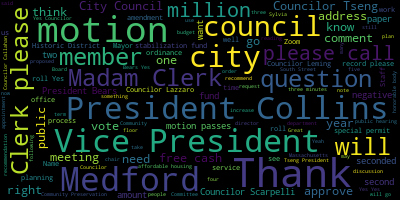
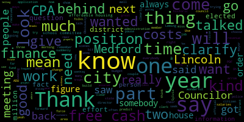
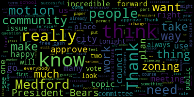
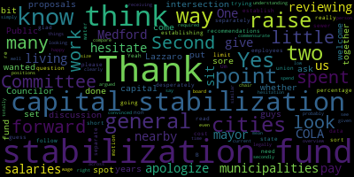
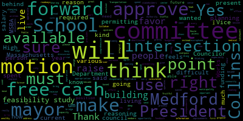

AI-generated transcript of City Council 06-25-24
Back to all transcripts
[Bears]: Council, 13th regular meeting, June 25th, 2024.
Madam Clerk, please call the roll.
[Clerk]: Good evening.
Councilor Callahan.
[SPEAKER_34]: Present.
Present.
Present.
[Clerk]: President Collins.
[SPEAKER_34]: Present.
[Clerk]: Councilor Lazaro.
[SPEAKER_34]: Present.
[Clerk]: Councilor Levin.
[Bears]: Present.
[Clerk]: Councilor Capelli.
Present.
Councilor San Buenaventura.
Present.
[Bears]: 7 present, 9 absent, the meeting is called to order.
Please rise and salute the flag.
Announcements, accolades, remembrances, reports, and records.
24429 offered by President Behrs.
Resolution celebrating Tom Lincoln's service as Brooks Estate President.
Whereas Tom Lincoln has served as President of the Medford Brooks Estate Land Trust and Belt since its founding and
Whereas Tom Lincoln led the efforts for the permanent preservation and conservation of the Medford Brooks estate, including both the historic buildings and open space.
And whereas Tom Lincoln has volunteered tens of thousands of hours to Medford over the past 30 years, helping to draft legislation to establish M-BELT, run hundreds of meetings and events, recruit volunteers, raise funds, write grants, and be the public face of M-BELT to the Medford and regional community.
And whereas after decades of service, Tom Lincoln recently stepped down as M-BELT president and has returned to the ranks of volunteers and citizen advocates,
Now, therefore, be it resolved by the Medford City Council that we congratulate Tom Lincoln on his storied career, preserving and restoring this essential city-owned property for future generations.
Be it further resolved that we invite Mr. Lincoln to attend a future city council meeting to present him with a citation for his achievement.
Be it further resolved that we invite the entire Medford community to attend the annual Brooks Estate picnic on Saturday, July 13th, 2024 from 12 p.m.
to 3 p.m.
at the Shepherd Brooks Manor to enjoy food,
community and to celebrate Tom Lincoln's work to preserve and conserve the Medford Brooks estate for all time.
Any comments by members of the council?
Councilor Lemme.
[Leming]: Just like to say that
When I was a member of the CPA, Tom Lincoln, he was one of our frequent customers.
He just brought in application after application to repair the Brooks Estate, and he's the driving force behind the upkeep of that property today.
This is just a case of an
ordinary citizen of Medford, seeing something that they wanted preserved, seeing a project that they could really get behind, and putting their time and energy into it.
And it's really paid off.
I look forward to telling Mr. Lincoln how much I admire him when he does come to the next city council meeting.
Congratulations, Mr. Lincoln.
You're a great citizen.
Thank you.
[Bears]: Any further comment?
Vice President Collins.
[Collins]: Thank you, President Behrs.
I think it's one thing to take a stroll through the Brooks Park, you know, by oneself or with friends or with family.
It's another to get a personal tour from Mr. Lincoln, which I was very lucky to do when I first took office.
And it really is incredible hearing that kind of layers deep history of all of the work
volunteer work, community work, just layers of investment that go into making this really such a jewel in the community, the outdoor space, the historic preservation that the community gets to enjoy more and more every year as the renovation continues to go on.
So my heartfelt thanks to Mr. Lincoln, you know, really an incredible, an incredible legacy to leave in Medford, to leave the Brooks Park estate so improved.
Thank you.
[Tseng]: Councilor Sang.
Thank you.
Mr. Lincoln's efforts, I think, have really put the Brooks Estate on the map in Medford.
His work, people don't see it, but behind the scenes, he's spending so much time going to events, informing people about MBEL, about the Brooks Estate, giving tours to counselors, giving tours to the public.
His work, I think, will be dearly missed by, and the next person will have huge shoes to pull.
Thank you, Councilor Scarpelli.
[Scarpelli]: Thank you.
Every community should have a Tom Lincoln.
I admire Tom for his conviction of what he believes in, and Tom was the person that fought for what he believed in.
And if anybody wants to know why the Brooks Estates is still standing and why it's still a great piece of our community, it's because of Tom Lincoln.
So I can't wait to see him and shake his hand and thank him because he put a lot of time and effort.
There are many, many nights that we would butt heads and not agree, but we would always respect each other.
And I admire what he did for our community.
And hopefully someone's ready to pick up that torch.
So thank you, Tom.
[Bears]: Thank you, Councilor Scarpelli.
And I have been lucky to serve now for five years as the City Council's representative on the MBELT board and work with Tom.
And Tom's tenacity, his experiences, frustration with the pace of change are all something that I've come
to know very well, and I am excited to thank him and congratulate him.
He is going to keep working with the Brooks Estate and on the Brooks Estate, which I think is fantastic.
We also have a new president, Carly Nesson, a Medford resident who stepped up to take on the role, and we're really excited to see what the next 30 years at the Brooks Estate looks like as we hope to finalize the master plan that was started 10 years ago.
Much of it has been done in terms of the restoration of the building, and now it is time to build the access drive, finish the restoration, and make sure that everyone in every part of Medford can access the wonderful open space that is the Brooks Estate.
So thank you all for your comments.
I'm sure Tom appreciates them, and is there a motion?
On the motion approved by Councilor Sang, seconded by Councilor Collins.
Madam Clerk, please call the roll.
[Clerk]: Yes.
Yes.
Yes.
Yes.
[SPEAKER_34]: Yes.
[Bears]: Yes, seven from the affirmative and the negative, the motion passes.
24-430, be it resolved by the Medford City Council that we congratulate Sylvia de Placido on her retirement as assistant city clerk and thank her for her decades of public service to the city of Medford.
Before I go to councilors, I do have a statement from the city clerk who could not be here tonight.
He didn't know when he made plans that Sylvia would be retiring, so he's traveling, but he did want to say something.
He said, inside room 103, I am the city clerk, but Sylvia is the boss.
Capitalized.
Even though I am a Springsteen fan of more than four decades, Sylvia is still the boss.
She gave this city 32 years of selfless, dedicated service.
If we count Dorothy Donahue's tenure as acting city clerk, and we should, then Sylvia has worked with four different city clerks, beginning with Joe McGonigal.
She knows everything there is to know about the city clerk's office.
She's our living encyclopedia for literally everything our office touches.
Sylvia leads by example.
Behind her seemingly gruff exterior is one of the kindest, funniest people we will ever know.
Sylvia's patience and humor have pulled our entire team through some particularly challenging times.
She has been an incredible teacher and mentor.
She is completely unafraid to tell me what I need to know, when and how I need to know it, in words that are unequivocal and easy to comprehend.
She is constitutionally incapable of sugarcoating anything.
These are virtues.
I will miss Sylvia's daily presence, but she's about to find out that she's only a phone call away.
I'm thrilled for her as she embarks on her hard-earned, well-deserved retirement.
My hope for her is nothing but happiness and more priceless time on the lake with Peter, Michael, Peter, Mark, and her beloved grandchildren.
Well done, boss.
Well done, and thank you.
It bears repeating.
[Scarpelli]: Let's say some nice things So we have known your family a long time and I just want to commend you and thank you and
It's people like Sylvia that kept Medford moving.
I know people think today's times might be a little difficult, but I remember some really tough times in Medford, and it's the people that made this building what it was and what it is.
And it's people like yourself that I personally am gonna miss, and it's like, I think that it's a piece of history that'll be walking out the door, but at the same time, you left a legacy here that I hope
everybody would follow because you've done an amazing job for our citizens.
And I know that this is going to sound bad, but I know you get paid every week and not a lot, but what you gave to us is priceless and we thank you so much.
So thank you for everything you've done for the city and enjoy retirement.
[Bears]: Vice president Collins.
[Collins]: Thank you, President Behrs.
Sylvia, thank you so much for so many years of service.
Congratulations on your retirement.
It is really hard to imagine the clerk's office without you.
And I think about the moments in my life in Medford that you have been there for when I filed for a business permit, when I pulled papers for the first time, when I took my first oath of office.
And I know there's so many people doing things that really contribute to the fabric of Medford, whether it's business permits or virtual licenses.
you know, applying for various things in the city of Medford, they have to go through you and your colleagues.
And you've been such an integral part of what that experience is like, of people trying to shape their life in various ways, shape their contributions to Medford in various ways.
And what an incredible role to inhabit for so many years.
So my thanks go out to you.
I think 32 years of public service really tells you a lot about a person and how they choose to live their life in service to their community.
I wish you only the very best for a very long and happy retirement.
Thank you.
[Tseng]: Thank you.
Councillor Sang.
Thank you.
I really can't beat the city clerk's words, but
Sylvia, I think you're the person I think of when I think of the clerk's office.
You've been there since day dot.
And when I walk in and I see your smile and I see you at your desk, it really lifts my mood in my day, no matter how a meeting in City Hall has gone that day.
go on, you know, family trips, I always make sure to bring something small back for the clerk's office.
And I always think that would still be appreciated.
You truly are the bedrock of the clerk's office.
I've heard it said that the clerk's office is like the front desk.
for City Hall.
So many people interact with the clerk's office.
So many people come to you and ask questions about where to go in City Hall, where to find services.
And you're always there with a smiling face day after day, helping our residents.
And I think that service, that long career of service to our residents should really be highly esteemed and really highly celebrated.
[Leming]: Councilor Lemming.
Thank you.
Just keep mine short and I'll say Sylvia, we love you.
We'll miss you.
We'll miss your humor and your presence in the clerk's office.
I don't think that
The clerks often get enough credit for all the work that they do behind the scenes and all the institutional knowledge that they bring to City Council and City Hall and the help either just with purely procedural stuff or just with moral support when we've had a rough evening.
And Sylvia will be dearly missed.
That being said, enjoy retirement.
Have a good time.
Thank you.
[Bears]: Thank you and just I want to say congratulations and your service has been so appreciated.
And my three terms, my first term, I didn't get to know as well because you were in here and many of us were not in this building during the pandemic, but you were here with the clerk's team processing birth certificates, marriages, death certificates.
I mean, it is the basics of civic life that run through our clerk's office, nevermind council agendas, which may not be the basics, but there's something.
since I've been vice president, now president, especially this past couple of years, I've spent a lot of time in the clerk's office and I've appreciated your humor, your welcoming me and pointing out that I may be sitting at the desk too much and shouldn't be an honorary member of the clerk's team as often, but always made me feel welcome and always tried to feed me candy and cookies, which,
I appreciate and my doctor regrets.
So it's been a real joy to spend time with you, Sylvia, and to get to know you and to see the end of many years of service, just the last tail end.
I didn't get to see the first 26 years, but the last few have been a privilege.
So congratulations.
Enjoy the pontoon boat with the family.
And I'll miss having you here too.
When Adam wasn't here, it's been great to chair meetings with you.
Thank you.
Would anyone from the public like to speak on this item?
You can come to the podium or raise your hand on Zoom.
All right, Madam Clerk, please.
Well, I need a motion first.
Is there a motion?
[Collins]: Motion to approve.
[Bears]: On the motion to approve by Vice President Collins, seconded by Councilor Tseng, Madam Clerk, please call the roll.
[Clerk]: Councilor Callahan?
[Callahan]: Yes.
[Clerk]: Vice President Collins?
[Collins]: Yes.
[Clerk]: Councilor Lazzaro?
[Lazzaro]: Yes.
[Clerk]: Councilor Leming?
[SPEAKER_38]: Yes.
[Clerk]: Councilor Scarpelli?
[Scarpelli]: Yes.
[Clerk]: Councilor Tseng?
[Tseng]: Yes.
[Clerk]: President Bears?
[Bears]: Yes.
Seven in the affirmative, none in the negative.
The motion passes.
24-431, be it resolved by the Medford City Council that we congratulate Janice DePace on her retirement as principal clerk and thank her for her decades of public service to the city of Medford.
Go to councilors.
Vice President Collins.
[Collins]: It's a happy day to get to congratulate two, you know, two civil servants with such incredible longevity and a history of so many years of contribution to our city.
To be able to congratulate two on retirement in just one evening is really a happy thing.
It's also a little bittersweet to say goodbye to two members, you know, two contributors to City Hall who have been so present for so many years, been of service to this council and to the community, you know, in ways personal and professional for such a long time.
Janice, congratulations.
Thank you so much for your many years of hard work.
Thank you for, you know, bringing not only your hard work, but your personality to this city hall.
We're sad to see you go, but again, best wishes for a joyful and long retirement.
Thank you.
[Tseng]: Thank you.
Councilor Tseng.
Thank you.
I think Councilor Collins really got at it by, you know,
talking about how bittersweet it is to both celebrate the retirements of two lovely individuals, but also, you know, how much, you know, we'll miss after.
Janice is, you know, one of those people who really has helped keep the clerk's office running.
She's really, you know, as Councilor Scarpaoli said in the last statement, the clerk's office has really been,
the engines have been in gear through thick and thin.
And Janice is a big reason why we've been able to keep moving forward as a city.
So I'm so deeply grateful to Janice and to her service for all of our residents.
Truly, she does so much.
Our clerks team is so remarkable and I'm gonna be very sad to miss both Janice and Sylvia.
[Scarpelli]: Thank you, Mr. President.
Janice DePace, I've known Janice for a long time.
I remember her children participating in sports, and I remember teaching with Janice while she was at Medford High School, and now she's...
on to bigger and better things.
I'm so excited for her.
She's just a great person.
If you know Janice DePace, she has a smile on her face and a special word for you just to keep, just to make sure you have a great day.
And she was like that with her students.
And I think that everybody that crossed her path.
So she'll be missing the clerk's office, but she's earned an amazing retirement.
So congratulations, my friend.
[Bears]: Thank you.
Now I'm gonna read from the clerk about Janice.
Janice does a little of everything in our office.
She brought vast knowledge and experience with her when she came to City Hall from the schools, and she has transformed operations for our team.
She has been a go-to resource for businesses, dog owners, restaurants, retail establishments, and anybody who needs information related to city government.
Speaking of go-to resources, she's been a go-to resource for everybody at City Hall.
She arrived at the clerk's office with a large network of teachers and former students, all of whom she remembers by name, when they arrive in Room 103 for copies of their birth certificates, to file their marriage intentions, and to renew their dog licenses.
and all of whom remember her by name with kind words as well.
Janice nails our customer service mission every single day, leading with kindness.
She has passion for her job, combined with skills that can't be taught in any training session, along with a cosmetology license for anybody who might need a quick cut or trim.
She enjoys our customers and her colleagues, and they enjoy her.
She leaves City Hall with many years of service to our city and our residents.
I'm grateful for the work that she's done and for her friendship, commitment, and humor.
She has made our city a better place in which to live and work.
I wish her the best on her next adventure.
And I will just say to Janice that it has also been a privilege to serve and see her service in the clerk's office.
Similarly to Sylvia, Janice has always made me feel welcome in the office.
We always have a story to exchange or a bit of news to share.
But I think especially something to say is, I think it's both a testament to their
being great colleagues and friends, but also a loss at the same time that Janice and Sylvia get to go out together.
They both get to retire luckily at the same time.
And I think maybe neither of them could have imagined serving without the other in the office.
So they both have dedicated so many years of service and are able to step out into their retirement or their next adventure.
together, and I think that's a beautiful story.
So, with that, is there a motion on the floor?
On the motion by councilor saying to approve, seconded by Councilor Lazaro, Madam Clerk, please call the roll.
[Clerk]: Councilor Callahan?
[Callahan]: Yes.
[Clerk]: Vice President Collins?
[Collins]: Yes.
[Clerk]: Councilor Lazzaro?
[Lazzaro]: Yes.
[Clerk]: Councilor Leming?
[Leming]: Yes.
[Clerk]: Councilor Scarpelli?
[Scarpelli]: Yes.
[Clerk]: Councilor Tseng?
[Tseng]: Yes.
[Clerk]: President Bears?
[Bears]: Yes.
Seven in the affirmative, none of the negative.
The motion passes.
24-419 offered by Councilor Tseng.
Resolution congratulating Donna Lasky on her retirement.
Be it resolved that the Medford City Council congratulate Donna Lasky on her retirement from her long and storied career as a teacher in the Medford Public Schools and thank Mrs. Lasky for her years of service and care for Medford students.
Councilor Tseng.
[Tseng]: Thank you, President Bears.
Mrs. Lasky was my fourth grade teacher.
She is such a legendary teacher that even before I made it to fourth grade, she was the cool teacher that everyone wanted to be in her class.
She did so many creative activities with students.
I remember
she used to run classroom elections, and everyone got really excited and involved.
And even if you didn't get a spot, I think you felt a buy-in into the classroom.
You felt like you were part of a group of people working together and building a community.
That's something that she did so, so well.
I think I remember
It's so funny.
I remember after a parent-teacher meeting that I wasn't at, she gave my parents really outside-of-the-box tips for how to get me out of my shell and how to get me more comfortable just making friends and speaking out for myself.
And those tips, I think, have carried through with me through the years.
And I hope I've done you well.
Another, I think, amazing moment was when Mrs. Lasky brought in her husband, Fred, to teach us about the MWRA and to teach us so much about how the water system works here in Medford and why water conservation is important.
And it's small memories like that that I think really lead to the happiness of a childhood.
It's all those nostalgic memories that we look
At least I'm looking back on a lot recently with all these retirements.
Mrs. Lasky, thank you for your service.
Thank you for your 25 years of service to the Medford Public Schools and for helping them since 2001.
You mean so, so much, not just to me, but to so many members of our community.
I really want to both celebrate
this moment, and to say that I will be sad that when I go back to the McGlynn, I won't see you there.
But I know I will see you around Medford, and I look forward to seeing you around a lot more often now.
[Scarpelli]: Thank you.
To the Babe Ruth and Willie Mays of the teaching profession.
I wanna thank Mrs. Lasky because I had the honor not only to be a parent of a child in her class, but also a colleague.
And you were the pinnacle.
You were what everybody wanted to aspire to as colleagues.
And you never, you never wavered in your emotions.
You were just a great teacher
You were there for every single child.
And I know the impact you made in my child's life.
You know, dad's an elected official, but my son could care less about politics until he ran for fourth grade president.
And he woke up one morning with a suit on and he says, dad, can you hold this behind me?
I said, what is it?
He said, it's American flag.
And I said, what are you going to do?
He says, I'm going to give my speech with someone holding the American flag behind me.
And I said, how come you didn't carry it with what dad's doing?
He says, you weren't in Miss Lasky's class.
And to Justin's point, I remember when he came home one day, he met Mr. Lasky and he says, I know what I want to do for my future, dad.
I said, why, what do you want to do?
He says, I met Mr. Lasky, and I want to be the reason why we clean Mystic the lake so we can all swim.
And just those impacts that we made, the growth and respect to our environment, the little lessons that became huge lessons today.
I thank you from the bottom of my heart because it takes a village to raise your children.
And we were very fortunate, the Scott Pelley household, to have you as one of our children's teachers and teaching them from right and wrong.
So we thank you so much.
You earned the retirement.
I know there's a huge void at the McGlynn.
I remember when we started, that was the A-Team, remember?
And to be in the same breath
as you know, I think was by default with my position, but to be in the same breath as when they called the 18 and talk and stand side by side with Don Alaska gave me a sense of pride.
So thank you so much.
Thank you for all your work and enjoy the retirement.
So thanks.
[Bears]: Thank you, Councilor Scarpelli.
I was neither a student or a parent or a colleague of Donna Lasky, but I was a student at Medford High with a Lasky child.
And I just know the impact that that family has had at multiple generations on this community and the service they provided to the city and to our young people.
So I'm incredibly grateful for Donna and for all of you for being in Medford and giving so much to our community.
Any further comments?
Would anyone from the public like to speak?
[Scarpelli]: I would like, if we can, Mr. President, is bring Ms.
Lasky back, and we send her off with one of those wonderful citations that you draw up.
Sure.
That'd be great if we can.
You got it.
Maybe invite the whole Lasky family, because I know we haven't seen them for a while.
But thank you.
[Bears]: All right.
Two meetings for you guys, I guess.
Congratulations.
on the motion, oh, Director Hart.
[Hunt]: May I just, but also, did I see the Chief here?
Yeah, did I see the Chief here?
She is right there.
So I can't talk to them and you at the same time, but Mrs. Lasky has actually been one of the first teachers to be very supportive of the Environment Office in Medford and the Harvester Energy Festival that we hold every year behind the McGlynn School, and Mrs. Lasky's participated in that with our students as well.
And her husband was also chair of the Energy and Environment Committee when it was reformed as the Energy Committee in 2010.
And so I thought that it would be prudent for me as the Director of Planning, Development, and Sustainability to thank her for her service as well.
And I was really sad to hear you were retiring.
But we have positions on boards and committees.
You can see me later about that.
Thank you.
[Bears]: Thank you.
On the motion of Councilor Seng, seconded by Vice President Collins, Madam Clerk, please call the roll.
[Clerk]: Councilor Calderon?
[SPEAKER_34]: Yes.
[Clerk]: Vice President Collins?
Yes.
Councilor Lozano?
Yes.
Councilor Osanic?
Yes.
Councilor Scopelli?
[Bears]: Yes.
Yes, seven the affirmative, none the negative, the motion passes.
24435 offered by Councilor Scarpelli.
Be it resolved that the City Council sends our deepest condolences to the family of former Medford Police Detective Lauren Kane on her recent passing.
Councilor Scarpelli.
[Scarpelli]: Thank you, Mr. President.
We recently lost an amazing person from an amazing Medford family.
We had Lauren Kane passed away.
Those people that didn't know Lauren, Lauren was an unassuming but very powerful figure in our community for the fact when being a police officer, a female police officer, wasn't the norm.
she took that job with such pride and such vigor that she started as a young person, as a teacher, and then moved on to be a police officer, and then moved on to hold
to hold huge positions with the drug enforcement team and making sure that she played a huge impact in making sure that drugs weren't being distributed to our youth.
And she worked for the DEA.
She worked for the city of Cambridge.
And most of all, she worked here for the city of Medford.
Um, it's a sad day for, uh, the method police department that they lost one of their own and, uh, she will definitely be missed.
So I would ask that we send our condolences to the cane family for, um, for a person who really gave her life for our community.
And, um, we may she rest in peace.
So thank you.
[Bears]: Thank you.
Councilor Scarpelli, vice president Collins.
[Collins]: Thank you, President Beres.
We want to thank you, Councilor Scarpelli, for putting this forward tonight.
Of course, it's always a sad occasion when somebody with such a huge impact, you know, yet another public servant, when we have to mark their passing here in Medford.
You know, and sad as it is, I'm glad for the opportunity to reflect on, you know, a person, a woman with a career that, who really ran right at challenge and the ability to do an outsized amount of good in our community.
So I spend my deepest condolences to her family.
[Bears]: Thank you.
Would anyone from the public like to speak on this item?
Seeing none in the chamber and none on Zoom, please rise if you are able for a moment of silence.
Thank you.
On the motion of Councilor Scarpelli, seconded by Vice President Collins, Madam Clerk, please call the roll.
[Clerk]: Councilor Tao?
[SPEAKER_34]: Yes.
Vice President Collins?
[Clerk]: Yes.
Councilor Zahra?
[SPEAKER_34]: Yes.
[Clerk]: Councilor Fleming?
Yes.
Councilor Scarpelli?
Yes.
Councilor Thang?
Yes.
President Villescaz?
[Bears]: Yes.
Seven in the affirmative, none in the negative, the motion passes.
The records of the meeting, records, the records of the meeting of June 11th, 2024 were passed to Councilor Scarpelli.
Councilor Scarpelli, how did you find the records?
On the motion of Councilor Scarpelli to approve the record, seconded by Vice President Collins.
Madam Clerk, please call the roll.
[Clerk]: Councilor Callahan?
[SPEAKER_34]: Yes.
[Clerk]: Vice President Collins?
[SPEAKER_38]: Yes.
[Clerk]: Councilor Lozano?
Yes.
Councilor Levee?
[SPEAKER_38]: Yes.
[Clerk]: Councilor Scarpelli?
Yes.
Councilor Tang?
Yes.
[Bears]: Yes, several affirmative, no, the negative, the motion passes and the records are approved.
Reports of committees, 24-033 offered by Vice President Collins.
Planning and permitting committee, June 12th, 2024.
Report to follow, Vice President Collins.
[Collins]: Thank you, President Beers.
On June 12th, the topic of the planning and permitting committee, which was the same one as which wrapped up right before this regular meeting, we were meeting with our zoning consultant, Innis Associates, which frequent flyers have heard me give this context before.
This is the zoning consultant that the city council hired at the end of last term.
And in many meetings of the planning and permitting committee this term, we have been working with them to create a work plan
pulling from the comprehensive plan, the climate action adaptation plan, the housing production plan to consider proposed changes to the zoning ordinance to make manifest in our zoning the goals and topics that the community has placed into those plans.
The topic of the June 12th meeting was to review the status of the mapping analysis and the topic-based work plan that will inform our future committee's work and votes over the summer and into the fall.
motion to approve.
[Bears]: On the motion to approve by Vice President Collins, seconded by second, seconded by Councilor Ming.
Madam Clerk, please call the roll.
[Clerk]: Councilor Callahan?
[SPEAKER_34]: Yes.
[Clerk]: Vice President Collins?
[SPEAKER_34]: Yes.
[Clerk]: Councilor Lozano?
Yes.
Councilor Laming?
[Bears]: Yes.
[Clerk]: Councilor Scapelli?
Yes.
[Bears]: Yes, I mean affirmative none of the negative the motion passes refer to committee for further discussion to 4-4 to 2 offered by councillor Lazaro Whereas the Massachusetts Department of Transportation is planning to make changes to a busy intersection in the heart of Medford Square Which will impact drivers cyclists and pedestrians for many years to come and whereas the Medford Bicycle Commission attended an informational meeting on
and express concerns with the plan made thus far.
Now, therefore, be it resolved that a representative from the Massachusetts Department of Transportation, familiar with the plan, shall meet with the Medford City Council, a representative of the Medford Bicycle Commission, and a representative of the City of Medford Traffic and Transportation Department in committee to discuss said plans.
Councilors, which committee would you like to refer us to?
[Lazzaro]: I think the Department of Public Works committee makes the most sense.
Councilor Callahan is the chair.
I think because it's to do with traffic, changing the roadways and intersections there.
That intersection, it's the one right below the overpass of Route 16, the bridge over the river, right by deep cuts.
It's a very busy intersection.
The Massachusetts Department of Transportation is
in charge of it, but it is really integral to how the center of Medford operates.
And I think it's important that we make sure that the community is involved and we have a lot of stakeholders.
And I think it would be a great opportunity for that committee to have a fruitful discussion and make sure that we're sharing our opinions on how best to address improvements
[Bears]: Thank you.
On the motion of Councilors are to refer to the Public Works and Facilities Committee seconded by Vice President Collins.
Councilor Lemming.
[Scarpelli]: Councilor Callahan.
[Bears]: If everyone could shut off their microphones, please.
Councilor Callahan.
[Callahan]: Thank you.
And thank you, Councilor Lazaro.
I know that this intersection has been a sore spot for many years, and I look forward to a discussion in the Public Works Committee.
So I welcome that to come into the committee.
Thanks.
[Bears]: Thank you.
On the motion, Madam Clerk, please call the roll.
[SPEAKER_38]: Yes.
Yes.
Yes.
Yes.
[Bears]: Yes, I have an affirmative, none in the negative.
The motion passes.
Vice President Collins.
[Collins]: Thank you.
I have a motion to suspend the rules to take the following papers out of order.
24-426, 24-418, 24-423, 24-424, and 24-436.
[Bears]: On the motion of Vice President Collins to take papers 2-4-426, 2-4-418, 2-4, you said 4-2-3?
Dash 4-2-3, 2-4-424, and 2-4-436.
In that order, seconded by?
Second.
By Councilor Lemming.
Madam Clerk, please call the roll.
To take these, yeah.
[Clerk]: Yes.
Yes.
Yes.
[SPEAKER_34]: Yes.
[Clerk]: Yes.
[SPEAKER_38]: Yes.
[Bears]: Yes, 70 affirmative, none negative, the motion passes.
24426, be it ordered that the city council enact a temporary moratorium on the issuance of licenses and permits for the purpose of operating a methadone clinic distribution facility in the city of Medford, and be it resolved, this moratorium remain in effect until a recommendation is received from the mayor's office proposing amendments to the zoning use chart to establish safe access to said facilities in the city of Medford, and be it further resolved, all meetings related to this topic be held in the hybrid fashion, accessible to both citizens, both in person and virtually.
We do have an update.
We received a letter from Habit Opco LLC today, June 25th, 2024.
I'll read it now.
Re Habit Opco LLC application for a special permit for Treatment Center 360 Salem Street, Medford, Massachusetts.
Dear city councilors, we're writing on behalf of Habit Opco in connection with tonight's city council meeting.
As you know, on April 16th, Habit Opco applied for a special permit.
for a comprehensive treatment center, quote, CTC proposed for 360 Salem Street.
Yesterday, we learned of a proposed resolution, 24-426, placed on the meeting agenda.
The resolution urges the city council to impose a citywide moratorium on opioid treatment programs.
We thought you should know that Habit Opco is withdrawing its special permit application for 360 Salem Street.
It intends to search for a different location within Medford,
We made this decision carefully after meeting with officials, reviewing public comments, and weighing relevant considerations.
As you know, after filing its application, HABIT OPCO reached out to city staff and officials, including city councilors, to discuss any concerns.
It is an open-door policy to discussing issues and considering feedback, and we intended to approach the special permit hearing with the same openness.
We still feel we could address neighborhood concerns, but we recognize that there are times when a certain amount of adversity can undermine a cause.
We take as genuine the comments of many Medford residents that they are not averse to the use
or blind to the need, but have concerns with the proposed location.
Habit Opco is committed to ensuring that victims of the opioid crises have access to life-saving medical care.
Medication-assisted treatment is the best tool we have to combat that crisis that has claimed thousands of lives in Commonwealth.
There's an urgent need for treatment facilities, yet locations are not easy to find.
We look forward to working with the city to find an appropriate location for a CTC, and we thank all of those who have provided helpful insights over the last two months.
Please feel free to reach out if you have any questions.
Douglas Troyer, attorney for Habit OpCo LLC.
We also have Planning Director Hunt and legal representation here.
And with that, I will turn over to Councilor Scarpelli.
I will just remind everyone again, the application has been withdrawn.
The council is not the special permit granting authority for this type of use.
Councilor Scarpelli.
[Scarpelli]: Thank you, Mr. President.
So first I want to commend the neighbors and the residents that really pulled together.
And what you see in front of you is what happens when you see that something might affect our neighborhood in a negative way.
What I found amazing is I went to an organization, a group of neighbors put together a meeting at the Fireman's Club, and I think probably about 130 people showed up.
And what we heard from everybody there with respect and honor to every individual involved was that nobody was against the process of helping people.
But what everybody was looking for is making sure that this facility or a facility like this would be put in a location where it didn't affect residential neighborhoods.
It's amazing to see the community rally around this and really start a grassroots quick organization to really rally around and just educate people.
And I think that's what's important.
I think that we have, what I realized in those conversations, there were some people very angry at George Scapelli.
and deservedly so.
I think this is something that we talked about with our leadership team here that when we did the recodification of our zoning and we implemented these type of facilities in the medical field, in the zoning process, that it was then going to go to a special permit.
We realized the impact it could have now legally
with the facility like a methadone, and people keep saying clinic.
And what really brought a lot of people to their feet was it's not a clinic.
There weren't people there to assist people that were addicted, but it was just a distribution site.
And
We had people that were involved that were both former recovering addicts, and we talked to administrators in the field, and they really shared an input that really educated a lot of people.
And again, at the end of the discussion, it wasn't that, let's keep these people out of Medford.
No, it was, if it's needed in Medford, let's find a location where
they can get their help and the support, but at the same time not affect a residential area that's.
Feeds away from a dance studio, a school, the lack of parking in that area affecting small businesses.
So there were a lot of little intricacies that played a huge part in what that neighborhood, the effects it would have had in the Salem Street neighborhood.
I commend the mayor.
I think that I had some issues because we wanted to make sure that without a city solicitor, I reached out to the mayor this weekend.
She had an attorney that's well-versed in these topics to call me to make sure that we didn't say something that would get us in trouble later.
And I think that with this motion,
And as this process started moving forward, you saw that everybody was listening.
You saw that every department in the city was listening.
The mayor was listening, right?
The Board of Appeals said, one of the biggest questions was, well, how do we make this a hybrid meeting?
Because there are people that couldn't make a Zoom meeting.
So making it, opening it up to everybody in the community so everybody had an input in this decision.
My motion tonight would still be for a moratorium moving forward, but working directly with Mrs. Hunt and the mayor's office and making sure that we look at our zoning to make sure that any
Any facilities under this criteria are moved into non-residential areas where it won't affect our residents.
So again, there's still a process, but that would be my recommendation and my resolution if we can, Mr. President.
I know that the meetings are hybrid, so everybody can still attend those meetings.
That was very important.
And again, I can't thank
This sometimes is elected official, you look back and you say, geez, with this process, sometimes being a politician, you get, you know, your colleagues have one way of thinking, you have another way of thinking, and kind of get a little discouraged.
But one thing you do know is that you all love the city of Medford, and we're all fighting for the right reasons.
And what I saw
this past week with community members rallying together to make sure everybody was heard.
What I loved, there was, you know, I'm getting phone calls from young people that have young children in the schools that just moved to Method a few years ago, but in the same breath, they were
introducing me to their 88-year-old neighbor that they were making sure that they felt comfortable.
And that's what's amazing.
We really took care of our neighbors with this situation.
And again, I'm going to say this again because we talked about this issue too.
This wasn't to divide at all.
I know that people are looking at social media and saying, this part of the city is saying, suck it up.
This part of the city is saying this.
These people are saying that, you know, shame on you for not wanting to take care of people that need support.
That was never the case.
With everybody I talked to, it was an open mind, but with the goal of making sure that
These types of facilities are located in the community that doesn't affect our residential neighborhood.
So I give them all the respect and pats on the back that they deserve.
And I appreciate this company that realized that maybe this isn't the way to go and didn't want to continue with the fight.
For now, Salem Street is in a better place right now because there were a lot of issues.
And it wasn't just what people would think that with the methadone distribution site coming.
People were concerned about the parking.
People were concerned about the small businesses.
And people were concerned about that whole corridor.
And I think that it was really expressed in a mature, responsible,
diplomatic and not divisional conversation.
So I appreciate that.
And I will tell you, I am so impressed with, and as I move forward, I'll put a motion through Mr. President later on, that we convene a community engagement committee that brings in the talent we have in our community,
You know, there are some amazing people that are in the field of addiction.
There are amazing people that are engineers, and there's amazing people that work with traffic studies, and there are doctors, and there are legal minds that really came out and shared their expertise for the greater good.
Not to be negative, not to go one way or the other, but really to share an opinion.
I commend everybody here for being here and following through with something that they knew that was going to impact their neighborhood and this community.
So I'm glad to see that a wrong is righted and we'll be working hopefully after we pass this resolution that we work with the mayor's office and the community development team and really try to change that zoning so we're not in this position again that we're making sure that if it's needed then
we'll have a location where it's not gonna impact the community like it has in last week.
So thank you, Mr. President.
Thank you.
[Bears]: Thank you.
And thank you, Councilor Scarpa.
I think we have noted here that all of the parties involved, whether it's the city council and city councilors or planning office or residents and community members who are engaged and even the petitioner, as they noted in their letter, they did want to hear the feedback of the community.
They did want to engage in good faith.
They did want to do this the right way.
So that is where we are.
We have an intent and an approach, I think, to work together to find a site, if they want to continue looking in Medford, that meets community needs.
And I think that is what we ask of everyone who petitions for a special permit of any kind.
I also want to note that the zoning we have now does need to be updated.
We're working through that process.
This was a special permit process, so there still would have been a process to require.
They couldn't just come in and do it in a residential area, which I think is an important point to note.
We do have the planning director and council present.
I do want to invite Director Hunt up.
to speak, and then I'm hoping we can refer this to the committee to come up with something.
I know that we got some legal advice around the specific structure of something like this, how it would need to be structured.
People with substance use disorders are a protected class, so we have to be very careful in the legal construction of anything around this.
Right now, if we were to institute something with the current zoning, we would ban any medical office from opening in the city of Medford whatsoever.
So we really need to go through the diligent process to get this right and follow the law.
So that's what we will do.
And with that, I will go to the Director of Planning, Development and Sustainability, Alicia Hunt.
[Hunt]: President Bares, I think that you, Alicia Hunt, Director of Planning, Development and Sustainability, I think you actually said everything
that I was, uh, had prepared to share with the council.
Um, there are a couple of just the points that I just want to make sure that everybody's aware of is that addiction is defined as a substance use disorder and is recognized as a disease.
And therefore we need to be careful about any civil rights violations.
And so we have to be very careful about how everything is framed, what people say, how it's, um, how it's handled.
I provided information to the council,
or to Councilor Behrs, from the U.S.
Commission on Civil Rights or Statements on Substance Abuse and the ADA, which is a very difficult situation because having a disease is a protected class.
I did want to make sure that everybody from the public knows that all of the letters that were received by myself, by the planning office, and by the Zoning Board of Appeals
were provided to the applicant.
So they do have, I thought about counting the numbers of letters, but there are a lot of them.
So all of those statements, all of that information has gone to them so that I didn't want anybody to think that there wasn't an opportunity to express that.
When we talk about moratoriums, the legal advice is that they have to be time limited and tied to a significant impact.
and have a plan for resolution.
Also this situation, this is a zoning special permit.
Therefore the city council doesn't actually have the ability to just pass a moratorium in one meeting.
For example, you could not vote tonight to pass a moratorium on medical office uses in Medford or substance abuse clinics and that take effect because it's a zoning issue.
Therefore, the proper language, as you started to say, has to be put in front of the City Council, which then has to refer it to the Community Development Board, who has to hold a public hearing.
And the public hearing must be properly noticed for two weeks, and then they refer back their
recommendation to the City Council, which must also hold a public hearing.
So I just wanted people to be aware that there is not actually a legal option here to just pass something tonight.
It would literally have to go through.
I mean, you could pass a resolution that the City Council cannot issue a permit, but this permit is not in front of the City Council.
So I just wanted to be clear about the process and that it does take some time to be done correctly.
And the other item that I wanted to mention is that the CD board and the zoning board both received the notice to withdraw.
So they intend to basically receive that and accept that withdrawal and not take public comment.
I will say that the zoning board will be hybrid still because that is how it was advertised.
So the intention is that the zoning board on Thursday night
some of the staff and at least the chair, I don't know how many of the members will be here in the council chambers, and the option would be to come here in person or remote.
There are actually a large number of items on the agenda for Thursday night.
The CD board, in order for us to hold a proper hybrid meeting, we really actually, especially anything that's gonna have a large number of attendees, needs to use the city council chamber.
So the city council chamber is not available Wednesday night for the community development board,
because the City Council is using it.
So that meeting had intended to hold a room that would be available here in City Hall with staff for anybody who doesn't have access to Zoom.
to help them provide public comment, display the meeting on the large monitor, and have them be able to speak through that through staff, to speak on the meeting, but the staff would work the Zoom in the other, sorry, the other conference room.
So I just wanted that to be clear.
They can still provide that option, but the only items on the CD board meeting then without this is a,
very technical item called an approval not required and approval of minutes.
So I don't want people to waste their times because I know people have very busy lives.
So I just wanted to put that information forward.
If there are any questions about
the procedural matters, I am more than happy to answer procedural questions.
[Bears]: I just wanted to confirm what you just said for simplicity's sake.
The application has been withdrawn.
There's currently no application to consider this from this company anywhere in the city.
It will be withdrawn at tomorrow night's City Community Development Board meeting, Thursday's Zoning Board of Appeals meeting.
And as discussed in the letter and as discussed by Councilor Scarpelli, the intent of all parties is to have more discussions about as a city developing
and looking at this in the zoning context and from the applicant working in good faith with the city and community members to find a site if they want to continue in Medford, that is not in a residential area.
[Tomaszczuk]: That is correct.
[Bears]: Thank you.
Vice President Collins.
[Collins]: Thank you, President Beers.
Thank you for putting this forward, Councilor Scarpelli.
Thank you so much for the context, Director Hunt.
Thank you to so many people for joining us in the council chambers, as always.
I wouldn't wanna put words in Councilor Scarpelli's mouth, but when we're on the topic about how to proceed here procedurally, in the committee meeting directly before this one, in the planning and permitting committee, we were actually just discussing the issue of Salem Street Corridor as one of our zoning priorities as we move forward.
So I think that this could be just a really cohesive move to refer this paper, which as we've been discussing needs a little bit more
that it needs tweaking.
This is a zoning issue.
We've never done a zoning issue in one meeting.
I think that that aligns very closely with the work that we were just discussing doing in the zoning committee, knowing that the rezoning of re-evaluating the zoning of Salem Street is already a priority for the council.
We were just speaking about that in the last committee meeting.
And so I think it could be, I think it could dovetail really nicely with our existing plans to take a look at Salem Street Corridor in addition to some other priority corridors in the city and say, what does our zoning allow us to do here by right?
What does it allow us to do by a special permit, which until this permit was withdrawn, applied to this permit, what do we wanna see on these corridors and how should we update our zoning so that we get what we want and we don't have to worry about what we don't want
here.
And I do want to note, I've been hearing this, you know, over and over for the past couple weeks, and I'm really heartened to hear it from so many people in the community saying, it's not that I think we shouldn't have this in Medford.
It's just that the location has to be right.
And I think that something I'm really certain we all share is that, you know, we know that this is something that people need.
This is a service that people need, that people in Medford need, that our neighbors need.
We want it to be successful.
And in order to be successful, it needs to be in the right location.
And I think that we can, I would love to prioritize this issue within our existing zoning work to make sure that as we're reevaluating our zoning already in progress, we're taking a look to say, where's the right spot for this use and how can we make sure that it can occur here and not in locations where it's going to be less successful and less supported by residents for understandable reasons.
Thank you.
[Bears]: Thank you.
Is there a motion on the floor?
I'll go to Councilor Zaro, but was there a motion to refer?
I couldn't quite tell.
[Scarpelli]: I'd like to clear clarity with the Council, if I can, Council President.
I know we have the Council, we have a representative that the city had hired to work directly.
I just want to make sure that
I, what I put in as a motion is legally, um, you know, acceptable.
I don't want to put something in that's going to negatively affect that.
[Bears]: I did invite the director and council up for specific questions to them.
So I will, we'll do that and then we'll go around and then we'll be done.
Thank you.
[Mullen]: Councilor, Mr. President, my name is Tom Mullen.
I've been retained as special counsel pending the determination of whether KP law, your city solicitor, uh, has, has a conflict or can continue, uh, with this matter.
Um,
As we heard Councilor Scarpelli say, the focus here is going to be making sure that a dispensary of this type, if it goes into Medford, goes into the right place.
And that is going to be the focus of any amendments to the zoning ordinance.
I would ask that you not, um, uh,
attempt to deal with this with the blunt instrument of a moratorium.
I say that because there have been a number of cases in Massachusetts and in our First Circuit
where cities and towns attempted to use a moratorium and they were struck down.
And losing a case like that means you lose a civil rights action, there are damages, you pay the other side's attorney's fees in addition to losing the issue.
The right way to go about this, I think, is the way that the council has been tending this evening, which is to work on amending the zoning ordinance to make sure that dispensaries like this, which everybody agrees have a place, are in the right place, and to deal with the effects, the externalities, such as traffic and parking, that bother all of us.
I hope that answers your question.
[Lazzaro]: Point of information, President?
[Bears]: This is a question for Council.
Councilor Zahra.
[Lazzaro]: Can we please use the words medical office instead of dispensary?
[Bears]: We're not going to do this tonight, y'all, so...
All right, would you, we can stop right now if we want.
Please don't disrupt the public meeting.
Please don't disrupt the public meeting.
We have a good resolution here.
And if you want, we can shut this down right now.
[Scarpelli]: Mr. President, if we could just move forward and send this to the subcommittee in zoning and we stop the process as soon as we can.
[Bears]: We have a motion to refer to planning and permitting committee.
Is there any further questions or comment for council or for the planning director?
I don't think so.
[Scarpelli]: No, I think we eliminate the moratorium.
I've taken that out.
I think that we restructure the motion to ask to refer this to the zoning, our subcommittee in zoning to draw up the legal and proper terminology to move this forward.
[Bears]: Great.
[Scarpelli]: Second.
[Bears]: Great.
Any further questions for council, for members of the council?
On the motion of Councilor Scarpelli to refer to Planning Committee and Permanent Committee for further discussions around zoning, seconded by Vice President Collins.
Madam Clerk, please call the roll.
[Clerk]: Councilor Callahan?
[SPEAKER_34]: Yes.
[Clerk]: Vice President Collins?
[SPEAKER_34]: Yes.
[Clerk]: Councilor San Buenaventura?
[SPEAKER_38]: No.
Yes.
[Clerk]: Councilor Scarpelli?
[SPEAKER_38]: Yes.
[Clerk]: Councilor Vang?
[Bears]: Yes.
Yes, six affirmative, one negative, the motion passes.
24418, recommendation for Medford Affordable Housing Trust Fund Board of Trustees.
June 10th, 2024 by electronic delivery regarding recommendation for the Medford Affordable Housing Trust Fund Board of Trustees.
I respect the request and recommend the honorable body approve the following candidates to serve on the Board of Trustees for the Medford Affordable Housing Trust Fund.
[Scarpelli]: I'm sorry, can you give us some guidance?
I know that we have residents that have worked very hard on this issue that want to be heard tonight.
If there's a possibility that they can express their input and their time and effort they put into this, I would recommend or ask that you would allow them to.
[Bears]: Yes, we just moved through the item and it has been disposed of.
I'm happy to take it up under public participation or public participation item from Charles Rodriguez.
[Scarpelli]: Okay, so if you want to speak on this, you'll have to wait at the end now to public participation, and you can speak on this.
[Bears]: I'm gonna keep reading.
In accordance with the MedFed Affordable Housing Trust Fund Ordinance, the Board of Trustees shall be appointed by the Mayor.
Upon approval from the City Council, the Board must consist of seven members, including the Mayor or their designee.
The Ordinance stipulates that the initial appointment of Trustees must be staggered, with three members serving a one-year term and the remaining four serving a two-year term.
Subsequent appointments and reappointments except for the Mayor's seat will be for two-year periods.
Below are the six recommended candidates with their initial staggered terms.
One, Kayla Lesson, two-year term.
Two, Roberta Cameron, two-year term.
Three, Lisa Ann Davidson, two-year term.
Four, Carrie Weaver, one-year term.
Five, Penelope Taylor, one-year term.
Six, Lisa Son, one-year term.
Furthermore, information on each candidate is enclosed to support the candidate recommendation submission.
Thank you for your consideration.
Respectfully submitted, Brianna Longo-Kern, Mayor.
I would invite the Office of Planning, Development, and Sustainability Director or the Chief of Staff to present the nominees.
Thank you.
[Hunt]: Thank you, President Behrs.
Our housing planner, Aditi Mungar, is going to present the candidates.
[Bears]: Great.
Welcome, Aditi.
[Mogul]: Good evening, members of the city council.
I'm Aditi Mogul, a staff planner for housing.
I'm here in support of the recommended candidates.
We have most of the candidates present either in person or virtually.
I'd like to present Kayla Lason, who's here with us.
[Clerk]: Welcome.
[Mogul]: I'd like to introduce Penelope Taylor.
I'd also like to introduce Roberta Cameron.
We have Lisa Ann Davidson on Zoom, and we also have Lisa's son on Zoom.
And our sixth candidate, Kerry Weaver, unfortunately is not here due to some scheduling conflict.
[Bears]: Got it.
Sure.
I mean, I would have.
Please don't disrupt the public meeting we have business to attend to.
If a councilor wished to make a... On a motion for councilor to recess for five minutes, seconded by Councilor San Buenaventura, please call the roll.
[Clerk]: I didn't make anyone do anything.
[Bears]: Thank you on the recess.
[SPEAKER_34]: Yes.
[Bears]: The motion was disposed of per the council rules.
There was a vote that was taken and disposed of it.
The agenda, I can't call people out of order, that needs to be a vote of the council.
Councilor Scott probably could have proposed that, there could have been a second, we could have had a vote on it.
I can't just discretionarily move items around, that is not my role.
The agenda's written the way it's written, public participation's at the end of the meeting.
There was a vote, there was a motion and a vote.
Once an item is disposed of with a motion and a vote, it is concluded.
It's just the rules, thank you.
I'm sorry, I have to follow the rules.
I have to follow the rules.
I have to follow the rules.
All right, let's keep yelling personal attacks.
I don't think that'll get us anywhere.
If this is how it's gonna go,
I'm just following the rules.
[Clerk]: I can't comment on rumors.
[Scarpelli]: I think we're in a good place.
I don't think this is productive.
So we're in a recess.
Thank you.
[Bears]: You should, you don't have to do a vote, but yeah, 842, yeah.
The Office of Plenary Development and Sustainability has received and reviewed applications for the Board of Trustees and has met applicants to understand their backgrounds and interests in affordable housing.
The Affordable Housing Trust Fund will convene once a month on Wednesday with its first meeting to be scheduled in July 2024.
The specific date for monthly meetings will be determined after consultation with the trustees.
The trust may establish a subcommittee or a working group that will meet more frequently to develop an action plan for the trust.
Below are the six recommended candidates with their initial staggered terms.
Kayla Lesson, two year term.
Kayla Lesson is a resident of South Medford and works as an asset manager with legal background.
Kayla has 13 years of experience working for a real estate company that owns mixed income apartment buildings in the greater Boston area.
Kayla has worked with Mass Housing, HUD,
and HUD regulators to manage regulatory compliance.
She is well-versed in affordable housing policies and programs initiated by Mass Housing, the Executive Offices of Housing and Livable Communities, and Mass Development.
Roberta Cameron is the Community Preservation Act Manager with the City of Somerville and serves as Chairperson on the Memphis Community Preservation Committee.
As a former planning consultant, Roberta has 25 years experience working with Massachusetts cities and towns.
Her areas of expertise include affordable housing,
economic development, land use, public facilities, and impact assessment.
She's also established and advised affordable housing trusts and community preservation committees across the region.
Lisa Ann Davidson is a resident and deputy housing director with the city of Somerville.
In the past, Lisa has served as a trustee on the Somerville Affordable Housing Trust Fund and as a director of the Somerville Homeless Coalition.
She's created five permanent support housing programs and has worked with the unhoused population for nearly 20 years.
Carrie Weaver resides in Glenwood and works as a child care professional.
She is passionate about affordable housing and currently lives in an affordable home.
Carrie is eager to share her lived experience in affordable homes.
She has also assisted the Medford Housing Authority in administering the family self-sufficiency program for voucher holders.
Lisa's son works as an architectural designer specializing in sustainability and affordable housing.
She holds a dual master's degree in architecture and urban planning with a focus on ecological design.
Lisa has worked with local housing authorities to retrofit affordable housing in order to achieve net zero carbon emissions by 2050.
She also has experience reviewing development projects and has volunteered at Homeless Outreach and Habitat for Humanity.
Penelope Taylor works at the City of Somerville's Office of Housing Stability as a Program Development Policy and Outreach Coordinator.
She advocates for low-income clients with housing needs and assesses the effectiveness of housing programs.
She serves on the Somerville Residential Anti-Displacement Task Force, researching housing policy suggestions for the city, and also served on the Union Square Neighborhood Council Board for three terms, focusing on affordable housing, and all six of the appointees are Medford residents.
With that, I'll go to Aditi.
If there's anything else you'd like to present, and then we can go to members of the council for any questions before we vote on the appointments.
[Mogul]: Good evening.
Good evening, members of the city council.
Our recommended candidates, three of them are present here.
Kayla Lessin, Penelope Taylor, and Roberta Cameron.
And we have Lisa's son on Zoom, and I believe Lisa Ann Davidson is also on Zoom.
Our sixth recommended candidate, Kerry Weaver, unfortunately is not here due to a scheduling conflict.
Thank you.
[Bears]: All right.
Do members of the council have any questions?
Councilor Lemming, Vice President Collins, Councilor Lemming.
[Leming]: I'd just like to say, it looks like you've assembled a real dream team here.
Thank you very much for... No, I'm serious.
I looked through the descriptions of everybody.
I know that I spent a lot of time just focusing on, you know, trying to find good people for the board.
It looks like everybody here is far, far more qualified than
when it comes to anything related to affordable housing.
And thank you so much for your efforts in assembling these six people.
I know that they'll do fantastic work.
I look forward to recommendations from these folks when it comes to both any affordable housing policy ideas and ways to get money into the trust fund.
So just,
Thank you for your efforts and that's all I got.
Vice President Collins.
[Collins]: Thank you, President Behrs.
Thank you so much for being here to present the appointees.
It's so exciting to be at the point of finally appointing trustees to the Affordable Housing Trust.
This project has been in the works for a long time.
This was first proposed by former Council President John Falco, I believe, and it was voted on in the Council's previous term.
So I'm so glad to reach this point where we are putting some people power to this mechanism.
And I,
really enjoyed reading over this paper over the weekend.
You know, this is a crew with such an incredible list of housing and affordable housing bona fides.
It makes me really proud to know that there are so many people like this in our community, and not just with these skills and experiences, but also willing to throw their hat in the ring and say, yes, I'll step up, I'll work hard to take on this really quite technical, detailed, you know,
issue of affordable housing and doing it right in our community.
It's not something you to show up and volunteer for an hour and then go on your way.
This requires volunteering, like real, real skill and thoughtfulness.
So I'm really happy to see all these appointees coming in with kind of an incredible level of professional experience to lend to this trust.
This is a really wonderful cohort to start off our Affordable Housing Trust with.
Thank you so much for assembling these candidates.
Thank you all for applying.
And I will be so proud to vote in favor of all of these tonight.
[Bears]: Any further discussion or questions from members of the council?
[Collins]: Motion to approve.
[Bears]: Seeing none, there's a motion by Vice President Collins to approve the appointments of Kayla Lessin, Roberta Cameron, Lisa Ann Davidson, Carrie Weaver, Lisa Sun, and Penelope Taylor to the Affordable Housing Trust, seconded by Councilor Sang.
Madam Clerk, please call the roll.
[SPEAKER_34]: Yes.
[SPEAKER_38]: Yes.
[Bears]: Yes.
Yes, six present, one absent.
The appointments are confirmed.
[Mogul]: Thank you.
Thank you so much.
[Bears]: 24423, if I don't hear a motion.
24423, recommendation for Community Preservation Committee appointment request.
Dear President Grayson, members of the City Council, I respectfully request and recommend your Honorable Bobby confirm the appointment of Ada Gunning of 40 Magoon Avenue to the Community Preservation Committee for a term of three years, effective July 1, 2024.
Thank you for your kind attention to this matter.
May it be an illegal current.
And we have Manager DuPont of the Community Preservation Committee.
[Dupont]: Hello, everybody.
Thank you so much for your time tonight.
We do have Ada on Zoom, but we are excited to have her join our committee.
If she would like to speak, I don't want to steal her thunder, but we're excited of her experiences she's going to bring in terms of being a leader on a committee.
She has served on a clinical social work committee before.
She's a huge advocate here in the city and
If Ada has raised her hand, I don't wanna, like I said, I still thunder inadvertently all the time, so I try not to do that.
[Bears]: We have Ada here.
Hi everyone.
I've already said it, name and address for the record, and your time is yours.
[Gunning]: Sure.
I'm Ada Gunning, 40 Magoon Avenue, and I just wanted to thank you all for the opportunity to serve Medford in this way.
I'm super excited.
I come to this as a parent of young children who was really excited to figure out how to expand recreational spaces and then learned more about the CPC as I went along, and I'm just very excited to tap in.
Thank you.
[Bears]: Fantastic.
Any questions?
Councilor Lemming, Vice President Collins.
[Leming]: Just wanted to say, I remember back when I was getting my appointment to the CPA,
I remember I waited in this room until about one, one o'clock in the morning, watching a very good meeting.
It was a great meeting, but also just say that when I saw at his name on the, on the agenda, I was kind of thinking like, you know, I really don't want to have somebody else go through that.
That's, that's not, not always the,
most pleasant thing to go through.
So I was kind of behind the scenes asking folks to do that, to move this paper out of order just so that she didn't also have to wait till one in the morning to get appointed.
But just wanted to say right over your resume, I think it's wonderful to have a social worker with heights of the community on the CPA and I know you'll do good work there.
So yeah, that's all I got.
[Bears]: Vice President Collins.
[Collins]: Thank you, President Bares.
Thank you so much for being here.
Again, it's great to see a candidate that comes to our community with a unique perspective.
And I think that will bring a unique perspective to how to leverage our CPA funds to the greatest use for our community.
So pending further comment by my fellow counselors, I would motion to approve.
[Bears]: On the motion to approve by Vice President Collins, seconded by Councilor Sang.
Madam Clerk, please call the roll.
[SPEAKER_38]: Yes.
[Clerk]: Yes.
[SPEAKER_34]: And yes, me too.
[Bears]: Yes.
Yes.
Six.
The motion is approved.
[Dupont]: Thank you.
[Bears]: While we're on the suspension, Councilor Scarpelli is moved to take public participation.
Thank you.
Hello, participation.
We have Cheryl Rodriguez.
Name and address for the record, please.
You have three minutes.
[Rodriguez]: Charles Rodriguez, 281 Park Street.
I just wanted to mention the withdrawal letter from Habit.
I mentioned adversity as the reason for the withdrawal, which makes an ordinance for methadone even more important than ever.
Under our current zoning, this can open with minimal notification and no wide community notice anywhere with a simple permit for a medical facility.
An opioid dispensary can just open with virtually no one knowing until it's too late.
Only 10 people were notified,
that a medical facility was gonna open at 360 Salem Street, and it's actually a methadone dispensary.
While they've pulled the application, they can submit it and be on the agenda for the July meeting.
So this isn't over, we need an ordinance.
Medford needs a specific use on the use table for this methadone dispensary.
The obvious limitations already exist in our pot ordinance, only in commercial two or industrial one zone, nowhere else.
If we won't allow pot in our neighborhoods, then why would we allow opioid dispensaries?
You must move to change the zoning now.
Otherwise, a for-profit company will look for the cheapest real estate, even in the middle of a residential area where it doesn't belong, and just seek to open with minimal notice as a medical facility.
They need not provide any medical attention or treatment, merely a pill dispensed from a for-profit vendor whose purpose is to file as many claims for as many doses as they can to make a larger profit without regard for the neighborhood.
Habit opened in Springfield on a street with two treatment centers in existence with no issues.
Suddenly there was open drug use, prostitution, drug dealers, and other crime that was described as an open air drug market.
The police chief increased patrols in the area and drove crime into the neighboring streets.
which here would all be residential.
Efforts by the city to reach Habit were ignored, and then the press moved on and left the neighbors to deal with the pain.
Habit has an opioid dispensary at Mass and Cass, and it too is an open air drug market.
The Globe and the Herald recently reported that the police attempting to stop the open drug use found that it just moved over a few blocks.
and then moved back when they tried to disperse them from the area.
What impact will this have on any recovering addicts who live in our neighborhood and now have to be exposed to open drug use where they live?
And what impact on others living in the area or the dancing school or the nearby restaurant or the elementary school that has nearly 600 children?
The neighborhood has been fighting to be heard and is the only reason that we even know this project was on the agenda.
10 people were notified.
Multiple people have printed and delivered flyers, they have picketed, they have collected signatures.
Under the current application, as only a medical facility, the city is not required to provide a community meeting as they would with a pot dispensary.
This business that will harm entire neighborhoods and the current zoning allows them to only notify 10 people?
This is a mistake.
This is missing zoning.
This should only be allowed in commercial 2 and industrial 1, just as a pot dispensary is limited.
A community meeting should also have been required.
Regular oversight should occur in order to keep that permit.
It should not be an easy process as it could potentially destroy a neighborhood.
No neighborhood should have to roll the dice and hope HABIT won't operate as they normally do to the extreme detriment of those around them.
We need to be aware that this application will return.
They have already said they're coming to Medford.
Thank you.
[Bears]: Thank you.
Name and address for the record, you have three minutes.
[Lemler]: Hi, I'm Joan Lemler.
I'm from 56 Farragut Avenue here in Medford.
You all saw me rather late on, I believe it was the 11th.
I'm really here to address the process going forward.
There's an incredible opportunity here.
The amount of energy and spirit that I've seen amongst all kinds of stakeholders in the last three weeks has been really impressive.
and heartening.
And my question is, how do we mobilize this to really ensure that the I know it's the four R's, you know, I'm not going to go into that again, because you've all read about it, heard about it, and a lot of people talking about the four R's.
You know, I'm hearing that the provider, in this case, HabitO has withdrawn their application, but it still sounds like, you know, Cheryl was mentioning, they're still intending to partner with all the parties that be to pick another place.
Well, which groups work on really deciding right treatment, right time, right place, and right provider?
Has that already been decided?
You know, I know I had homework last time.
I think I was referred to the Department of Health here.
I didn't call the director yet because I was a little busy with everybody else working real hard in the last few weeks.
And what I really, you know, I started looking at all the boards and commissions.
There's 39 in Medford.
There's just a lot of them.
And I, you know, there's one for the health department, you know, there's also one for mental health and also one for disabilities.
And it,
It was kind of hard for me to figure out what these different groups were doing and what part they played, perhaps, in this whole process.
So I went to their meetings and their minutes, and some of them, maybe they haven't been too active lately or they don't have enough members, but that one that deals with mental health and prevention, there's like a roster of 10 people or more, very talented people from all sorts of sectors.
Are they mobilized to really look at the issue of drug use, abuse and addiction?
There's so much, you know, so many resources here.
How is this going to go forward?
I just have a question of where do we go from here?
Or is all the energy going to be poured into simply finding another place for this particular provider?
[Bears]: You have 30 seconds.
[Lemler]: Okay.
So I caution all the parties and just hope that we can mobilize our energy to really make the right decision and not just focus in on one particular provider, one particular type of program.
And I pledge myself to work hard on it.
[Bears]: Thank you, and just, I can answer some of your question if you want, in terms of procedurally next steps.
So the council voted on the paper that had been proposed, and we'll be looking at the zoning element of this, which is within our purview, and what the state law allows us to do, what the legal cases allow us to do.
In terms of, in general, prevention, health, addressing substance use disorder, and the opioid crisis, we do have the Office of Prevention and Outreach, which has done some really great work on that in this city.
and they convened the Preserving Mental and Behavioral Health Commission, which we established three or so years ago.
In terms of the rights of providers, right, I get the four R's, and I think it's important for the city to engage in looking at that, but the provider themselves as a corporate entity, non-profit or for-profit,
they do have a right to petition for zoning or to want to open a business or something like that.
So the city can't control them from coming and asking.
And then we have to follow the laws of the public process as laid out.
So I think that's why you found, you know, that there's all this, you know, there was a special permit of the zoning board for this use in this district.
So that's the process that outlines there, what has to happen there, engaging those other bodies, you know, in a more holistic look at mental health and behavioral health.
That is the work of the Office of Prevention and Outreach, but they don't actually have approval or denial authority over special permits.
So that's why there's some mismatch there and why certain groups are engaged in certain elements of the process.
Name and address for the record, please.
[Ciapelli]: Patricia Ciapelli, 53 Garfield Avenue.
As an abutter to the methadone dosing facility at the end of my street, I was never notified.
There's a reason why legal notices are to be sent certified mail.
Then imagine my surprise when I find out this firm is the same firm that has wreaked havoc in Lynn, Springfield, Lowell, and Boston, Mass and Cass, where people defecate and urinate in the streets, and the engagement center had to be closed because the employees were afraid to go to work.
We have gathered hundreds of voters' signatures, hundreds, over the past few weeks against this facility coming to our neighborhood, and we will continue to gather more.
People from North Medford, West Medford, Brooks, Lawrence Estates area, when we asked them, why are you signing our petition?
This doesn't affect you or your neighborhood.
They responded, it's Medford, and we've heard about this company.
We don't want them in Medford.
We already assist those afflicted with this horrible disease.
We have 10 locations within two miles of just downtown Medford.
You recently asked for a 2.5% override for our taxes to fund the schools for additional programs because you care about our children.
Do you really?
Does putting a methadone dosing facility 0.2 miles from an elementary school speak to your care for the children?
Or is prostitution and walking through needles on the street to get to school a new program of education you are offering?
I can't believe you let Habit Opco be in charge of their own traffic study.
This is a horrible way to run the city.
We trust you to provide a checks and balances on how you produce your business and how you make your decisions.
You are the equivalent of a publicly held company and we are your stakeholders.
You owe us the complete transparency on information and financing.
Recently, the Administration for Children and Families, a division of Health and Human Services, recently held a human trafficking and the opioid crisis webinar conference.
Dr. Catherine Chong stated, there is an intersection where opioid users and human trafficking cross.
We have learned that human traffickers are increasingly recruiting in drug rehabilitation facilities and other similar programs because they see the vulnerability when someone is trying to recover from opioid or substance use.
They are also focusing on the parents that come to those facilities and exploit their children.
How do we know this would stop here, given the close proximity to any neighborhood or elementary school where they want to come back?
The Glenwood area has received your message loud and clear.
We are a racially, ethnically, and economically diverse neighborhood.
It is clear you are blatantly discriminating against us.
You may be the Our Revolution, but we are the Take Back Medford.
Nice to meet you.
[Bears]: Thank you.
I would just note that the City Council does not have the authority or control over pretty much anything that was just stated.
Name and address for the record, please.
[O'Callaghan]: You have three minutes.
Jennifer O'Callaghan, 19 Power Street.
I just want to emphasize initially, as a direct debater, that this is far from over.
We need appropriate zoning to take place, and the fact that it hasn't yet, knowing that these types of facilities would be coming and looking, is disgraceful.
I also want to
express the fact that as a director butter I did not receive notification and so many like many others I discovered this through my neighbors.
I did receive the subsequent notification.
They came out about these meetings.
In totality.
It's the wrong location being so close to schools and other amenities for children families elderly and disabled people.
And I'm very disappointed that it hasn't been more done knowing that Medford was receiving money to deal with substance use disorders.
So knowing not a for-profit company that's a bad actor across the state and across the country, yet being out of Tennessee, more wasn't done to prepare for such a situation.
So please do the right thing and get on your efforts to zone and expect to hear more from our community.
Thank you.
[Bears]: Thank you.
I'm going to go to Zoom.
Marie Izzo, name and address for the record, please.
If someone could unmute Marie, for some reason I'm not a co-host right now.
[Izzo]: Hey, sorry.
Hi, Marie Izzo, Pilgrim Road, Medford Mass.
So like everyone else here, I understand they have withdrawn, but I do believe that there's an urgent need for treatment in Medford and in the rest of the United States for opioid addiction.
To disallow any treatment modality is inappropriate and unfair.
There's no one way to recover from addiction, period.
And it is a lifetime commitment, regardless of what modality is used.
There's been a lot of misinformation that has been spread related to the number of clinics already in Medford.
I heard five.
Now I've heard there are at least 10 locations within two miles.
I wonder why they would want to come to Medford if there are 10 locations of other methadone programs within two miles.
I was a regional manager involved in hiring of staff, and I can assure you, so I worked for Habit Management before it was purchased by Bain Capital and now Acadia Health.
So I was involved in hiring of staff.
I can assure you that I hired fine doctors, nurses, and clinicians, and I was very proud of staff and clients.
I'm deeply disturbed by how these clinics have been referred to as dispensaries.
They are absolutely not dispensaries only.
In fact, all methadone programs, profit or nonprofit, make 99% of their income from counseling by licensed mental health clinicians, social workers, and certified addiction staff.
Thank you.
I also want to mention that the mass and caste problem
has nothing to do with habit management.
That has to do with victory programs that were closed many years ago by Marty Walsh, and that victory programs involved substance abuse and mostly unhoused.
And when given the fact that we do have a housing crisis, and these are not people necessarily that are getting treatment because you can't get treatment and show up that way.
You can be homeless, but you have to be in pretty good shape before anyone is going to give you any dose of any medication.
So this is a housing issue at Mass and Cas and has nothing to do.
So there is a methadone program at Boston Medical Center, which may or may not have contributed to that, but mostly that is a homeless population and people with serious, serious mental health issues.
And I'm sorry to say that we have plenty of people in Medford that would need some intervention with both in the area of recovery and mental health.
Thank you.
[Bears]: All right, thank you.
Go to the podium, name and address for the record, please.
[Nuzzo]: This is Wally Nuzzo.
I live on Parris Street.
I'm ultra proud to be brief.
I hate public speaking.
I just wanted to mention something that the last person said.
This is not a clinic.
This company only opens medical distribution centers.
There's no treatment that's going to be happening there.
Other than that, the fact that this company pulled their request today as a construction professional, I can tell you, they can apply again tomorrow for the same space with the same listings.
And I had to close in a porch and I had to let
people within 400 feet of a residential dwelling.
No, it's pathetic.
The amount of people that were not mentioned here.
And also it was pathetic that for every other motion, this, this council body open the floor for public speaking.
And on the one thing that three quarters of the people that were in this room came to say, you skipped over it.
It's a disgrace.
Thank you.
[Bears]: Name is Zoom, Jess H. And I will note that if there is a reapplication, it would have to follow the public process and there would be a special permit process with the Zoning Board of Appeals.
Jess, you have three minutes.
Name and address for the record, please.
[Healey]: Jessica Healy, Four Lock Road, Medford.
I just wanna talk about the, it is a methadone clinic.
It is a dispensary.
Someone who is, I am on,
Matt, but there's a big difference.
I don't know.
No one has brought up is the suboxone clinics.
They're a lot different than methadone clinics, methadone clinics.
Um, a lot of people go there and dose in the morning because they're sick and then their drug dealers will meet them at the methadone clinic.
They do not offer a lot of treatment at all.
It's mostly just dosing and leaving.
You have to get 15 minutes a month of therapy.
So it is a detrimental place to have near a school, near a dance, near residents.
I just want to know, has anyone, you know, you want to help people
with opioid issues, which I understand completely.
I'm on the program, but Suboxone is a lot different.
It is, people come, they get their prescription, they leave.
They can come every week, every two weeks.
Methadone is a daily dosing place.
And that's what it is.
It's not a medical center or whatever you wanna call it.
So I'm wondering who I could reach out to, to talk more about this.
issue.
I think if you really want to put a methadone clinic in Medford, over on Mystic Valley Parkway, there's the old Gold's Gym right near the courthouse and the state police.
That might be a better option.
But I have to disagree with Ms.
Izzo.
Methadone clinics are notorious for drug dealers showing up because they know people are just dosing in the morning
to get through so they can meet them.
So is there someone that I could reach out to regarding this?
[Bears]: The Office of Prevention and Outreach does work on this and the health department.
And in terms of the application, the city did not solicit this private business to apply for this.
They decided to apply for it.
[Healey]: So who would okay it though?
Like if they come back and say, listen, we wanna find another place in Medford,
Who would have to pay that right now?
[Bears]: It's based on the zoning.
If they wanted to go back to the site, if they were, for example, to reapply, the zoning board of appeals would approve a special permit for this use in that district.
[Healey]: Okay.
All right.
Thank you.
[Bears]: Thank you.
Podium name and address for the record, please.
[Uzo]: Thank you, Mr. President.
Hi, my name's Jean Uzo, I live on Paris Street.
I'll try to keep my comments brief.
In this moment, there are many points I could make about the opioid crisis, the applicant, our floor treatment approaches, the challenges that those with addictions face daily and how they're intensified in the early stages of recovery, and how at risk these folks are from predatory bad actors.
I could speak about Glenwood, its diversity, culture, socioeconomic, and otherwise.
how negatively transformative this type of application could be to us, our elderly and at risk, our small businesses, and most importantly, our students.
But I'd like to take a moment and celebrate the unity of our community that we have felt in this past week and a half.
I've seen a coalescing in our Glenwood neighborhood and across the city that I haven't seen in a very long time.
Regardless of station, cultural affiliation, or party if you have one, hundreds have stepped forward in support of Glenwood, in support of good treatment options, and changing the way we talk about those struggling with addiction and those seeking recovery.
And most importantly, in support of working together for the benefit of the community at large.
So, so far in the week we've collected about 550 signatures on our free petition and voter registration is working to diligently advise us as to how many of those are registered voters.
The circulating petition is asking you all, elected and appointed officials, department heads, boards and commissions, and the administration, to join together with the community stakeholders and subject matter experts to have this very necessary hard conversation about this deeply important matter and codify a methadone zoning ordinance that will not leave location, proximity, operating requirements, and so much more to chance.
and ordinance that will mitigate the guesswork of applicants, alleviate the level of stress that comes with uncertainty for residents, and assure that no other neighborhood has to go through what we are experiencing right now.
As a community, and in our zoning laws for years, we've said we think it's important to outline our expectations around where and where not liquor could be sold.
and more recently served.
We've also determined that due to the complex requirements around cannabis, that they rise to the level of having their own ordinance.
The signatories on the aforementioned petition, and perhaps others, believe that we should be just as purposeful with the controlled substance such as those that come with medically assisted treatment programs, a.k.a.
methadone dispensaries or clinics if you so choose.
[Bears]: You have 30 seconds.
[Uzo]: Thank you.
Our rights don't end where those who are suffering from addiction begin, and we can find the middle ground.
I implore you, along with 550 of my fellow Medfordians who've signed, to please help us all do the work and get this on the books.
I assure you our community will be better for it.
And I just want to take a moment and thank you for the additional motivation you provided tonight in not allowing us to speak.
You've really energized us and enlisted us even more.
Thank you.
[Bears]: I would note, once again, a vote was taken, and per the council rules, once a vote is taken and disposed with, that concludes the discussion on the paper.
So, thank you.
Name and address for the record, please.
[Deniso]: JoAnne Deniso.
I live on Otis Street for the past 50 or so years.
I did want to say thank you.
To the people that did notify us because it's a bottle listed on the list.
I was not notified until after the community meeting the other day.
That was the first letter that I had seen.
I think that most of the speakers here have been very eloquent and, you know, talking about all the issues.
I did also want to thank the one council that did come and want to hear from our neighborhood.
And I agree wholeheartedly with Gene that the lack of transparency or even scarier, not knowing that this was going on in our community is something that we have definitely organized around.
And I think it'll, you know, while this is the issue on the table today, I think that we have come together as a community.
And I think that that's the positive that's come out of this the past few weeks.
Thank you.
[Bears]: Thank you.
Name and address for the record, please.
You have three minutes.
[Flagg]: My name is John Flagg.
I reside at Garfield Ave.
With them, we're withdrawing the petition.
I kind of screwed up my speech here, so let me see what I can come up with.
A for-profit methadone dispensary should be situated in the commercial and industrial district.
While mass laws have been favorable to requiring municipalities to allow access to these facilities, a for-profit dispensary
without other modes of treatment, such as individual group or family counseling, and only hands out doses at the location does not meet the requirements set by the state.
They can't and won't offer hepatitis, HIV and AIDS education, counseling and support, nor will health education services be presented.
This is a for profit dosing location.
I find it quite a coincidence that the stop the stigma resolution was introduced last Tuesday.
I take great offense to the old political trick of making the opposing group look evil for not supporting victims of addiction.
My family has been hit by addiction.
I've lost family and close friends to addiction.
I currently have a family member living addiction, living on the streets.
I dread getting the phone call that he has lost his battle.
I support recovery, the right recovery, not some huge profit corporation inserting itself into a community, not to help people, but to make more money.
Acadia Healthcare operates 253 treatment facilities across 38 states.
Annual revenue for 2023 was 2.9 billion, a 12% increase from 22.
This is not an altruistic entity looking to help people.
This is a huge corporation inserting itself into a diverse community without regard to consequences, just to make more profit for the corporation.
Habit Opco has 10 facilities from Yarmouth to Manchester, New Hampshire.
Each and every one of those locations are situated in the commercial industrial area.
Best I can tell, all the locations offer some type of therapy or counseling with doctors on site.
Why would anyone think a storefront dosing center should be located in a thickly settled residential area with elderly families and children's facilities present is questionable at the very least.
[Bears]: You have about 30 seconds.
[Flagg]: We've all heard how the council has no jurisdiction on this matter.
This is a gap in our zoning ordinances.
Local government is supposed to protect its citizens, not create circumstances that will make another set of victims.
And shame on you.
Parliamentary rules have always been, when a motion is put in, there's public comment.
You shut us down.
Shame on you.
[Bears]: I was following the votes.
Thank you.
refer you to the council rules once again.
Name and address for the record, please.
[Tomaszczuk]: Marian Tomaszczuk of Garfield Avenue.
[Bears]: You have three minutes.
[Tomaszczuk]: A clinic is a healthcare center where you receive routine preventative care when you are healthy or visit your doctor when you are sick.
I'm highly insulted that you keep saying that this is a clinic, a medical clinic.
[Bears]: I haven't said that once, thank you.
[Tomaszczuk]: No, well, it's listed
as a medical clinic and Alicia Hunt has said repeatedly that it's a medical clinic, that's when I got upset and you called the recess.
So, and you mentioned that it needs a special permit.
That's why, as people have said, that tomorrow they can go back and say, I wanna reapply and get a special permit.
and forego the zoning laws that should apply as they do to pot dispensaries and be in a residential area, near the schools, near the three parks, near the dancing school, near the daycares, near residential areas.
And they can just stay in our neighborhood in the same place or go two blocks over or to go
in your neighborhood or your neighborhood or your neighborhood or anybody else's neighborhood where the residents are residing and they don't belong in residential neighborhoods because a dosing center is not a medical clinic.
It is a center where you get a dose of medication.
Your visit is two to five minutes.
You come in, you get your dose and you leave.
That's the same definition on Google.
It is not the definition of a medical clinic.
They should not be allowed to get a special permit.
They should have to have a zoning law of a marijuana facility.
Thank you.
[Bears]: Thank you.
[Scarpelli]: You have three minutes.
[Vardabedian]: I won't need three minutes, thank you.
Hi, my name is Paulette Vardabedian, 27 Central Avenue, Medford, Mass.
Just wanna let you know that I have a lot invested in Medford.
I've lived at my current address for 70 years.
My family has lived in Medford at my house and the house next door since 1923.
I remember when the rag man used to come around with his donkey.
I remember when the,
Um, knife sharpening man came along with his horse, and my grandmother would run out to get the stuff for her garden.
So I remember before 93 was built.
So what I'm saying is, I'm old.
I'm a senior citizen.
I am also a call it a group that is protected.
And to have this type of neighborhood and this type of facility in a neighborhood where I would feel endangered is infringing on my senior rights.
The other thing is that, oh my God, my brain.
Let me think.
That what one of the other speakers spoke about as the last meeting to have that
special to stigmatize things.
I'm feeling stigmatized by not being protected by having these type of businesses in a, again, residential area.
The other thing is that, I'm sorry, my neighbor left during the recess, but she had made a wonderful graph of Medford that spoke about three different things.
One, the median income
of Medford communities, South Medford, West Medford, North Medford, Glenwood.
And Glenwood is the lowest income, lowest medium income of all of Medford.
Glenwood is also the place where there is the most stay-at-home mothers.
Glenwood is also the place where there are the most children.
Why are we being picked on?
Where these type of companies always look for the low income neighborhoods to go.
So are we being picked out as the lowest part of Medford to have this facility?
That's wrong.
And that's the only thing I want to say is- About 30 seconds.
Okay.
The other thing I feel very, very telling that Emily Lazaro, this is her special project is on- Please direct your comments to the chair.
is gone, that she is not here to hear debate.
It's very, very wrong and telling.
Thank you.
[Jones]: Here's what you need.
We're going to get you through the day.
Not a facility we need in Medford.
I wish somebody would show leadership here.
All I hear tonight is how these people have a right to apply for this type of permit, and we're worried about a civil rights violation of somebody if we don't allow this facility in the city of Medford.
Mike McGlynn showed leadership years and years ago.
There was a methadone clinic that was supposed to come here.
All of a sudden, they were gone.
We had a leader.
that made it go away and represented the will of the people.
I'd like to see it again.
I haven't heard it up till now.
The other thing is the civil rights violation.
I'm quite sure they don't have one of these facilities in Winchester.
And I'm quite sure that they don't, they're not worried about a civil rights violation.
And correct me if I'm wrong, it seems like the majority of the council is in favor of this type of facility.
I would hope that they wouldn't be.
There's also a nursery school within a block of this location.
This facility has no need in Medford.
There are other facilities just like it within a mile.
They don't wean people off the drugs at a methadone clinic.
They give them whatever they need,
as a legal method, and it's just to make money.
We don't need this here.
I would like to see some leadership from our elected officials, the ZBA, the city council.
They work for the citizenry method.
If the ZBA can't figure out a way to keep them out, maybe we need to think creatively and think outside the box.
I'm pretty sure that everybody here in the chamber is against this type of facility.
And I'd like to see our elected officials share
that opinion.
Thank you very much.
[Bears]: Mr. Jones, I would just note, Mr. Jones, the application was withdrawn.
I understand.
So I'm just going to speak now.
Thank you.
So the application was withdrawn.
The council's not the special permit granting authority.
It's not our role under the state chapter 40 a zoning law for us to insert ourselves in the special permit process of another special permit granting authority.
And I think you heard from all of the city staff involved from many counselors that we wanted and from the proponent from everyone here.
And people have emailed me.
If you got an email back from me, I think you'll know what I said in the email back.
I said, I don't think this is the right place, and I don't think this is the right process.
The right location, or the right place as being in Medford?
The right location.
Most of the responses have said,
We believe that this has a place in the spectrum of treatment.
We'd like to see it in a commercial industrial district.
I think you would find that basically everyone who acted and was involved in this process from the city side, whether that's the planning office, representatives from the health department, members of the city council, we worked to play our role as best as we could to have the public comment heard.
And the result was that the applicant said, we heard this isn't gonna work here.
and we're withdrawing.
So the result is it's not coming, the application is not applied, and now we wanna come and work with all parties involved to put this in a place where people feel comfortable that it should be here.
So that was what happened, that was the result, and I think that's being lost a little bit in this discussion.
So I just wanted to state that when we talk about what roles different people played in the process here.
[Jones]: I understand the procedural elements that you just spoke about.
It's over for tonight.
It will be back.
I would like to see us together
get what the city wants.
This is straight up a replacement.
This is not treatment.
This is not gonna help them get better.
It's giving a replacement for the drugs that they are seeking.
It's gonna be a magnet for all these type of individuals that are sick, they need treatment.
They just don't need a handout of the drugs that they're looking for.
And I'd love to work together on this to keep this facility out of the city.
[Bears]: Thank you.
Thank you.
Name and address for the record, please.
You have three minutes.
[Santiago]: Diana Santiago, 19 Paris Street.
I just wanted to let you guys know that I did get some text messages tonight from people who wanted to join on Zoom and they were unable to do so.
So you do have other residents out there who are trying to get access.
I am one of the butters on 19 Paris Street.
I'm also one of my past jobs was a social worker.
So I do understand the need for the treatment.
Again, I think we've talked a lot about the right location, et cetera.
I think there's an opportunity here, and I will admit my understanding of all the offices may not be as clear as others, but it sounds like it might be some hard work, but some worthwhile work to try to figure out how to tighten our zoning.
I know out in Springfield, the quote from their director of their housing board was that they felt that the application of HOPCO out there came in under the radar.
there was not a lot of information.
As the person who never got the postcard from that, there was not a lot of information.
I think there's an opportunity to see that maybe we need to be collecting more information as a city for when people are petitioning to bring businesses in, and I mean all businesses, so that you can really get a good, firm idea of what's coming in and where it is and is it in the appropriate zoning.
It's an opportunity to come together and really tighten up everything, I think.
So hopefully you guys will not shy away from that.
I did want to comment also on tonight's meeting.
I know you
we went on and we didn't get a chance to speak and you were following the rules.
As someone who hasn't attended this regularly, I was sitting back there and I couldn't understand what was happening.
It was like you just skipped over it and it was like a slap in the face.
Then, sir, you did explain it and thank you for explaining.
I understand now that it was not a slap in my face, that there were certain rules, but I think it would have been helpful if you explained what those rules are for some of us newbies who didn't understand what was going on.
[Bears]: Thank you, I appreciate the comment.
Name and address for the record, please.
[Laidlaw]: You have three minutes.
First of all, I apologize for getting here late.
I was at softball.
I wasn't gonna come because I knew it got withdrawn, but as I'm sitting home watching the Zoom meeting, I'm absolutely infuriated for a couple of reasons.
So yes, we do know that they can withdraw it, which I'm happy that they withdrew it, especially from the area that it was put in.
As we all know, I am very vocal about addiction.
I am one of those junkie addicts who was on methadone for two years.
I got off successfully and have remained clean and sober for 19 years of sobriety with nothing in my bag.
So it does work.
It's just a handout.
And I know we didn't mean anything by it.
And I love the person who was just speaking.
But this is the reason why I was embarrassed to tell people I was on methadone for those two years at first, because people don't understand methadone.
Okay.
But places like have it off though, are a disgrace.
Okay, and I'm going to tell you that right now.
That is not the facility that we would want in Medford.
And I'm going to tell you why.
Kappadoko also care about his numbers.
I go down Massacasse Boulevard, that lady who spoke completely lied.
I'm down there talking with those addicts.
Those addicts, half of them are still my friends, because I will never turn my back on an addict out there still suffering.
I am not above anybody.
None of us are in this world.
So with that being said.
I take pitches weekly because I go down there three times a week.
My daughter, as we know, is softball.
She goes to a program that's two blocks away from that.
They're calling it a dispensary.
It's a dosing window.
That's what it is.
And what a dosing window is, someone's going to go in there.
If they're too high, they're going to get refused their medication.
What's going to happen?
A fight's going to break out.
Then you want to admit the police department is going to have to step involved.
Mind you, they got no contract.
The funding, I don't care how much money they're going to offer the city, no amount of money is going to be worth what it's going to do to this community.
Like I said, you want to put it somewhere, put it at LMH and make sure it's a program like a Bayquote or a Cambridge Health Alliance facility.
Somewhere that has a good reputation, a good background, and actually is there with people to get treatment.
All they're doing is they're dosing and sending them out their way.
Dosing and sending them out their way.
So yeah, they are coughing dope down the street.
Yeah, they are sticking needles.
You're going to find needles everywhere.
And I'm sorry, I will never be okay with that.
Because what I will do as the person that I am, and I will stand in front of you, whoever approves this, I will take all of that garbage and all those tents and I will throw them on their front lawn.
And I can promise you that, because it's unacceptable.
We are the taxpayers in this city, and we should be heard.
And when something is so outrageous, as some people say, oh, it's a wonderful idea.
Those people who are speaking who have degrees, I really don't care, because their opinion means nothing to me.
I don't want to talk to them for 30 seconds.
Well, that's fine.
My 30 seconds count too, Zach.
You know what I mean?
I know.
I just wanted to let you know.
I just wanted to let you know.
Thank you.
But it's just something that I sit here, and I listen to people who have, like,
counseling degrees, and this degree, I have a counseling degree too.
But unless you've walked in the shoes of an addict and you've been there doing outreach on a daily basis, you have no idea what it entails for the city and it'll be a dumpster fire.
And that's all I'm gonna say.
[Bears]: Thank you, Carrie.
Any further public comment on the matter?
Seeing no hands on Zoom and no one at the line in the chambers of the podium,
It's public participation so can make motions.
I mean, if you want to.
[Tseng]: I just wanted to bolster, you know, you had mentioned that I think it's really important to say that we shouldn't mistake caution for support.
You know, I think a number of us on the city council have been really cautious with what we've said in the last two weeks because of what our legal counsel and because what our policy experts have advised us to be careful to say in a public forum.
But I have, you know, encouraged folks to,
make phone calls to me to discuss this issue, because I think that you'd be surprised to find that I see this issue very similarly as a lot of you all.
I came in planning to support, and I did, you know, by a 6-1 vote, we did pass Councilor Scarpelli's resolution.
I agree with Councillor Berrios' comment that this wasn't the best location for this project and it wasn't the best process for the project, and I appreciate that Councillor Scarpelli put forward a resolution to help us reform the process.
There's been a lot said about the notifications and the transparency and the outreach of the process.
I spent hours on phone calls last week with city staff, including with the director of planning, who promised soon a better outreach and transparency process, particularly involving the city council, so we can help get out the word better too.
Something that we are meeting tomorrow night in resident services, the resident services committee is creating a user guide for city council to make our rules clearer and more accessible, especially if this is your first time coming to a city council meeting.
So those are just some points I wanted to bring up just to clarify and to bolster.
Thank you.
Name and address for the record please, you have three minutes.
[D'Antonio]: Excuse me, my name is Anthony D'Antonio.
currently at 24 Hicks Avenue in Memphis.
I think that this issue hits home with a lot of people.
I think that if I was to ask people in this audience who has not been affected by drug use, addiction, whatnot, it wouldn't seem any hands up.
And I'm talking about cousins, uncles, aunts, mothers, fathers.
I think it's good to try to get a fix on this thing, but the problem is,
You're not gonna do anything until you realize that this is, like Mr. Jones said, this is all about money.
You ever wonder why they can take Norfolk facility and put together 400 families down there of people just recently in this country, but yet people in this country who are addicted, if you haven't got the $50,000, you're not gonna get your time in a facility to try to break you from this evilness, okay?
And the government is at fault.
You wanna fix this problem for starters?
Okay, you had governors in the state, opened up the doors and institutions that housed a lot of people that were ill, mentally ill.
Drugs, you name it.
The gamut was there.
They opened the doors.
The last 25 years, you're walking out on the street.
Where are they going to go?
Guess where they wound up?
They wound up in Casa Nelliot and different places like that.
It's a shame.
Look at the, you have a Long Island facility there that could house over a thousand people there.
So the bridge is gone.
It was the fact that it's gone, and now they're having an argument.
Quincy's having an argument with the city of Boston.
They don't want to put a bridge up there, but they have a facility there.
The people need to be supported by the government, who are the ones who are causing the problem.
You want to stop this problem, start executing the dealers, okay?
Get rid of them.
They're nothing but scum on the Earth, and it's affecting everybody.
Everybody in, I guarantee you, anybody in this facility here has a,
probably has somebody they're very close to, but you're not gonna do it because it's all about the buck.
Ronald Reagan said the right thing.
I'm here from the government, I'm here to help you.
Scariest words in the world, trust me.
They're not doing us any favors.
And I know your intentions are great, that's fine, but the problem, you know, it's like a tap, a water faucet, you can't shut it off because the wash is broken.
You gotta take it from where it is, from the bootstraps, my friend.
[Bears]: Yeah, thank you.
I'm going to address the record, please, in three minutes.
[South]: Steve Self, 106 Damon Road.
First of all, I just wanted to say it's a little offensive to me that, number one, that one of the counselors isn't here tonight, didn't show up, is on Zoom, and that one of the other ones stormed out Matt.
[Bears]: Please direct your comments to the chair.
[South]: I find that to be very unprofessional.
What I would say to the counselors is that, what I would say to the counselors is, if you can't do the job, you should resign, and we can put someone in the role.
[Bears]: Okay, I'm still on my three minutes.
Yeah, I'm still on the three minutes.
Hey, Zach, I'm still on my three minutes.
Yeah, you can be done now.
You can be done here.
[Wallace]: You can be done here.
[Bears]: You have no clue why this person isn't here.
You have no idea what, Steve, can we have a conversation?
Okay, can you stop interrupting me?
Please stop interrupting me.
I want to note to you that you have no idea why this counselor is not present, and maybe they had a major personal issue in their life today and are still showing up at this meeting, and I'd like you to give them a little grace.
[South]: It's not constant.
What?
[Bears]: Thanks, Steve.
We'll see about that.
All right, Steve.
Please direct your comments to the chair and please avoid your personal diatribes.
Thank you.
[South]: So anyways, as I was saying, I find that to be offensive.
The next thing I wanted to talk about is it seems like in this whole process that the city council has seemed to attack the residents, anyone that opposed this project, they tried to characterize them as against people that are suffering from addiction.
So I wanted to start by saying the organization that I work
With, we have four full-time drug and alcohol counselors that also deal with mental health that work seven days a week.
They're on call 24-7.
And when one of our members has a crisis, they go right to their house, pick them up, drop them off at a treatment center.
So I just want to say that up front, as I am also opposed to this project.
But another thing about that, so I'm aware that the city doesn't have a drug and alcohol counselor, is that correct?
so you're not gonna answer the question.
Well, they don't.
[Bears]: In cities like- That's not true, we do have a- Oh, you do?
We have a social team, yeah, thank you.
[South]: You have a certified drug and alcohol counselor that works for the city?
Please continue your comments.
The answer's no, but cities like Malden do have full-time employees on their city staff that deal with those issues.
So about four weeks ago, the city created a new position of assistant DPW director, which the DPW workers have no idea why that person was hired,
what the purpose of the job is, so maybe you could use the funds a little better.
And my last point is this.
So through this meeting, and I was at the previous meeting, I've heard you say, Zach, and I'll paraphrase, you said something along the lines of, we had nothing to do with this process.
I heard Mr. Seng say, don't take our silence for we were supportive.
But I would ask, why did none of the city councilors
speak out against this project, except for Mr. Scarpelli, when it's right next to or right near a bike shop, an elementary school, a karate studio, a dance studio, restaurants, a residential area.
And I think Mr. Singh alluded to the fact that maybe you were told by legal counsel to not comment, but clearly that's a silly comment.
[Zarther]: Thank you very much.
[South]: Thank you very much.
[Bears]: Yeah, I would once again note that given the Chapter 48 zoning process and that the Zoning Board of Appeals is a special permit-granting authority, it is generally not recommended for the Council to insert politics into situations or to be serving as political actors in permitting processes because it opens the cities up to liability and lawsuit.
Would you like to speak?
Name and address for the record, please.
You have three minutes.
[Andrus]: My name is Martha Andrus.
I live at 45 Kilgore Avenue in Medford.
I was about to go to bed.
I was watching this on TV and I felt I had to come down here and say something because I was hearing people with addiction referred to in vile terms.
I hope that Medford, whatever the regulatory and governance issues are, hope that Medford can provide more and better facilities for people with addiction to get treatment.
I myself have lost a nephew to overdose.
My son's best friend died of an overdose leaving a four-year-old son.
I have lost, I'm not gonna start counting the people we've lost.
This is important.
This is human.
Jesus Christ said, even as you do it unto the least of these, you do it unto me.
If people have any interest in what Jesus Christ said, they might wanna think about that.
I hope that either through this body
or some other process, we are able to get facilities such as a methadone dispensary or whatever you want to call it, a place people can get treatment.
And that is part of the treatment that's available.
It's not perfect.
It's a whole lot better than leaving people to die.
And I just ask that people look into their hearts and try to find,
for those people who need this treatment.
Thank you.
[Bears]: Thank you for your comment.
And I just want to say for my record, since we're throwing around the shame on thing, the people in the room laughing at that comment, I'm disappointed in you.
Vice President Collins.
[Collins]: Thank you, President Beas.
I want to thank everybody who spoke.
I think that this is, you know, with any issue that we don't have consensus on, you know, lately, it seems like it's pretty easy for things to get polarized.
When I listen to almost, not everybody, but almost everybody who's spoken on this issue at this meeting or who's emailed or called me or spoke at our last meeting, when I listen to almost all of those comments without any exception, I really do think that we all want the same thing.
I've heard
Very, very few number of people say, I actually don't want this anywhere in Medford.
I think this has no place in Medford.
I've heard a very few number of people say that.
I personally don't believe that.
I think this has a place in Medford.
That doesn't mean it should go any place in Medford.
I agree with that.
The success of the mission depends on where we put it.
And I think everybody who's come forward and said, I'm really concerned about where this was proposed to go, that's totally reasonable.
If anybody's felt vilified for having that opinion, I'm sorry.
I would never want anybody to feel that way.
I don't think that you should be made to feel bad for voicing your opinion about where this should go or where it's going to be most successful.
I know some people are motivated by their neighborhood concerns and other people are motivated by, I don't think this is gonna be most successful here, this doesn't make sense.
If this should go in a commercial or industrial area, why don't we have the tools currently in place to put it there?
That's actually under the jurisdiction of this body.
That's what we have the power to do we've been working for a very long time, more terms that I've been on the council to get to a point where we have the resources to make those changes.
When it comes to medical offices when it comes to many other uses so we can start finally start making decisions.
That could be answers to the question of why don't we have X here?
Why don't we have Y here?
Why doesn't Medford look more like XYZ the way I want it to, the way it used to?
We're finally amassing the resources to make those changes.
They're not fast to make.
We can't make them quickly.
It's too technical.
It's too detailed.
That's a very unglamorous, but I think well-known thing about government is if you do it fast, you might do it wrong.
And this is too important to not get right.
But I just want to reinforce that when I hear people talk about this, I really think that we all, with some very, very few exceptions, we know that this has a place in Medford.
We know that we want to take excellent care of the people whose lives will be better off for having this available.
We know that there are people in Medford who do need this available.
We know that we should find the best possible place for this to go.
I don't think that this shared cause is advanced by
using this forum to spread disinformation, such as there being a backroom deal to bring this into or to target a residential neighborhood.
Of course that didn't happen.
That would never happen.
That's nobody's goals here.
I don't think this conversation is advanced by being resolute to be at war over this.
We're all on the same team here.
If we want to be at war about this, if people in this room or people in this conversation are resolved to be at war about this,
we can drag this congregation down into the mud.
That's optional.
And I think that's completely, completely orthogonal to everybody's goals here.
[Bears]: Thank you.
Thank you.
All right, 24-424, recommendation for the License Commission.
Reappointment requests.
Dear President Behrs and members of the City Council, I respect the request and recommend that your honorable body, in accordance with Massachusetts General Law Chapter 138, sections four and five, approve the reappointments of Alan Martirana, registered Republican, 25 Blakely Road, Medford, MA, 02155, and Ben O'Sullivan Pierce, registered Democrat, 10 Tyrell Road, Medford, MA, 02155,
to the License Commission for a term of six years each.
To expire June 1, 2030, both Alan and Ben will be present via Zoom.
Copies of their resumes and appointments letters are attached.
Already serving, Robert Delafano, registered unenrolled independent, 65 Hume Avenue, Medford MA 02155.
Thank you for your kind attention to this matter.
Sincerely, Brianna Lugo-Kern, Mayor.
We may, I see Ben, and I saw Alan earlier.
We may have lost him due to the late hour.
Madam Chief of Staff, do you wanna share anything about these applicants?
And if I am correct, I just wanted to, and you can correct me, state law requires the License Commission to have partisan balance because of probably 100 years ago, we're only given licenses to people from our own party, something like that.
[Nazarian]: I honestly don't know the history.
Thank you, President Behrs, members of the council.
I honestly don't know the history there, but as you stated, that was what I was coming up to state, that there has to be a balance between the commission members in terms of the two leading political parties.
[Bears]: Thanks.
If there's anything you want to add about the applicants, it looks like they are for reappointment.
[Nazarian]: Yes, that's my understanding.
Nothing specific other than what's contained in the council's packet and any questions the council may have for the individuals themselves.
[Bears]: Great.
I do see Ben O'Sullivan Pierce.
Ben, if there's anything you'd like to say at this time, feel free to raise your hand or wave at me and I can unmute you.
Seeing he's all set.
Any questions from members of the council on these reappointments to the License Commission?
Vice President Collins.
[Collins]: I thank the administration for their diligence in reviewing applications and I motion to approve.
[Bears]: On the motion to approve by Vice President Collins, seconded by Councilor Lemming.
Madam Clerk, please call the roll.
[Clerk]: Councilor Townsend?
[SPEAKER_38]: Yes.
[Clerk]: Vice President Collins?
[SPEAKER_38]: Yes.
[Clerk]: Councilor Lozano?
[SPEAKER_38]: Yes.
[Clerk]: Councilor Lemming?
Councilor Capelli?
[Zarther]: That was a yes.
[Bears]: Yes, 7 the affirmative, none the negative, the motion passes.
And the License Commission appointees are reappointed.
The final paper under suspension currently 24436, Medford Housing Authority appointment.
Dear President Behrs and members of the City Council, I respectfully request and recommend that Your Honorable Body, in accordance with Mass General Law, Chapter 121B, Section 5, confirm the appointment of the following individual for a five-year term
through March 1st, 2029, as the quote, representative of organized labor, unquote, as cited in the reference statute, James R. Lister, representative of organized labor, 193 Winthrop Street, Medford, Massachusetts, 02155.
A copy of the appointment letter is attached.
Thank you for your kind attention to this matter.
Sincerely, Brianna Longo Kern, Mayor.
I saw Jim earlier.
I'm looking around to see if he's here now.
Jim, if you're present, raise your hand or wave and I'll recognize you, but I'll go to the chief of staff.
[Nazarian]: I was just, thank you, Mr. President.
I was just going to add that I believe Mr. Lister is driving presently or may still be driving.
So I'm not sure if his ability to raise his hand at this point, but you know, similarly, this one has the statute requires a sort of prescriptive
appointments occur, and this one is the position of a representative of organized labor, which Mr. Lister has filled for some time.
It would be a reappointment proposed for Mr. Lister.
[Bears]: Great.
As this is a motion for reappointment, is there anyone on the council has a question or any question or any other comment on this appointment?
Seeing none, is there a motion?
Vice President Kong.
on the motion of Vice President Collins to approve.
Seconded by?
Second.
Seconded by Councilor Lemming.
Madam Clerk, please call the roll.
[Clerk]: Councilor Calderon?
[SPEAKER_38]: Yes.
[Clerk]: Vice President Collins?
[SPEAKER_38]: Yes.
[Clerk]: Councilor Schell?
[SPEAKER_38]: Yes.
Councilor Lemming?
Yes.
[Clerk]: Councilor Fevella?
No.
Councilor Tang?
Yes.
[Bears]: Yes, 6 in the affirmative, 1 in the negative.
The motion passes.
Is there a motion to revert to the regular order of business?
So the motion, well, technically we've gone through the suspension motion, so I think we're just reverting back to the regular order of business.
24358, petition for a special permit for hours, Great American Beer Hall, LLC.
Legal notice, Medford City Clerk's Office, notice of a public hearing, the Medford City Council will hold the public hearing in the Howard F. Alden Chambers on the second floor of Medford City Hall, 85 George B. Hassett Drive, Medford MA, and via Zoom on Tuesday, June 25th, 2024, at seven o'clock p.m., a link to be posted no later than Friday, June 21st, 2024, on a petition for a special permit for hours filed by the Great American Beer Hall, LLC,
the petitioner seeks a special permit for hours Monday through Sunday.
11 p.m.
to 1 a.m.
The petition and site plans for this project may be viewed in the office of the city clerk, room 103, Medford City Hall, Medford MA.
The site plans can also be reviewed on the city's website at www.medfordma.org slash board slash community dash development dash board by clicking on current CD board filings.
Call 781-393-2435 for any accommodations aides.
The city of Medford is an EEO-AA-504 employer by order of the city council, Adam Hurtubise, city clerk.
So we do have here a petition for a special permit for ours, Great American Beer Hall.
Previously, we granted a special, sorry, a conditional convictional license, conditional on the occupancy permit and the issuance of all necessary approvals by
the relevant department heads.
I do see Brian Zartha here on Zoom.
Thanks for bearing with us, Brian.
I'm going to have us hear from the petitioner as to their desire for the special permit hours 11 p.m.
to 1 a.m.
and then I will open the public hearing.
Brian, name and address for the record, please.
[Zarther]: Brian Zarther, 142 Mystic Ave, Great American Beer Hall.
Thank you for the time tonight.
So yes, we are petitioning for the 11 to 1 o'clock hours.
We feel that it's vital to the success of our business.
If you look at our competition from Everett, Somerville, Assembly, all those, you know, the restaurants, the bars are open from the 11 to 1 o'clock.
We're not going to be open every night till 1 a.m.
And we are starting off with third party security.
It's a large venue.
So we feel that that is necessary for our success.
We also have people reaching out to book weddings, a lot of private events, and we just feel that it's just necessary to be open past 11 o'clock.
[Bears]: Thank you, Brian.
Do we have any questions from members of the council?
Seeing none, I will open the public hearing to people in favor, opposed, or otherwise having questions or comments on the project.
Public hearing is open.
Brian, are you in favor of the project?
[Zarther]: Yes.
[Bears]: Great.
Is there anyone else in favor or otherwise commenting on the project in this public hearing?
Please come to the podium, share your comment, name and address for the record, please.
[Kenworthy]: My name is Scott Kenworthy, 23 South Street, Medford.
And I just, I'm here for a different reason, but I just happen to know his dad and the Cosentino family and the Zathers, and they had businesses next to three generations of my family in Everett for years.
And I just want to attest to their credibility.
They're a fantastic family.
We knew each other through business for years, our families, and you can count on these people.
what they tell you they're gonna do.
That's all I wanted to say.
Thank you.
[Bears]: Thank you very much.
Any further comments in this public hearing?
I have Gordon Wallace.
Gordon, please give name and address for the record.
[Wallace]: Yeah, Gordon Wallace, address 19 Vassar Street, Medford.
I just wanted to speak in favor of the petition.
I think it'll be great for the economy of Medford.
I live in the neighborhood, I think it'll be a great addition to the neighborhood.
That's all I have to say, thank you.
[Bears]: Great, any further comments in this public hearing?
Chris, I know you're here in person, but I do see your hand up on Zoom, is that for this?
Okay, just wanted to check.
Comment or?
Councilor Scarpelli.
[Scarpelli]: I just wanted to make that a point that was mentioned, questioned by a few residents via phone calls.
Thank you, Mr. President.
[Bears]: Thank you, Councilor Scarpelli.
With that, I will declare the public hearing closed.
Any motions on the floor?
[Scarpelli]: I make the motion that we approve the special permit and with the 30, 60, 90 day review.
[Bears]: On the motion by Councilor Scarpelli, and that's a 30, 60, 90 day review upon opening.
On the motion by Councilor Scarpelli to approve the special permit with a 30 and 60, 90 day review upon opening, seconded by Councilor Lemming.
Madam Clerk, please call the roll.
[Clerk]: Yes.
Yes.
Yes.
Yes.
Yes.
Yes.
[Bears]: Yes, I have an affirmative, none in the negative.
The motion passes.
24420 petition for a common victor's license, raising cane restaurant on file, business certificate 2023 number 106, petition received, letter of compliance received, state tax ID received, workers' compensation received, treasure collector pending final approval, building department pending final approval, fire department pending final approval, police traffic impact pending final approval, and health department pending final approval.
Before I recognize the council for the petitioner, I just want to note that we have
recently done, I think, a relatively similar conditional common victual license pending those approvals on these issuance of an occupancy permit.
So I just wanted to put out that context.
With that, I will turn over to hear from our petitioner, Kathy Desmond, from representing Rice and Gates.
[Desmond]: Thank you, President Pierce.
I'm here this evening requesting a conditional common victual license.
At this point,
the client is waiting for the power to turn on.
And at that point, he will be at a position where they can turn the matter over to operations, which it would be a lot smoother for them if they were able to be able to turn it over following the final inspections.
The construction is substantially completed.
The landscaping is also substantially completed at this time.
And so they've complied with all of the requirements other than the final inspections.
Unfortunately, they have to wait until the power gets turned on to be able to get those inspections done, but they're otherwise ready.
[Bears]: Thank you.
Any questions for the petitioner?
Seeing none, I'm going to open the public hearing.
Public hearing is open to people in favor, in opposition, or otherwise would like to comment on this project.
Sorry, Sylvia.
Public hearing is open.
[Desmond]: Kathleen Desmond for the petitioner.
We would ask at this point where we have gotten both of our special permits, construction is substantially complete and the landscaping is substantially complete, that the common mutual license be issued conditionally on certificate of occupancy and final inspections so that they can advance to the operation stage.
[Bears]: Anyone else on Zoom or in the chamber who would like to comment on this Common Vixer's license request?
Seeing no one in the chamber and no hands on Zoom, I declare the public hearing closed.
Is there a motion on the floor?
Motion to approve.
Vice President Collins.
[Collins]: Motion to approve pending the comment period and conditioned on the final approvals.
[Bears]: Motion to approve pending the six-day public comment period and conditionally on the approvals and the occupancy permit.
On the motion of Vice President Collins, seconded by Councilor Lazaro.
Madam Clerk, please call the roll.
[Clerk]: Councilor Candland.
[SPEAKER_34]: Yes.
[SPEAKER_38]: Yes.
[Clerk]: Yes.
Yes.
[Bears]: Yes.
Yes.
Negative.
The motion passes.
[Desmond]: Thank you.
[Bears]: Thank you, Kathy.
[Desmond]: Madam Clerk, I would just like to wish you a very happy retirement and thank you for all your courtesy and assistance over the years.
[Bears]: Thank you.
Thank you.
I saw Vice President Collins.
[Collins]: Thank you, President Bearer.
Sorry, I got distracted because that was very sweet.
I would motion to suspend the rules to take communications from the mayor and to suspend rule 21.
[Bears]: On the motion of Vice President Collins to take communications from the mayor and suspend rule 21.
Second.
Seconded by Councilor Lemming.
Madam Clerk, please call the roll.
Yes.
Communications from the mayor and suspend 21.
By Vice President Collins, seconded by Councilor Lemming.
[Clerk]: Councilor Callahan?
[SPEAKER_34]: Yes.
[Clerk]: Vice President Collins?
Yes.
Councilor Lozano?
Yes.
Councilor Lemming?
[Bears]: Yes.
[Clerk]: Councilor Scapelli?
Yes.
Councilor Sang?
[Bears]: Yes.
[Clerk]: Vice President Banz?
[Bears]: Yes.
Six in the affirmative, one in the negative.
The motion passes.
24417 offered by Mayor Brienna Lugo-Kern.
Community Preservation Committee Annual Budget Request, Fiscal Year 2025.
I respect the request and recommend that your honorable body approve on the recommendation of the Community Preservation Committee, the Community Preservation Fund revenues in the amount of $2,068,920.
In addition, I respect the request that your honorable body approve on the recommendation of the Community Preservation Committee, the Community Preservation Fund expenditures in the amount of $2,068,920 as follows, open space, 206,892, community housing,
$310,338.
Historic Preservation, $206,892.
Administration, $103,446.
General Remainder, $1,241,352.
Total $2,068,920.
Furthermore, the CBC is included in closing its updated annual plan by reference as documentation to support the budget submission.
CPE Manager, Theresa DuPont, and CBC Chairperson, Roberta Cameron, will be in attendance to address any questions.
Thank you for your consideration.
respectfully submitted Brianna Legault Kern Mayor.
And before I turn it over to you.
manager Dupont, I just wanted to clarify my understanding that we are approving kind of the overall allocation, but then you will go through your standard project to approve these specific projects.
And, you know, there will at least be 207 or so thousand on open space spent, 207,000 historical reservation, 310,000 or so on housing, and then the rest would be distributed amongst those categories.
Is that correct?
[Dupont]: Correct.
[Bears]: Great.
All right.
Then with that, I will turn it over to you.
[Dupont]: So thank you again for making the time to speak with us about this.
Just to clarify, I just want to do a very brief overview of how we got to this number.
CPA revenue is raised through a property tax surcharge.
It's a surcharge on top of taxes that are paid.
This is a pretty hard, fast number that we can easily calculate based upon assessment values and what have you.
So the base amount here, which math,
about 1.8 I believe was the surcharge amount.
So that is our base.
On top of that, the state does provide a CPA match money that comes to us every year.
That money does come from the registry of deeds transactions a little bit.
gets skimmed off the top there and gets put into the state match money that comes to us as a city.
So this year, the state match amount was only 14 and a half percent.
We have been benefiting from some really heavy transactions at the registry of deeds over COVID here, the pandemic, people were buying houses.
So there was more revenue to come into the CPA coffers.
So just to explain to where we came to this $2,068,920, it is a combination of the surcharge raised locally, as well as that 14.4% state match that is estimated from the registry of dates.
I will want to point out that we made a, again, each of the three categories, open space, historic preservation, and affordable housing by state legislature.
We must spend a minimum of 10% or allocate 10% of our budget towards these projects.
You will notice that in affordable housing, that is a slightly higher number than the other two categories of open space and historic.
That is because the committee elected to increase voluntarily our allocation for housing to 15% to explain the differences in costs there.
As well, I just wanted to also point out the administrative bucket that is in here, that is for costs associated with executing the grant program.
Pays my salary, it pays any other costs, our consulting fees, what have you, in order to support this program here in the city.
And I'm happy to answer any questions.
[Bears]: Thank you.
Any questions regarding the base allocation for CPC funds for
fiscal 25.
Vice President Collins.
[Collins]: Thank you, President Burris.
Thank you so much for being here and sticking with us.
I don't have any specific questions on the appropriation requested, but I do always appreciate an overview of where CPA funding comes from, the very strict rules regulating what it may be spent on and in what proportion.
I'm glad to see that the CPC voted to increase voluntarily the amount that we're spending on community housing.
I think that that's a value that's shared by many in the community, and I'm sure that'll be welcome news to many.
So of course, all of the uses that CPA money can be spent on are, you know, we can look all around and see the benefit that they do throughout Medford.
So thank you so much for walking us through this, but I'm excited to approve this tonight.
[Scarpelli]: Thank you, Councilor Scarpelli.
Thank you, and I appreciate all your hard work.
I think that when we are committed to support the CPA, I think that there's some clarity maybe you can help with.
I know that when we first voted for this, it was a matching number by the state, correct, at the time?
[Dupont]: And it still is.
[Scarpelli]: It still is.
Have we seen that?
Are we getting that money?
We receive it every year.
Every year?
And how much is that?
[Dupont]: It varies per year.
Again, as I explained, it's based off of the transactions that happen at the registry of these across the state.
So that amount, as you can guess, is kind of
an estimate, but so every year it changes.
It's, it's been as high as I believe 41 and a half ish percent in 2021, but this year there, the DOR provided us with that strong advice to estimate low.
So that 14 and a 14.4% actually came directly from DOR.
[Scarpelli]: So it's 14% this year.
[Dupont]: That is what they're advising for all CPA communities to estimate this year.
Yes.
[Scarpelli]: Thank you.
[Bears]: Thank you.
Any council member?
[Leming]: Yes.
I would just like to thank you for figures two and three, which very clearly show the amount that has been matched by the state every year since 2018.
Um, as well as figure three, which very clearly shows that historically they're 29% of CPA funds have gone towards affordable housing.
I would recommend modestly that maybe the color coding is could be updated because we get these in
[Dupont]: I'm sure it looked beautiful when it was colored.
[Leming]: It looks beautiful in the PDF.
It looks absolutely wonderful, very clear in the online PDF.
But I will say that just in the printed version, it's not quite clear that the state matching has been very consistent year to year, in spite of what has often been said in these chambers.
So thank you very much for that.
[Dupont]: Thank you.
I try to be sensitive to visual impairments.
So that's it.
Thank you for pointing that out.
[Bears]: Well, if you can get us a color printer in the clerk's office, that would be a start.
[Dupont]: Okay, I'll work on that.
[Bears]: No, not your job.
That was a message for the ether and for others in the room like our chief of staff and our finance director.
I just wanted to note one other thing about this.
I believe we can find this copy of this plan on the CPC page on the city website or on the Preserve Medford page or both.
[Dupont]: It is on the preserve Medford page, however, I believe that you're pointing out that it should be uploaded to the website and I will rectify that tomorrow morning.
[Bears]: No, no, it wasn't my, I didn't know if it was or wasn't.
[Dupont]: It should be out there.
[Bears]: It's also available, I believe in color on the city council's agenda and meeting minutes portal.
If you were to go to the agenda, the item files for 24417, you can find a copy of that PDF there as well.
Chair Cameron.
[Cameron]: Thank you.
I want to commend to everyone, Teresa's presentation of the budget and everyone's understanding of the CPA budget and the rules that go into creating the budget.
There was just one point of clarification that I thought might be helpful.
And that is that while the CPC has to dedicate a minimum of 10% to each program area each year, and we elected to increase our minimum to 15% for affordable housing,
the remaining 60% of our budget that is in the general reserve can be used in any of those three program areas.
And we've established an unwritten goal throughout the history of the CPA program to try to keep the spending about even between the three program areas.
And that's reflected in the numbers in the pie chart that's in the table that's in the report that you see.
We've spent about a third of the funding in each of the three program areas historically and in last year specifically.
And that really critical community projects are elevated in that report that have been completed over the history of the program in each of the three program areas.
We've spent in the last six years,
approximately $12 million on projects to improve the city of Medford, including about 95 projects, open space, recreation parks across the city, major housing development projects, emergency rental assistance to make sure that landlords can get paid when renters have a surprising loss of income due to COVID.
and historic preservation projects that are enabling transformative impacts in the community.
So I really encourage everyone to read that report on what the CPA program has been doing.
Thank you very much.
[Bears]: Thank you.
And congratulations, trustee Cameron.
Thank you for volunteering for another role.
[Cameron]: That's what I'm here for.
[Bears]: Vice president Collins.
[Collins]: I would motion to approve.
[Bears]: I would motion Vice President Collins to approve, seconded by Councilor Lozaro.
Madam Clerk, please call the roll.
And I think Sylvia is going to win the award for roll call slips tonight.
[Clerk]: Yes.
Yes.
Yes.
[Bears]: Yes, 70% negative.
Thank you very much and this is approved.
[Dupont]: Thank you on behalf of the committee.
[Bears]: 24-421, Ordinance Creating a South Street Historic District.
I respectfully request and recommend that your honorable body adopt the enclosed ordinance proposed by the Medford Historic District Commission in accordance with the Massachusetts General Law, Chapter 40C, Section 3, Creating a South Street Historic District.
A map of the South Street Historic District dated November 9, 2023 is also enclosed.
In accordance with the requirements of establishing a historic district,
One, an investigation and report was made by the Medford Historic District Commission with the support of a consultant, Skelly Preservation Services, and transmitted to the Community Development Board and the Massachusetts Historical Commission for their respective consideration and recommendations.
Both entities have considered and recommend
approval of the proposed South Street Historic District, encloses a copy of the Community Development Board recommendation to approve the creation of the South Street Local Historic District, and the Massachusetts Historical Commission discussed the proposed district at their September 13, 2023 meeting, for which they ultimately concluded and incorporated into their minutes that the quote, Massachusetts Historical Commission encourages the City of Medford to establish the South Street Local Historic District.
The Medford Historic District Commission held a public hearing on February 8th, 2024, and notices were mailed in accordance to the statute to ordiners as they appear on the real estate tax list.
And a final report dated February 20th, 2024, with recommendations by the Medford Historic District Commission is also enclosed.
The above ordinance has been reviewed by Attorney Robin Stein at KP Law PC, and the recommended changes have been incorporated.
Further, the sufficiency of the vote required by the council would be a two-thirds majority.
Medford Historic District Commission Chairperson Christopher Bader will be in attendance to present this proposed ordinance to the council and answer any questions from the council.
Thank you for your consideration.
Respectfully submitted, Brandon Lingo, current mayor.
Chris, thank you for being here.
I welcome you to the podium.
I think I saw some other members of the commission here for a while.
Has anyone stuck it out?
Thank you both for sticking it out.
You're welcome to join at the podium if you'd like, and we're happy to hear the presentation.
If you'd like, I'm also happy to read the proposed changes to the ordinance at some point.
You just let me know.
[Christopher Bader]: So I'd like to share my screen, if I can.
[Bears]: Give me one moment.
Actually, give me two moments.
[Clerk]: There you go.
Should be good.
[Bears]: Then I think you need to click play from start.
If you scroll up a little bit.
You might have to scroll back.
If you might have to go down, bring your cursor down and then scroll up.
I don't know why it's not showing up.
Justin, Matt.
We're sending Gen Z. We're sending Gen Z out.
Although technically, apparently millennials are better at computers.
I don't know.
all that time on the smartphones.
[Christopher Bader]: There we go, perfect.
[Bears]: Thank you, Justin.
[Christopher Bader]: Thank you for the invaluable technical support here.
Okay, so I'm here to talk about a proposed South Street historic district.
As you all know, South Street is one of the most historic and beautiful portions of all of Manhattan.
Oh, okay.
Can you hear me now?
Yes.
So yes, so South Street is one of the most beautiful and historic parts of Medford.
It has particularly a large number of houses that were built before the Civil War by people, many of whom were associated with the shipbuilding industry.
sea captains, wealthy merchants, timber merchants, and so on.
So the ships that you see on the Medford seal is actually quite closely associated with South Street.
So this is what South Street looked like in 1880.
Almost, I think,
Almost all the houses that we are proposing to protect in this historic district are actually on this map, all the way from Grandfather's House over here, down to 23 South Street down here.
And of course, including 21 Toro, a beautiful federal revival,
federal house on Turo Avenue.
So let me just run through these houses very quickly.
This is 12 Maple Avenue.
You can see an absolutely beautiful house from 1845.
Captain Redmond was the sea captain in the, associated with the Medford shipbuilding industry.
I put asterisks next to people who were associated with the shipbuilding industry.
Fannie Richardson was the, I believe, the widow or a daughter of a shipbuilder.
This house was built in 1849.
This house, well, I'll come back to talking about this house, but just please remember it.
30 South Street, 1835, another beautiful old house.
Also, as in most of these houses, pre-Civil War.
The Luther Turner house, Mr. Turner was a more, was not a wealthy man.
He will, I believe he was, he worked in the, actually worked in the shipyards and he built this house in 1852.
The Ann Butters house, this is a little bit later than the, this is little, this is post-Civil War, but there's another beautiful house right on South Street.
48 South Street, this is George Fuller's house.
George Fuller was a, I believe he was a timber merchant that served the shipbuilding industry.
He built this beautiful house in 1851.
54 South Street, now you may have heard of 54 South Street with the various hearings before the Zoning Board recently.
This is a beautiful, beautiful house.
I've seen it up close very,
Up close, it even has original windows.
This house has 19th century windows, which is quite unusual, even for this neighborhood.
60 South Street, I'll come back to this house.
This is a somewhat later house, but also quite beautiful house.
66 South Street, 1855, the same year as another house in the district.
54, built in 1840, one of the earlier houses in the district.
A person, something of note, a person, a 20th century poet who lived in Medford, John Chardy, actually grew up in this house.
And he was a well-known poet in the 1950s and 60s, mainly.
And 102 South Street, very early house in this district, also beautiful.
And of course, Grandfather's House, 114 South Street, that was owned by Tufts University for years.
but was sold to a developer without notice to anyone some years ago.
There was quite a bit of contention about what was going to happen to this house when the developer bought it.
The house, fortunately, was preserved, but they built a prefab out next to it that would have been reviewed.
If this house had been in historic district at that time, that process would have been reviewed by us.
11 Toro Avenue, another early house.
Now, 21 Toro, also owned by Tufts University, also sold to a developer about 10 years ago, also the source of much contention, a very beautiful house.
And unlike what happened with Grandfather's House, this entire large lot was preserved in part due to a lot of community activism.
One monastery, this is the oldest house in the district.
And I'll come back and talk about this house as well.
15, Louisa Richardson was the, I believe the widow of a sea captain.
She lived in this beautiful house.
Okay, so this is the proposed South Street Historic District.
We held a number of hearings.
In what the mayor sent you, mentioned just one hearing, we actually held two hearings.
In one of them, in the first hearing, the owner of 6 to 8 Manning Street, this house right here, said, well, my house is just a generic,
early 20th century triple-decker, why is it in the historic district?
And we thought about it, we talked about it, we took a vote, and we decided to remove that house from the historic district.
Because, you know, we hold hearings for a reason, we want to hear what people say, and I think this is evidence that we listen.
There are two other owners who have expressed concerns.
Mr. Johnson, who owns 23 South Street, has expressed concerns.
He's a developer.
We have worked with developers.
I've been on this commission for 23 years.
We have worked with developers year in and year out.
We have nothing against development.
In fact, the last people who would oppose development would have been the Victorians who built these houses.
they believed in organic, sorry, they believed in changing buildings to meet the needs of changing times, and we believe in that too.
We just want that change to be organic and in keeping with the character of the neighborhood.
We have told Mr. Johnson that we will work with him in developing this house in a way that works for him as well as for the neighborhood.
Another house that I want to talk about specifically, the owner's concerns.
Mr. King owns 60 South Street.
This house was built in 1912.
He said, well, why is it being included in this house if we're focusing on pre-Civil War buildings?
Well, it's a beautiful house.
It's over a century old.
It's one of the keystones of this
of this proposed historic district, and we feel that it should be retained in spite of being of somewhat later date.
And let's see.
Going here.
Oh, no.
[Bears]: Last slide, please.
[Christopher Bader]: No, no, it's not my last slide.
Come on.
[Clerk]: It's not moving.
[Christopher Bader]: All right, so I don't have any more substantial slides, but let me just say that, is everyone familiar with how a historic district is administered?
Are all of you familiar with that?
Everybody?
No.
Oh, Mr. Leming, no, not so much?
Okay.
Go ahead.
Okay.
So, so basically, um, we have, um, in order to, um, to get a building permit in a historic district, you need a certificate of appropriateness from us.
So we hold a hearing.
We invite the neighbors.
Um, we of course invite the owner and his architect if there is
Oh, sorry, we invite, we of course invite the owner, we invite the neighbors, and sometimes the owner brings the architect along, and we discuss two things, the design and the materials of the house.
The design has to be in keeping, we encourage the design to be in keeping with the design of this existing house and preferably the design of the houses, the general design of the houses in the neighborhood.
So design is one consideration.
The second consideration is materials.
We encourage,
owners, architects, and developers to use historically appropriate materials, or at the very least, materials that closely resemble historic materials, so that at a distance you might not be able to tell that the clabberding was not, for example, made of wood.
So design and materials, that's it.
Those are the only considerations.
We don't oppose in any way changing the footprint of the building, changing the height of the building.
Basically anything that the original owner of the building might do, we would approve.
Yes, sir.
[Leming]: So just two questions.
So to clarify, if somebody wanted to build an ADU on their house and they lived in a historic district, then you would require that the ADU be built with materials similar to the one that are used to currently construct the house?
[Christopher Bader]: We would encourage that, yes.
[Leming]: OK.
The other one, and I've kind of been curious about this ever since I first saw this map a couple of months ago.
Could you talk about the houses between, I believe it's 84 and 102, or are they just like newer buildings?
[Christopher Bader]: These are newer buildings, mainly triple-deckers.
Yeah, these are triple-deckers.
And basically in the same category as this house that we, the 68 Manning that we removed at the request of the owner.
These are houses that don't, oh my God.
[Leming]: Oh, okay.
Use your arrow keys.
You can go back with the arrow key.
[Christopher Bader]: So when I get to my slide, yes.
Design and materials.
Design in keeping with the existing house and the character of the neighborhood.
Materials keeping with the existing house.
Accept as necessary for practical reasons.
For example, it is often very inappropriate to replace a rotted window sill with another piece of wood.
That's just inviting the same thing to happen 20 years later.
In cases like that, we allow a material like azek, which is a type of vinyl material that really looks like painted wood.
In fact, when I
was redoing the window sills in my own house.
My contractor, even without asking me, put in ASEC window sills because he said, you would be completely crazy not to do that.
So in cases where there's moisture or concerns like that, yes, we allow synthetic materials.
[Bears]: And for those who have not seen Chris zoom in to a public meeting, Chris lives in a historic home where people of my height may occasionally knock their heads on a doorframe.
[Christopher Bader]: Yes, it's very true.
These houses, 298 High Street was built in 1685.
And yeah, the ceilings are beautiful.
[Bears]: Yes, George Washington did not choose to cite his headquarters in that home.
A joke for me and Larry and Chris.
Council, any more questions?
Vice President Collins.
[Collins]: Thank you so much for being here tonight.
I know this project has been a long time in the works, and I appreciate your overview and presentation about it.
I have a general understanding about what historic designation, what implication that has and doesn't have for how those properties might be affected.
You've spoken a little bit about how it's not an absolute prohibition on any particular material.
working with developers so that I know renovations still happen under historic designation, EDUs can still happen.
Yes.
Because so much of, well, speaking for myself as one councilor, because a large part of the council's goals this term are to consider proposals that do allow us to look at tools that
enable different neighborhoods to evolve.
I am, I have a healthy skepticism around tools that might make it more difficult for developers to
do things like, I understand there's no prohibition on adding height, on affecting footprint, but I have some concerns around adding rules that will make it less likely for developers to do so.
Have you noticed in historic districts already in place in Medford, is there indeed a lag with developers or owners taking advantage of things that are still technically available to them?
[Christopher Bader]: Not at all.
I can cite two specific examples where
said seven house in Hillside, they expanded this.
So, yeah.
Okay, yes, so I can refer specifically to two houses where we've worked with the developers to expand the footprint of the house and or the height of the house.
At 7 Hillside, we held, I think, monthly meetings over a period of, I think, four or five months, working hand in hand with the architect.
the developers or architect to turn a very, very large house in the Hillside Historic District into an even bigger house that was being turned into multiple condominiums.
And we had absolutely no problem with expanding the footprint of the house, with expanding the height of certain parts of the house.
And I think he achieved his financial goals, and the city preserved a very conspicuous house in the Hillside Historic District.
Also on High Street, an owner wanted to add to the height of the building,
That was absolutely no problem.
We sorry, Chris.
[Collins]: It's hard to do.
[Christopher Bader]: I'm sorry.
Uh, an owner on high street wanted to, um, expand the height of the building, uh, to make the third floor a full fully functional.
Um
part of the house, and we had absolutely no problem with that.
We discussed what the roof line might should look like from a historic standpoint, but the developer really had no problem with that at all.
So we have a history of working developers, and we're committed to work with developers in the future.
Does that answer your question?
[Collins]: Appreciate that.
[Scarpelli]: Thank you.
Councilor Scrivner?
Thank you for all your work, Tom.
I appreciate it.
But the questions that residents called me and they're just concerned that yes.
Yeah, and I appreciate the developers and having that control, but the conversations I had with a few neighbors that here are a few homes that aren't in the historical realm, and they would need approval to change the color of their house or a window frame.
That's what they've told me.
So maybe we can dispel those rumors.
[Christopher Bader]: First of all, the Medford statute
that exists that we are not proposing change gives us no jurisdiction whatsoever over house color.
You can paint your house any color you want.
And that's often something that people are concerned about.
As far as materials, we're not opposed to artificial materials.
We encourage people to use traditional materials if that's practical for the developer and practical for the application.
but we allow artificial materials where that is simply from a contractor standpoint really necessary.
[Scarpelli]: Okay, so that's, with developers, listen, I support this and I understand what you're saying.
I think that what I'm hearing is just the neighbors that are saying, what's recommended for materials if they had to make a change in their home and they're living on a fixed income.
and how that could relate to their processes if they needed something to be remodeled.
I think that's the biggest concern and where it falls in.
I think that really hasn't been delineated for, okay, this home was built in 1974 and they want to replace some windows and the windows might not fit in the criteria that we might be looking at with the commission, but it's affordable for the family.
sure so i think that that's my biggest concern with this i don't think that i've heard that it we've been saying that it's been recommended but if they say no what are the ramifications um well i was gonna put this on the slide but but but um we've actually never said no okay
But how long are you going to be there?
[Christopher Bader]: I've only been on the commission for 23 years.
[Scarpelli]: I know that.
[Christopher Bader]: So they may have said no before me.
Right.
And part of that, of course, is that people know, you know, not to ask for certain things.
But we work with people.
And we have literally never said no to anyone.
[Scarpelli]: I appreciate that.
I like I said, I think that what you're doing and what we're doing that in that neighborhood for years, I mean, and I know that, you know, for my friend sharing music, who is a strong proponent and former former school commember with myself and
you know, I know the passion she had.
So it's not like I said, it's not, this isn't something that I would talk against because of that.
But I think that the biggest piece is that everyone has the neighbors that are concerned that many people have.
[Christopher Bader]: And I said, totally, it's absolutely completely legitimate concern that we address every month.
By the way, let me just say one thing about our frequency of meeting.
We want to be the rocket docket on these things.
We don't want to be, you know, hold up some kind of, we know that people can't get their building permit until we give them the certificate of appropriateness.
If they want to start, you know, construction next week, we hold a meeting.
and we've done that many, we've done that, I mean, we're all volunteers, we prefer not to do that, but yeah, if somebody wants to start work next week, we will hold a meeting right before that.
[Scarpelli]: And I appreciate you and I appreciate who's here right now.
My fear is if we're putting the disordinates in, it's the next group that comes in.
If they come in and they have a hard line and they're like, no, we're not gonna do it.
Well, you get to control who.
[Christopher Bader]: Yeah, right.
[Scarpelli]: Well, no, we don't.
[Bears]: Thank you, Councilor Scarpelli.
Vice President Collins?
[Collins]: Thank you, President Burris.
Sorry, it's getting late.
Brain's slowing down.
Really appreciate this discussion really appreciate this kind of formal introduction to the issue though of course we've heard glimmers of it before when this was still in process.
I think that, at least for me as one counselor I think this is a topic that you know of course there's already historic designation along South Street already, but this does mark a significant expansion in that footprint.
And I think, you know, to echo some of what Councillor Scarpelli just said, I think that it seems very clear to me that for every concern or question we have, there's a ready answer.
That being, notwithstanding that being the case, you know, it's pretty rare for us to take a first vote on an ordinance when it's first introduced before the Council, and I think
know, in the role that we inhabit on the City Council, especially with something as longstanding as an ordinance, we can feel incredible about how a current Board of Commissioners takes up their mission and implements it, and certainly I feel great about the work that
you all do and how you've been doing and how you've been collaborating with community members and developers.
But this is something that marks a big enough change that I'd like to give it a bit more conversation and deliberation before we take votes on it.
So I would make the motion to perhaps refer into the planning and permitting committee where we take up other building related topics for more of a discussion.
to go over the details of the questions raised by councillors before we move forward, unless there's an alternative proposal raised by my fellow councillors.
[Christopher Bader]: We're glad to meet with you in any format whatsoever.
Oh, we're glad to meet with you in any format whatsoever, whatever works for you guys.
[Bears]: Any further discussion?
[Historic Commission]: If I could just add one thing about this.
We've been at this for two years.
And I'd like to add that we are following an ordinance laid out by the Commonwealth of Massachusetts for establishing local historic districts.
And there are 12 steps involved in that.
You don't have to.
You're the ninth step.
So we've gone ninth.
We still have two more to go before it's an official ordinance.
But the Commonwealth has laid out a very specific and a very detailed method.
So that's why it takes a long time to get these districts in place, in order.
And we've sort of
this district because of the quality homes all pre 18 60 18 50.
Most of them a couple exceptions to that.
But the districts they need to be continuous boundaries.
They need to have significance that needs to be approved by the Mass historical commission and things, so I'm just putting that out there that it's been a deliberative process.
We've tried to follow those steps every step of the way, getting all the signatures and the sign offs and everything.
So
your one step, we're still on the journey.
So I appreciate your help with that.
[Tseng]: Any other comments, councilor saying, um, I just wanted to thank you for your patience tonight and for coming here.
So, you know, with so much, so many materials for us to review before the meeting and to look at during the meeting as well.
And for being so prepared for our questions, um, I don't look for at all, um, five minute walk at most, if not three minute walk,
I'm quite excited about this because I've always believed that our history in Medford is something that makes us unique and makes us stand out as a city even in such a historic area.
I think Medford's history is so rich and to be able to protect it in the physical manner I think is so important.
So I'm happy to support.
I understand that there are concerns to talk through and I would
respect that as well.
But I wanted to thank you for your work.
[Christopher Bader]: Well, and I want to thank, I want to thank Fred and Joe for what they've done and Charlotte Scuderi was here before she got tired and went home.
A lot of people.
Oh, and one of the people, one of the folks who's retiring this evening, Janice,
has actually been very helpful to the historic district commission over the years and I want to congratulate her on that.
on her retirement and thank her for help getting us through this whole process of voting the Historic District Commission, submission of preliminary report, approval by the Mass Historical Commission, public hearings, approval by the County Development Board, and so on.
I'd also like to thank
Sylvia for, I believe it was Sylvia who may have sworn me in 23 years ago as a member of the Historic District Commission.
So congratulations to you.
[Bears]: Thank you.
Any further comments from members of the Council?
I for one, South Street is just one of our most beautiful historic neighborhoods and I've been in the 21 Toro house and I remember the deep concerns with grandfather's house and yeah I mean this is one that just makes sense to me out of the gate.
I know a couple years ago we were talking about
the one parcel on foster court and I voted for it, didn't pass.
But this is contiguous.
It's so well evidenced, deeply supported.
The process has been so long.
I personally would be a strong proponent of approving it for first reading tonight myself.
But, you know, I just think this is
This is exactly the place we need to go and I mean we see the pit right now on on South Street, next to that 5054.
Yeah.
And you know, again, I'm a huge proponent of building more housing.
But, and I think you brought up the grandfather's house case as well.
a little bit of a difference in outward appearance would have made a huge difference in the impact of that new construction on that property.
54 has already gone through, so that as well will not have, but I mean, I think they made some decent considerations and historical commission has had some leverage with the preferably preserved, but this is a neighborhood where, you know, I don't think we got enough necessarily and a neighborhood that really needs it because it is just a major historic quarter with some historic buildings that still have
have not been switched to vinyl siding and have not had their main features and historic features just completely stripped and ripped away.
So I really see this neighborhood as 100% and this district specifically as constructed as a place to move ahead personally.
So thank you for your work on it.
[Christopher Bader]: Vice President Collins, are there any specific concerns that I could address this evening?
[Collins]: If I'm being totally candid,
[Christopher Bader]: So are there any specific concerns that you have right now that I could address?
[Collins]: If I'm being candid, part of the reason for my desire to have more of this discussion in a separate meeting is because we have five or six major financial papers to take up after this, and I don't want to have that conversation right now.
That said, if there's another motion to approve it outright, we just take the votes, and I wouldn't take that personally.
[Bears]: Currently, any further comments from members of the council?
We have a motion on the floor from Vice President Collins to refer to planning and permitting.
Is there a second on that motion?
Seconded by Councilor Scarpelli.
Is there any comments by members of the public on this item?
Raise your hands on Zoom or come to the podium and share.
So I'm gonna go first to the podium.
Name and address for the record, please.
And you'll have three minutes.
[Kenworthy]: Hi, Scott Kenworthy, 23 South Street, Medford.
I'm just here tonight to say that we really don't need government on our property doing anything more to our property than we already have to deal with.
And the reason why I say that is I've worked with Chris in the past.
I've worked with a historic commission.
I'm the only guy that's given my financials to the ZBA.
on projects as to what my bottom line is, so they could be totally transparent and they could see what I was doing.
And I'm retired now, so I don't have any skin in the game here at all.
But I can tell you that, or any of you through the chair, are familiar with the Secretary of Interior's website, because I've been through 10 years of historic commission meetings.
And I can tell you that Chris is a great guy.
I love working with Chris.
But Chris mentioned a few things that I have to correct.
And what he was saying was correct as far as he's concerned.
But when the historic commission comes in, they're not going to allow me to raise my roof if I wanted to raise my roof.
Because they like this certain pitch, and they want to just keep it that way.
So that part of it.
We have to deal with the historic commission on that.
The other thing is, it's very divisive when you deal with people in neighborhoods, and you want to say to some people, you know, it's almost like having a wedding, and only having chicken, people go, where's the fish, you know, don't you have chicken and fish.
in this neighborhood wants to go and be historic with their house, they can go ahead and do that.
And the historic district commission can also have a part in that.
But there's people who want to abstain from that.
They want to opt out.
So we should be able to opt out.
I did own quite a few houses on South Street, and in that neighborhood, maybe eight or 10 houses.
And we put millions of dollars into those properties.
And I've had some meetings where I think that I may know better than some of the people that I was dealing with.
And there's got to be a trust factor there that some people, you've got to give them the responsibility and let them do what they want to do with their property.
I will always work with these guys and historic commission, historic district commission, but to impose this on us is unnecessary, totally unnecessary.
And also it kind of, it also leaves things open to corruption.
And if you don't think this corruption in Medford, I'm just going to drop a ball right here.
I've lived it.
I had a major heart attack, 2019 that was,
precipitated by Paul Moki and the way he ran your building department for 30 years.
[Bears]: You have about 30 seconds.
[Kenworthy]: And so the bottom line is, I'm here because I don't want people to go through what I've been through.
And every time a rule is made in this town, believe me, it is done as a tollgate.
And there's people in here that are getting passes, and there's other people that aren't.
And that's violating our rights.
So I'm against anything that's gonna restrict
people and our properties down there.
We own the properties.
You have to trust that we're going to do the right thing.
The gentleman that just dug that big hole, I sold him 109 Forest Street because I had to get out of town back then because of all the corruption that was going on here.
And Jamal will do a fantastic job.
Go by 109 Forest Street.
Take a look at the garage he built.
Take a look at the townhouse he built there.
There's no problem with what he's doing on South Street.
And I'll stake everything I've worked for on that.
So you have to trust people.
[Bears]: I appreciate your comment.
Thank you.
I have another comment from Deborah Beard Bader.
Damon, address for the record, please.
You have three minutes.
[Deborah Bader]: My name is Deborah Beard Bader.
I'm actually Christopher's wife.
And we both lived in Medford for four years.
I've recently retired and moved up to Southern New Hampshire so I can have chickens and all that.
But we lived at High Street for 23 years, I believe, on High Street.
And I've owned two, over the course of my life, historic homes in Medford.
And one of the great things about Medford is historic homes, and not enough cities have that resource.
And I totally disagree with the prior speaker that we want to have everything laissez-faire.
We'll end up like Somerville or someplace like that.
You cannot protect historic homes enough.
It's a resource not just for the individual owner, but it belongs to the community as a whole.
This is not the first historic district in Medford.
There are several others.
It's now been a two-year review process.
And I will complain as the wife of the man who went to all of these meetings for two years, that an extensive amount of work has gone into this.
There has been meetings with the Butters.
There's been meetings with neighbors.
All of the conversations have been positive.
People have supported this.
And now it is before the board, is in front of the city council,
to make this decision.
We have these commissions so that they can study these questions, talk to the
the stakeholders and see how they feel about it.
The stakeholders are fine with this process.
It has worked very well.
And to continue to delay this because one, perhaps one board member or city councilor wants to perhaps study it longer when we've had the material under advisement and had the community discussions for two years
strikes me as crazy because the problem we have is this is not an infinite amount of time.
We have had problems in that area and other parts of Medford that should also probably be considered for historic districts as well because this is a finite resource that is under fire every day.
Time goes by and we lose old houses on the regular in Medford and it's a tragedy and it's not something you can get back.
And this is a great project.
It's a great area.
Too many people work too hard to just sit around and say, gee, I just want to think about it a little bit longer.
There have been many hearings on this.
Thank you.
[Bears]: You have 30 seconds.
[Deborah Bader]: For two years, I think the time to have any further debate on whether there should be a public role in private housing is over.
We know what that role is and we have the legislation for it and it's working well in all the other historic districts.
This is just one small new district.
That's all I have to say.
[Bears]: Thank you.
Any further comment from members of the public?
Seeing none, I'll go to Councilor Lemming.
[Leming]: I just have one question for the members of the Historic District Commission.
When you were deciding which district to choose for those, what other areas were you sort of considering?
And can you just delve a little bit more into the specific rationale for choosing South Street?
[Christopher Bader]: Well, there are Victorian houses all over Medford.
And if we went for the Victorian houses, we would be talking about thousands of houses in Medford.
We specifically, the number of pre-Civil War houses is much, much smaller.
These are the pre-Civil War houses and they're grouped together in a way that is integral to the history of Medford.
And that is why we focused on South Street.
Is that your question?
[Historic Commission]: I'll just mention that it's directly related to the shipbuilding history of Clippership City, and these have direct connections to that logo on our building.
That's why specifically South Street and these ones that are pre-Civil War, 1850, 1830, are important to the city.
[Bears]: Thank you.
Any further discussion by members of the Council or the public?
Councilor Lozano.
[Lazzaro]: Motion to approve.
I know Councillor Collins has a motion to send it to committee.
So I'm not sure if I can motion to.
[Bears]: We do have a motion on the floor.
We can't have a motion.
So we would have to vote that motion or without that motion.
And this is an ordinance.
I'll just read it really quickly.
This would amend sections 4851 and 4852 of the municipal code to include the words fixes what adds to the list and a South Street historic district.
twice in section 4851 and once in section 4852, and it also would set forth that the South Street Historic District is and shall hereby be created with the boundaries of the said South Street Historic District being as shown on the map entitled South Street Historic District prepared by the City of Medford Historic District Commission dated November 9th, 2023, a copy of which is on file with the city clerk and is to be recorded at the Middlesex South District Registry of Deeds.
So that is the vote.
Councilor Zara, do you have a further comment?
[Lazzaro]: Yes, my reasoning behind my motion to carry this forward as written is that, sorry, I don't know why there's so much feedback when I use my microphone.
[Bears]: If you turn your microphone, if these front two microphones are technically in front of the speakers, and I think the speakers are very loud tonight.
It's just where I'm sitting.
[Lazzaro]: It'll just have to...
bring.
The reasoning behind this is that it is part of a, seems like a pretty comprehensive process.
The planning and permitting committee has so much going on with the zoning right now that this feels like it's, we don't have, I don't think we have the capacity to go over it in planning and permitting with any kind of speed or
in any kind of timely manner.
So that's my thinking, just to explain.
[Bears]: Thank you, Councilor Lozano.
We have the motion of Councilor Collins to refer to planning and permitting, seconded by Councilor Scarpelli.
Does that motion stand?
Motion stands.
Madam Clerk, please call the roll.
[Clerk]: Councilor Callahan.
No.
Yes.
No.
Yes.
[SPEAKER_34]: No.
[Clerk]: No for the negative three in the affirmative.
The motion fails.
Is there another motion on the floor?
[Lazzaro]: Yeah, how do I, what, it's not motion to present.
[Bears]: It's a motion to approve for first reading.
[Lazzaro]: Approve for first reading.
[Bears]: On the motion to approve the ordinance creating a South Street Historic District for first reading by Councilor Lozaro, seconded by?
[Callahan]: Second.
[Bears]: Seconded by Councilor Callahan.
Madam Clerk, please call the roll.
Yes.
No, no, no, no, no, no, sorry.
This is still 4-2-1.
Yeah, we just, yes.
[Clerk]: Yes.
Yes.
Yes.
[SPEAKER_38]: Yes.
[Bears]: Yes, five in the affirmative, two in the negative.
The motion passes to approve for first reading.
It meets the two-thirds threshold, and it will go on the, it'll be advertised for second reading in the Medford Transcript and Somerville Journal, and then we will come back before this body for a third reading once that advertising period is complete.
Thank you so much.
Thank you.
24-425, Community Preservation Committee appropriation request.
Let me get my papers in order and we can, oh Lord.
Give me a minute here.
[Clerk]: Take your time.
[Bears]: I really wish I wasn't.
I just need to pull it up online.
I do have paper copies of the- I thought I did too, but somehow in my unstapling and random sorting, I've lost it.
All right, here we go.
Paper 24-425, Community Preservation Committee Appropriation Request.
Dear President Behrs and members of the City Council, on behalf of the Community Preservation Committee, I respectfully request and recommend that your honorable body approve the following recommendations of the Community Preservation Committee.
Requesting the appropriation of $20,000 from the CPA General Reserve to Medford Public Schools for the purchase and installation of bicycle repair stations at the McGlynn, Andrews, and Medford High Schools.
Requesting the appropriation of $5,000 from the CPA General Reserves
to the Roberts Elementary School PTO for the purchase and installation of a basketball hoop at the Roberts Elementary School, and requesting an appropriation of $5,000 to the Medford Public Schools for the purchase and installation of a Gaga ball pit for the Medford-McGlynn Elementary School.
I say that like I'm not a little monster.
A gaga ball pit for the McGlynn Elementary School.
The project will be tracked in the Community Preservation Fund.
The CPC recommendation letters are attached to the incorporation.
Community Preservation Act manager Teresa DuPont and chairperson Roberta Cameron will be in attendance.
Peter Cushing and Andrew O'Brien have been invited to speak.
I'm sure they're not here at this point.
They probably have something else to do.
Yeah, and maybe a first time we've heard a little monster in the council chamber.
So I will go to you.
Okay.
[Dupont]: So yes.
[Bears]: Manager DuPont.
[Dupont]: If Dr. Cushing or Principal O'Brien are on, I would encourage them to raise their hands, but I'm happy to speak on behalf of these three applications that are before you tonight.
I will start with the bicycle infrastructure stations.
What this will do is they already have one in hand, but they will purchase two more bicycle storage racks.
Those will be placed at the Andrews.
The McGlynn and Medford High, in addition to these bicycle storage racks, they will also install repair kits that will have your basic tools as well as air pumps, the air pump, valve, filler, whatever.
It is also late and my brain is also very tired.
The intention behind this is to help promote fossil fuel free travel and transportation to work.
This will be available to the public after school hours.
So this is an appropriation request in the amount of $20,000 to facilitate all of that.
Their goal is to try and get this done before the school year for all of these projects that are in front of you.
I'm not sure if I, I'll pause and see if there's any particular questions on the bicycle infrastructure.
[Bears]: Questions on the bicycle infrastructure?
Seeing none.
Great.
[Clerk]: Okay.
[O'Callaghan]: Nobody wants to listen to an explanation about what a gaga ball pit is.
[Bears]: Can you give it in two sentences?
[O'Callaghan]: I do want to know what it is.
[Dupont]: Dodgeball in a pit where they use the walls instead of just throwing it immediately at a person, they use the walls to bounce off.
So it's kinder, gentler.
[Leming]: I feel like we need a bit more of an extensive presentation.
[Dupont]: Perhaps we can work on a ribbon cutting for the gaga ball pit.
We can all come and play.
[Bears]: Sounds like we're not teaching tough love.
So maybe we need to bring that back.
The safe dodge ball.
If you can dodge a wrench, you can dodge a ball.
I'm just glad it's not like Lady Gaga branded and we're not paying extra for it.
[Dupont]: It is not Lady Gaga's ball pit.
[Bears]: All right.
I have a motion of Councilor Skidmore to approve, seconded by?
Second.
Second.
Councilor Lemming.
Madam Clerk, please call the roll.
This is on 24425.
Yes.
She's still with us.
Councilor Callahan.
Yes.
Yes.
Oh, there we go.
[SPEAKER_38]: Yes.
Yes.
[Clerk]: Yes.
[Bears]: Yes, I mean, then the negative emotion passes.
[Dupont]: Thank you on behalf of the schools.
Thank you very much.
Appreciate it.
[Bears]: Thank you.
Yes, and all my papers are a little bit out of order.
24427, appropriation for Medford High School MSBA feasibility study.
Dear President Behrs and members of the City Council, I respect the request and recommend that your Honorable Body vote as reviewed, the following as reviewed by the Massachusetts School Business Authority, I think I should say School Building Authority, and we may need to correct that.
that the City of Medford appropriates the amount of $3 million, $3 million, for the purpose of paying costs for the feasibility study for Medford High School, currently located at 489 Winthrop Street, Medford, Massachusetts, including the payment of all costs, incidental or related thereto, and for which the City of Medford may be eligible for a grant from the Massachusetts School Building Authority, MSBA, and the set amount to be expended under the direction of the Medford Comprehensive High School Building Committee.
To meet this appropriation, the Mayor, with the approval of the City Council, proposes the use of $3 million in free cash.
The City of Medford acknowledges that the MSBA's grant program is a non-entitlement discretionary program based on need, as determined by the MSBA, and any costs the City of Medford incurs in excess of the grant approved by and received from the MSBA shall be the sole responsibility of the City of Medford, and that the amount authorized pursuant to this vote shall be reduced by any grant amount set forth in the feasibility study agreement that may be executed between the City of Medford and the MSBA.
Thank you for your kind attention in this matter.
Respectfully submitted, Brianna Longocurn, Mayor.
And I will go to the Chief of Staff,
for a presentation of the paper.
[Nazarian]: Thank you, President Behrs, members of the council.
As the council I'm sure knows, the city submitted a statement of interest back in early 2023 upon the approval of the city council among 56 other districts which had submitted at that time.
19 were invited into the eligibility period under the MSBA's requirements.
Essentially, that's to say that the city of Medford's in a very small group of communities that have been given the opportunity to move forward for a potential grant from the MSBA for its high school.
that leads us to where we are today, and this paper before the council is to ultimately appropriate $3 million for the use of a feasibility period study, which is one of the steps in the process.
[Bears]: Thank you.
I will go to Councilor Scarpelli.
Council Lizaro, Vice President Collins, Councilor Scarpelli.
[Scarpelli]: Thank you.
Last week, I know we had a very informative meeting on the budget a few weeks ago when we talked about the processes and where this money is coming from.
And we voted for an override.
and an override that put forth the onus on the children in the schools.
And I put forth a recommendation to look at free cash.
We then noticed that,
We were informed that in this packet that we've now have $9 million added to that free cash to roughly $34 million.
And I'm curious, when you went through this process, did the financial task force identify, did they know about that $9 million as it's going forward?
[Nazarian]: Mr. President, through you, I don't recall any discussions on the financial task force as to the specific amount in free cash.
We didn't have those details at the time of our last meeting.
[Scarpelli]: Okay, so I know that my fellow councils, we have five money papers in front of us, and they, I believe, what was it you implemented?
the rules to avoid Rule 21.
I will do this with all the papers tonight, but as my right, I'm invoking state law under Chapter 43, Section 22, which reads, Section 22, any ordinance or order or resolution may be passed through all stages of legislation at one session, provided that no member of the Council objects thereto.
If any member of the council objects, the measure shall be postponed for that meeting.
So I'm going to vote that right for the fact that we're pushing things through and we're not getting the information, at least this council is not getting the information they want.
And it's a tactic that's very silly that we're going to try to get information that was passed, that was information that was given to me.
And I made sure that we reached out to the state legal department and they said, any budget paper,
If this is invoked, our ordinance is invoked, then I can supersede that with the state ordinance until I, as one city council, who finds this process so faulty, and so smelling with the lack of transparency, that we're so confused of where this money is coming from, and I've used this many, many times.
You're all very bright people.
I'm not saying anybody's doing anything illegal.
I'm telling you this is financial mismanagement.
We asked for a $7.5 million override on the fare of our families and children.
I wanted to propose a $5 million free cash proposal that eliminate that fare, then the community can look to see whether we need an override or not, which I wouldn't oppose.
But instead, we required it.
I was stifled.
And then we moved to the next meeting, which was the budget meeting, and we had similar questions.
Now we move to the next meeting, we come up with $9 million.
We have $34 million in free cash, with an override still hanging out there.
Are we still nervous about the kids in the schools?
Well, I have the right to invoke this rule, and I do so, and I will do with all money papers tonight.
Thank you, Mr. President.
[Bears]: Thank you, whereas chapter 43, section 22 applies to ordinances and their multiple readings, and none of the papers require multiple readings.
We're gonna keep moving on this.
I have a question to the chair.
[Scarpelli]: I've been instructed by legal industry that this is a money paper that I can implement at my disposal, in my discretion, and I do so.
So I question the chair, if you wanna stretch this out even longer,
[Bears]: Do you have a written legal opinion I can review?
Is there a written legal opinion for review by the chair?
[Scarpelli]: I am opposing rule 22.
[Bears]: Yeah, Chapter 43, Section 22 applies to ordinances for multiple readings.
General law.
I'm reading it right now.
[Dickinson]: General law, Title 1, Title 12, Chapter 43, Section 22.
[Scarpelli]: Yes, I have it in front of me.
Thank you so much.
I appreciate it.
[Bears]: Yes, it reads.
[Scarpelli]: You want to play the game, so I'm playing the game with you guys.
I know, I'm saying.
Because it's kind of funny that when you want to talk about information, I've implemented my right.
[Bears]: Counselor Scarbelli, do you have a written legal opinion for the chair on this matter?
I will get you that tomorrow.
I limit choice of the discretion of the chairs that I read.
I'll read chapter 43, section 22.
Any ordinance order or resolution may be passed through all its stages of legislation at one session, provided that no member of the council objects thereto.
But if any member of the council objects, the measure shall be postponed for that meeting.
Ordinances have multiple stages of legislation, a first reading, a second reading, and a third reading, whereas none of the paper, at least the paper before us, and if your intent is to apply it to 24428, 24432,
24433 and 24434.
Well, I'd have to read 24434.
That may be an ordinance amendment, but at least the first four are not ordinances.
They don't require multiple stages.
And therefore the objection doesn't apply and the rule, the law doesn't apply.
The law does because if the council would like to provide a legal opinion to the chair, we've done that.
[Scarpelli]: And if you want, I've questioned the chair, I've put in the rule moving forward.
[Bears]: There's a motion to challenge the ruling of the chair by councilor Scarpelli.
Is there a second?
[Leming]: Second.
[Bears]: On the motion to challenge the ruling of the chair by Councilor Scarpelli, seconded by Councilor Lemming.
Madam Clerk, please call the roll.
No, it isn't debatable.
It's not debatable.
I mean, the principle here is absolutely unquestionable.
[Scarpelli]: It's not debatable.
[Bears]: The motion is not debatable.
[Scarpelli]: The rule is not debatable.
It doesn't apply.
Okay, remember.
When you pulled this last week, I did my due diligence to make sure that the information is getting out there.
It's funny, we can have five meetings in subcommittee about a newsletter, but you wanna take these motions on money papers and force it down people's throat without giving it its due diligence.
Shame on all of you.
[Bears]: No, I think it has plenty of due diligence.
There you go, rule 22.
The motion's undebatable.
Madam Clerk, please call the roll.
Madam Clerk, please call the roll.
Madam Clerk, please call the roll.
[Clerk]: Councilor Callahan.
[Bears]: This is on the motion to overrule the ruling of the chair that chapter 43, section 22 does not apply to this paper as this paper is not an ordinance that requires three readings.
Councilor Callahan.
We'll go to the next.
[Clerk]: Yeah.
No.
[Bears]: Said no.
No negative emotion fails the ruling of the chairs that chapter 43 section 22 does not apply to this I would appreciate if you could provide it tonight without legal fighting for transparency and open government
[Scarpelli]: I'll text you, Ken.
We'll talk about it.
But that's a disgrace.
[Bears]: Well, you know, again, there's been no evidence presented.
[Scarpelli]: Have any of you talked to the administration for $9 million?
The 20, the July.
You agree to call on Bob anytime.
[Bears]: We're gonna maintain business and we're gonna move forward on this item.
Oh, so many people are so, so many accusations of shame.
So many accusations.
Let's move ahead.
I would like to continue on this item.
Are these questions related to the item before us?
I'll go to Councilor Zaro, Councilor Lemming and Vice President Collins and then Councilor Sviggum.
Forum is for, required.
Thank you.
And yes.
[Lazzaro]: I just wanted to speak on the appropriation for Medford High School MSBA feasibility study, which is required for us to receive any funding from the MSBA.
We must do a feasibility study.
The way that free cash works is that it is calculated based on what was budgeted for the prior year,
and what was spent.
So free cash will come about at various points during the year and if it's not spent, it shows up and is available for the use of the municipality at various points.
That's why free cash became available.
Free cash is being used for this non-negotiable
feasibility study that we must do if we hope to ever have access to Massachusetts School Building Authority funding.
Since we are shortlisted, I'm on the building committee.
We have been meeting about this.
This committee, this council must approve this in order to move forward with building a new high school.
So it's imperative that we approve this.
Thank you.
[Bears]: Thank you.
And just before we continue, I just want to explain the free cash process.
As Councilor Lazaro was noting, the previous free cash certification was for July 1 of 2022.
That was in the amount of $25 million and change.
Last week, the Department of the Division of Local Services, I believe,
issued a free cash certification for the city as of July 1, 2023.
While the free cash amount was not certified, and that amount was $34 million, while that amount had not been certified when the financial task force was having its discussions, we were very aware
that the reason for free cash balance amounts and the certification of amounts was due to essentially three factors.
One was the use of ARPA funds provided by the federal government instead of free cash in many situations over the past three fiscal years.
The second was the conservative estimation of local receipts as part of revenues.
I see Councilor Lemming.
Was the conservative estimation of local receipts.
As part of the local revenues, as we heard from our finance director this year, the amount estimated for local receipts for the fiscal 25 budget is at the upper bounds of comfort of what we have submitted, and I'm seeing a smirk and smile.
Mr. Dickinson, and it's a fingers crossed.
And the third was turned back to open positions, most of which have been filled, there was no expectation whatsoever by anyone familiar with the finances of the city that we will continue to see free cash balance increases of five to $10 million a year.
Those are not reliable revenue sources, they're not stable revenue sources, and they are not responsible revenue sources to base our budgets on or to suggest that we have enough funding for Medford Public Schools or for DPW or for a new Medford Fire Headquarters.
So those are the facts of free cash.
Those are the financial statistics of our community.
That is why even though there is a free cash balance certified
as of July 1, 2023 for fiscal 24, $34 million that we need the stable recurring revenues as proposed by the mayor and approved by the council for the override votes in November.
This is not, free cash is not a solution to those problems.
It never has been and it never will be.
We also have this amount, which is good, basically thanks to the federal ARPA program.
There is a documentation in here outlining the draft free cash plan of the administration, which we can discuss tonight and consider further as a council.
It brings us back down very, very quickly with our capital needs to the 10 to $15 million range of free cash reserves recommended by all of the state financial agencies for
communities to have I think it's between five and 7% of their annual budget in a reserve and that's where this will bring us so.
The federal ARPA program did give us some spending in recent years that we otherwise wouldn't have had.
It gave us a little boost to address capital needs.
Those capital needs, even if we spent all 34 million on them tomorrow, would not address the massive capital deficit we have for our city facilities, school facilities, roads, sidewalks, water and sewer system, which as we've discussed at numerous meetings of this council, is in the hundreds of millions, if not billions of dollars.
With that, I will go to Vice President Collins.
[Collins]: Thank you, President Behrs.
I think it's always helpful to have kind of a refresher on what free cash is and where it comes from, and the instability of that as a revenue source.
I was thinking about it today.
I was thinking about different ways to articulate it, and I think this is probably an imperfect way of conceptualizing it, but I was thinking of free cash as money that we did not intend to save, and that's partly true.
But in part, our free cash is amassed because of positions that we intended to fill and pay people salaries for that because of various reasons, we didn't.
And I think the responsible thing to do with public resources when we intended to use it for one source and we for some reason couldn't spend it on, for example, a salary, is to use that as revenue for paying for a capital need.
where we otherwise wouldn't be able to amass the resources to, you know, we know that we have great capital needs in the city of Medford on so many of our public buildings.
I mean, I could list them, but we don't even really need to between our public buildings and our roads and sidewalks and the high school, you know, on the topic of analogies.
We don't need more, we don't need more analogies tonight.
I think what's what's what feels like a central fact to me in making any decision about where to appropriate a free cash is that, you know, to rephrase, it's in no way a sustainable or predictable revenue source I think that we can certainly expect to responsibly to have.
less free cash certified at the end of this fiscal year than we did at the end of this one, because a lot of those areas where we weren't spending as much as we were budgeting in FY 24, I know the administration worked really hard to get those out of the budget so that we could make the most use of every dollar that we are budgeting for.
And I think it's incredibly irresponsible to spend funds that have a really clear
floor at the bottom of that bank account on needs that are not going away because they're part of our operating budget and they pay for the school experience and pay for teachers.
Because what are we going to do when that money is gone?
It's not a sustainable revenue source.
But then I'm getting onto a future topic here.
On the topic of the MSBA feasibility study, and we're talking about transparent government and, you know, leading in a way that manifests the will of the public.
I know that a
better, safer, more vibrant, more appropriate.
Medford High School is something that so many people in the community have been crying out for for such a long time.
And this appropriation is a necessary step in the process of maintaining our eligibility for getting the funding that could get us there.
And so this vote is crucial.
And I think this is an unambiguously good use for this $3 million.
And I'll motion to approve.
[Leming]: Thank you, Councilor Lemming.
Thank you.
I don't want to meditate too much on this, but I would like to clarify because I said that I talked to the administration about free cash.
And I want to clarify what I mean when I say that I talked to the administration is I Googled Bob Dickinson, the finance director's phone number, left him a voicemail, and then he got back to me and we talked for like, you know, half an hour about
free cash, because when I saw, you know, $9 million, I was kind of like, what's going on here?
And so then, you know, the finance director has been working in this area for years, and me, who, as an elected official, doesn't suddenly mean that I know everything about finance, I talked to him about it, I asked my questions.
And he explained, you know, what the situation was, it's not a simple issue.
Cities are kind of on a one year delay.
So in many ways, we're dealing now with what was budgeted last year, and we are
going to be in our budget, and we're trying to predict what the budget will be next year.
They always come up with conservative estimates.
Part of the free cash comes from the fact that the police department couldn't hire 10 police officers, so that's $800,000 extra in free cash.
Obviously, if we want to be able to fill those positions, that is not revenue that we can expect to come in.
next year.
Part of it just came from poor, inaccurate estimations in previous years of what healthcare costs would be.
Those things are always hard to predict.
And part of this is the fact that we
implement, you know, we have these one time very big studies to try to invest in our city.
Obviously, we're debating many of those tonight costs like 15 million bucks to replace the HVAC systems for the middle school.
So we need to, we need to spend, we need to
fix that.
And we can't just say, Oh, here's $9 million.
Well, we should use that on salaries, continuing costs, which will just sink, which will just like eat up all of that money in a couple of years.
So, you know, in order to appropriately finance the city, it's not
It's not an easy thing to explain, but at the end of the day, free cash goes to one-time costs.
You cannot count on it as an ongoing source of revenue, especially to handle salaries.
The other thing to note is that being an elected official doesn't mean that people will suddenly make an effort to call me
to give me information and include me in on things.
It's my job to go out and seek that information and try to educate myself on things that happen, you know, just because, you know, being elected basically means that I get to sit in the seat and talk for however long I can.
I'm allowed to, and vote on ordinances.
If I was not involved in the financial task force in order to figure out how things work, any city councilor can do this.
You call up somebody, you seek out that information, you build up those relationships, and if you choose not to do that, then you won't be included.
That's just how it works.
So I'd just like to clarify that.
Thank you.
[Bears]: I'll second Vice President Collins' motion.
Any further discussion on the MSBA feasibility study, or is there a motion on the floor?
[Tseng]: I just wanna say I'm excited for it.
Councilor Sang, sorry.
I'm excited for this.
I think our community needs this.
We need to assess our needs and the feasibility of a project that so many residents have been asking for.
Great, motion's on the floor.
[Bears]: Is there a motion on the floor to approve by Councilor Lozaro, by Councilor Collins?
Vice President Collins, seconded by Councilor Lemming.
On the motion to approve this appropriation of $3 million for the MSBA, and is there an amendment to the paper to change business to building?
On the motion to approve as amended by Vice President Collins, as seconded by Councilor Lemming.
Any further discussion?
Discussion members of the public?
Can I have an address for the record, please?
You have three minutes.
[Jones]: An obvious question to me.
We just realized that the citizens of Medford were overtaxed $9 million in fiscal year 23, and free cash went up that $9 million.
That's in fact what happened.
They were overtaxed $9 million, all right?
So now we have a $3 million feasibility study, right?
That we're just voting on today?
Feasibility study that you just talked about?
That is a one-time use, one-time expenditure
which is necessary and proper as a free cash expenditure.
Why wouldn't we use that and free up that money for everything else?
Is that a certified use of free cash?
A legitimate, necessary, and proper use of free cash is a one-time expenditure, which is the $3 million that you just spoke about.
You can ask Bob Dickinson about it, he'll agree with you.
There are many things that you just talked about.
HVAC systems,
for the schools.
That is a one-time, one-off expenditure that can come from free cash.
There are plenty of things in this budget that are qualified to be used from free cash.
We have a $9 million overtaxing of the citizens that we just found out about from last year that could and should be used free cash expenditure.
I'm just wondering why we're not doing that.
I mean, it's obvious to me where this money should go.
It should go back to the taxpayers.
And this would free up money for other projects, other recurring things that you can't use free cash for.
So just a question, suggestion, something that would help this budget and budgets to come.
Thank you.
[Bears]: Yes, the free cash balance that we have has come from unfilled positions, underestimated revenues, mainly in local receipts.
So not really from the property tax and from the use of federal funds.
So we're now proposing to use those balances on these one-time expenditures like the feasibility study and the other things outlined in the plan.
Your income was more than your expenses, our expenses that we budgeted for we were not able to spend because of things like, for example, 10 police officer positions were unfilled many things.
So, and there were many positions unfilled correct so any money that wasn't used then to pay for overtime was turned back.
But we still need to budget that money going forward otherwise we'd have to cut 10 police officers or cut those firefighters so for that wasn't that there was an overtaxing, it was that the budget was not able to be spent exactly how was expected in June of the prior year so we, but we still need to spend that money, we took in more money than we expended.
[Jones]: It's very simple.
There was a balance, yes.
You don't have to make it so hard as people can't understand it.
Well, I think you're misrepresenting it, so I need to explain what it is.
I am not, believe me.
The citizens and the overtaxed.
If we were to return that money and then not spend it, we would then have to fire 10 police officers.
It should go back to the rate payers.
You shouldn't be hoarding cash.
$34 million is probably the most that City of Medford has ever had in free cash.
It's way over and above what we need.
You should be trying to break even every day.
It should go back to the rate payers into these projects that it is applicable for.
That's my point.
Thank you.
[Bears]: Yes, that's what we're trying to do.
I'm going to go to Mr. Castaneda on Zoom.
Name and address for the record, please.
You have three minutes.
Andrew, I'm unmuting you.
[Castagnetti]: Thank you, Honorable Councilor.
Thank you, Honorable Councilors.
Can you hear me?
Yes, we can hear you.
[Bears]: You may need to mute your television.
[Castagnetti]: Free cash is not free.
It came out of my pocket.
It came out of all the other taxpayers' pockets.
not just real estate, but excise taxes on the vehicle, et cetera, et cetera.
Actually, the gentleman was right.
It's an overcharge.
That money actually belongs to the taxpayers, not to the city.
Also, Meffitt High School is only 54 years old, and it seems they can condemn it.
That's a maintenance problem we have in Houston.
It's just not fair that you let our most assets in the city, our public buildings, become condemned.
That's terrible.
And you're putting it on our kids' charge card.
Terrible.
And this Prop 2.5 override business, it never, ever happened in Medford, Massachusetts.
Never.
We're not Winchester with deep pockets.
We're working class people in Medford.
The city is out of control.
I gotta go.
Have a good night, people.
[Bears]: I'm gonna go to Jess H on Zoom.
Jess, name and address for the record, please.
You have three minutes.
[Healey]: Jess Cahilly, 4 Lock Road.
So I wanna know, where is this $3 million coming from?
[Bears]: This is being appropriated from the city's free cash reserve for the one time expense of the school building authority feasibility study.
[Healey]: Okay.
All right.
Thank you.
[Bears]: Thank you.
Any further comment by members of the public.
Seeing none in the chamber and no hands on Zoom, on the motion of Vice President Collins, as seconded by Councilor Lemming, Madam Clerk, please call the roll.
As amended.
Yes.
[Clerk]: Yes.
Yes, affirmative one absent the motion passes.
[Bears]: from Mayor Bernalino Kern to fund General Stabilization Establish and Fund Capital Stabilization Funds.
Dear President Behrs and members of the City Council, I respectfully request and recommend that Your Honorable Body vote to appropriate free cash in the amount of $6 million into the General Stabilization Fund established earlier this year by Your Honorable Body.
As you know, the vast majority of cities and towns in the Commonwealth of Massachusetts have a General Stabilization Fund.
In order to provide for emergencies and unforeseen expenses,
a simple majority of the City Council is required to appropriate funds into a stabilization fund.
Further, in accordance with Chapter 40, Section 5b of the General Laws, I respect the request and recommend that Your Honorable Body take the following actions, each requiring a two-thirds majority vote of the City Council for establishment.
One, establish a capital stabilization fund and vote to approve $5 million of free cash to this fund.
Two, establish a water and sewer capital stabilization fund
and vote to appropriate $2 million of retained earnings to this fund.
As you are aware, free cash and retained earnings are only available after certification through June 30th of each year.
Each year without a stabilization fund, the city could face significant challenges in addressing emergencies or capital needs from July 1st until free cash is certified.
Chapter 40, section 5B of the general law stipulates that, quote, cities, towns, and districts may create one or more stabilization funds and appropriate any amount to the funds.
The Division of Local Services, Financial Management Resource Bureau,
Notes in a published article, quote, a city or town's capital assets are a vital part of providing essential services to residents.
Capital assets include public buildings and structures, roadways, parks and fields, large equipment like dump trucks, mowers, fire engines, fire breathing apparatus, police cruisers, radio equipment, as well as land acquisitions.
Major repairs to a capital asset or when it needs to be replaced unexpectedly or reaches its expected useful life early can be a significant shock to the budget.
Additionally, deferred maintenance of capital needs,
Existing capital assets is a major contributor to capital failures, as these necessary upkeep costs are sometimes avoided in the interest of balancing the budget.
One way to better prepare for capital expenditures, both planned and unexpected, is to establish a special purpose capital stabilization fund dedicated to funding regular required capital repairs and maintenance.
In close, please find a draft free cash plan for your review and input.
Thank you for your kind attention to this matter.
Respectfully submitted, Brianna Lingo-Kern, Mayor.
And in terms of the free cash plan, we have a free cash and retained earnings update.
Based on the unaudited balance sheet submitted, this is from the Department of Revenue Division of Local Services, notification of free cash approval.
I hereby certify that the amount of available funds for free cash as of July 1 for City of Medford is General Fund $34,241,981, Enterprise Fund Water and Sewer $11,164,741,
This certification is in accordance with the provisions of Chapter 59, Section 23 as amended.
As per requests to the Council dated June 18, 2024, I am requesting the following funds be appropriated from free cash, $6 million General Stabilization Fund, $5 million Capital Stabilization Fund, $3 million Mass School Building Authority Feasibility Study,
for a total of $14 million.
The capital stabilization funding mentioned would be a source for fiscal 2024 and prior year capital improvement needs.
For the remaining funds, I anticipate the following future appropriation requests.
I welcome the Council's input on future appropriation requests before my office and the finance team work to finalize an initial roadmap for the funds.
$1 million additional funding to renovate the Hegner Center.
2.5 million fire department fleet replacements, 2 million pension liability, 2 million fiscal year 2025 capital improvements, 2 million fiscal year 2026 capital improvements, $9.5 million.
Please note that we do not anticipate future certifications to be as large as the last few years.
There are many factors that contribute to the balance in free cash today, including conservative estimating of revenues in pandemic years, vacancies in personnel positions, health insurance budget turnbacks, and the availability of ARPA funds.
While best practices still dictate that we should be somewhat conservative on revenue estimates, we push the envelope for fiscal 25 with our finance directors out.
We're now able to process personal hires faster than we were able to in the past, and we are not expecting any health insurance turnbacks.
Instead, actuals are showing a deficit for fiscal 24, and the ability to appropriate ARPA funds ends December 31, 2024.
Finally, as the council may know, the Division of Local Services General Stabilization recommended goal is five to 7% of the current operating budget range.
For Medford, five to 7% of the fiscal 25 budget would be 9.47, between 9.47 and 13.26 million.
on funds certified for water sewer enterprise.
As the council knows, $2 million is proposed for a capital stabilization fund specifically for water and sewer, and the city is presently performing a water system analysis capital plan and rate study, which will help further inform the city in its planning efforts to address the aging water infrastructure across the city.
Thank you for your kind attention to this matter.
Respectfully submitted, Reinaldo Kernmayer.
So right there, we're talking about $25 million.
sorry, $23.5 million of that $34 million going either to stabilization funds or specific projects.
There was a request for us to review an input on the free cash plan, so at some point we should discuss how we want to do that.
And with that, I will go to Vice President Collins and then Chief of Staff Nazarian.
Vice President Collins.
[Collins]: Thank you, President Pierce.
I want to preface by saying I haven't always been fully, in the past, I haven't felt fully comfortable with the volume of free cash that the city has amassed, but I think that this type of plan really puts data to the intuition that there's things, important, unskippable projects that this money is being saved and appropriated for, things that we do not have other sustainable ways of funding.
whether it's, you know, fleet replacements in the fire department, stabilization funds, which are essentially, you know, a piggy bank for the city in the same way that a person or a household has a savings bank.
Communities need them for the same reasons of responding to emergencies responsibly.
liabilities for pensions and insurance.
I think it's really helpful to have a draft of this plan for how this, you know, you just look at the number 25 million, 34 million now, you think, wow, that's a lot of money.
Like, why, what are we sitting on that for?
And I think it's so important to have a draft plan for how it's going to be appropriated, because that number gets whittled down very, very quickly when we take stock of the
stabilization funds that we ought to get in line with best practices in terms of how much we are saving for those rainy days and emergencies and for the major operating capital expenses that we need funding for that we're not going to fund out of our operating budget.
So I think that this is a great start.
I'm very happy to approve this tonight.
I would also want to put forward a B paper to schedule a committee of the whole to discuss the free cash plan in more detail with the council and with the administration.
[Bears]: On the, I'm just gonna put it out there.
I'm gonna go to the Chief of Staff.
We have a B paper to schedule a committee of the whole with the administration to discuss the draft free cash plan.
And then Councilor Collins has also made a motion to approve the main paper.
Is there a second by Councilor Sang?
A second by Councilor Sang.
I will go to Chief of Staff Nazarian, and then I will go to Councilor Sang.
Madam Chief of Staff.
[Nazarian]: Thank you, President Behrs, members of the council.
I think the paper and its enclosure speaks for itself, and I appreciate the comments by Vice President Collins.
I think the only thing that I'll say, and I think this is more for the community at large, as far as some more data points,
Essentially 97% of communities have a general stabilization fund.
This council adopted a general stabilization fund earlier this year.
That was the first time the city of Medford went out of that 3% of communities.
And in addition to that, the statewide average balance in FY21, that's the data point that I have.
I'm sure we could develop better data points because the
state has a data bank.
I'm sure the council's aware of this, but again, these comments are mainly for the public.
The state publishes a data bank, which each community contributes data towards as a requirement under its reporting, where further and more up-to-date information can be acquired.
But the statewide average balance for this general stabilization fund was 6.5%.
one 5% according to the data point that I have that was a part of an article published by the division of local services.
You know, at this general stabilization fund proposed amount where we don't hit that average amount, but it is a beginning because we have to begin somewhere.
And it's, I think a very good beginning.
And it's one that I believe that the city is overdue on.
I have other pieces of information and data points.
I think a lot of
.
I think the relevant aspects of those points have been already stated by members of the Council, so I'm not going to restate them.
I think the only further
and retained earnings paper that we were really attempting to try to put all the thoughts that we've had in one place.
And it was to kind of accumulate things there.
There are other elements and the ones that the council has discussed as well, like an accounting software that probably should be here too.
But again, we are asking for the council's input and we look forward to
the information and thoughts that the council has to better improve this process and plan.
But as was stated by you, President Behrs, this is a way to demonstrate that these dollars are very much needed and they're going to be very well utilized across the organization.
And again, I agree that
These all the things that have been stated as to how these dollars came in to the city and how they cannot be used for reoccurring expenses, because we will get ourselves into a financial challenge in the future, not only with not only with the
bond rating agencies, but in our own structural deficit.
We don't want to dig ourselves into structural deficits again.
We are climbing out of those structural deficits.
So thank you.
I wanted to be brief.
I'm happy to answer any further questions.
[Bears]: Thank you, Madam Chair and staff.
[Tseng]: Councilor Sang.
Thank you.
And Councilor Callahan.
Thank you, Chief of Staff Nazarian.
Agree or disagree with the specifics of the plan, I have to say it's really quite remarkable that in my time following it for politics, this is the first time I've seen a free cash plan laid out for the next few years like this in such a transparent manner, inviting us as a city council to take part in that.
I really appreciate that effort.
I think it really needs to be said.
I think the plan also exemplifies the fact that we are spending this on one-time expenses, right?
This is the sustainable way to do it.
I know Councillors have been reiterating that message all night.
It also highlights the fact that as much as I've advocated for using parts of it on recurring costs to cover one year, if we followed certain proposals, we would just be pushing the deadline, the cliff off by a year, right?
And we need to make difficult decisions now.
Very shortly, I think there are two core lessons that we've been hearing tonight.
These lessons are why I would support this.
The first one is being, you know, free cash should be used on one time expenses, rather than recurring because we can't count on them.
We can't count on the number for the future.
The second lesson being that, um,
free cash needs to be certified, and oftentimes that process can take many, many months, usually until the spring, but we can't say for sure.
God forbid something awful happens in our city that we need that free cash for, we need to put money into the Stable Legislation Fund for us to take, to be able to cover that expense, for us to fix that problem.
And if we don't vote this through tonight, we don't have that money.
So that problem could be left, we could be left out to dry for a very long time.
And I think one additional note for the city council is that this actually gives us more say in how the money is spent as well.
When we take money from the stabilization fund, the city council will have to approve that.
And I think that gives us an additional level of oversight that we haven't had before.
So I'm in support of this.
That's why I seconded both the BPAPE and the paper.
[Bears]: Great.
Any other questions.
We probably should divide the question on the main paper I have to go to Councilor Callahan, Councilor Callahan my apologies.
[Callahan]: Thank you.
And thanks for, for all the work that you guys have done to put together these proposals.
I wanted to ask a little bit about the capital stabilization fund.
whether with the general stabilization fund, if that way that it is set up through the recommendations of the state, if that can be spent on capital, if the point of having a separate capital stabilization fund is to
limit the ways that those funds can be spent.
I'm trying to get to sort of why establish a capital stabilization fund separately from the general stabilization fund.
And by the way, I am really glad that we're establishing a water and sewer capital stabilization fund, which we desperately need.
Thank you.
[Bears]: Thank you, Councilor Kelly and Councilor, Chief of Staff Nazarian.
[Nazarian]: Thank you very much, President Beres, through you to Councilor Callahan.
I think the most succinct way for me to be able to respond to the question by you, Councilor Callahan, is to kind of go through some language that exists in, again, the Division of Local Services and their publications.
They specifically write as to general stabilization funds.
that communities established general stabilization funds as reserve accounts to provide emergency funds for use in major or significant events, such as a natural disaster and uninsured loss damage to a capital asset and it goes on.
Specifically as to the question.
It's really, it's really, it's creating two separate funds.
really is an intention to show that the General Stabilization Fund are for the items that I just reviewed, and the Capital Stabilization Fund would be for capital-related projects, equipment and maintenance, and not intended to be things that would dip into the General Stabilization Fund.
Hopefully I've answered the question that you had, and the goal would be, obviously, to
maintain a capital stabilization fund that meets the city's needs into the longer term.
But this is, again, another piece of a beginning part of the puzzle.
[Bears]: Thank you, Madam Chief of Staff.
Any further questions or comments on the creation of these stabilization funds and the appropriation of free cash funds to them?
[Callahan]: Yeah, I apologize.
Can I just do a short follow-up question?
Do you have any data on how many municipalities or the percentage of municipalities that also have a capital stabilization fund?
[Nazarian]: Thank you, Councilor Behrs.
Through you to Councilor Callahan, I have some information and data as of approximately April of 2022 that states that at that time, the number of communities with at least one specific purpose stabilization fund had grown over the last five years at that time from 15% to close to 40%.
I don't have the specific data as to how many communities right now have a capital stabilization fund, but I could certainly get back to the Council on that.
[Bears]: But about in April 22 is 40%.
Yes.
And that includes towns of 100 and your tollens and your Florida's and your, I suspect, but yes, all 351 cities and towns.
[Nazarian]: Yeah.
Across those.
Yep.
[Bears]: Any further questions?
Councilor Calhoun?
[Callahan]: Um, I don't think so.
[Bears]: Thank you.
All right, we'll take the B paper first.
On the B paper by Councilor Collins, seconded by Councilor Sang, Madam Clerk, please call the roll.
And there will probably be four votes on this paper.
[Callahan]: I apologize, could you re-read the B motion, please?
[Bears]: Sorry, yes, the re-paper motion, Councilor Callahan, is that we hold a committee of the whole with the administration to discuss and review the draft free cash plan.
[Nazarian]: Thank you.
[Clerk]: Great.
Councilor Callahan?
Yes.
Councilor Callahan?
That was a yes.
Vice President Cartlidge?
Yes.
Councilor Lavarro?
[SPEAKER_38]: Yes.
[Clerk]: Councilor Levee?
[SPEAKER_38]: Yes.
[Clerk]: Councilor Phillips?
Yes.
[Bears]: Yes, 60 from everyone absent the motion passes.
And then we have the a paper.
Is there a request to divide I think we should divide this into three votes, but I can't do that.
I guess I could.
Councilor saying is requested divided into three votes.
So the first vote would be to appropriate $6 million in free cash to the General Stabilization Fund.
On that motion by Vice President Collins, seconded by Councilor Sang, Madam Clerk, please call the roll.
This is six million to the General Stabilization Fund.
[SPEAKER_38]: Yes.
[Clerk]: Vice President Collins?
[SPEAKER_38]: Yes.
[Clerk]: Councilor Lozano?
Yes.
Councilor Lame?
[SPEAKER_38]: Yes.
[Clerk]: Councilor San Buenaventura?
[SPEAKER_38]: Yes.
[Clerk]: Councilor San Buenaventura?
Yes.
Councilor San Buenaventura?
Yes.
Councilor San Buenaventura?
Yes.
Councilor San Buenaventura?
[Bears]: Yes.
Councilor San Buenaventura?
Yes.
Councilor San Buenaventura?
Yes.
Councilor San Buenaventura?
Yes.
Councilor San Buenaventura?
Yes.
Councilor San Buenaventura?
Yes.
Councilor San Buenaventura?
Yes.
Councilor San Buenaventura?
Yes.
Councilor San Buenaventura?
Yes.
Councilor San Buenaventura?
Yes.
Councilor San Buenaventura?
Yes.
Councilor San Buenaventura?
Yes.
Councilor San Buenaventura?
Yes.
Councilor San Buenaventura?
Yes.
Councilor San Buenaventura?
Yes.
[Clerk]: Okay, so this is 5 million.
[Bears]: This is 5 million to establish the Capital Stabilization Fund and appropriate 5 million.
[Clerk]: Councilor Callahan?
Yeah.
Vice President Collins?
[SPEAKER_38]: Yes.
[Clerk]: Councilor Wazzara?
Yes.
Councilor Fleming?
[Jones]: Yes.
[Bears]: Councilor Seng?
Yes.
6 in the affirmative, 1 in the negative.
The motion passes.
And on the final question, on the motion of Vice President Collins to approve, seconded by Councilor Seng, to establish a water and sewer capital stabilization fund and vote to appropriate $2 million of retained earnings to this fund.
When you're ready, Madam Clerk, please call the roll.
And we only have
Three more papers to go.
This is the water and sewer capital stabilization and the appropriation of $2 million in retained earnings.
[Clerk]: Councilor Callahan.
[Bears]: We couldn't hear you Councilor Callahan.
Yeah.
[Clerk]: Yes.
[Bears]: Yes.
[Clerk]: Yes.
Yes.
[Bears]: Yes, six in the affirmative, one in the negative, one absent, the motion passes.
And we have established these savings accounts, appropriated funds to them.
Those funds have not been spent.
They just have simply been appropriated to accounts where the city can access them during the period between the start of the next fiscal year and when free cash and retained earnings are certified.
[Nazarian]: May I just quickly congratulate
and thank the council.
I think this is a momentous opportunity that you've seized and we are very appreciative.
I mean, I don't wanna speak for our finance director, but this really is huge in terms of Medford's financial planning and the steps we've been trying to take to get ourselves to a place where we can try to see if we can increase our bond rating.
Thank you.
[Bears]: Thank you.
[Dickinson]: I think you all know that I've been pushing for these stabilization funds since I got here.
This is an appropriate use of free cash.
These are funds for specific purposes.
Practically every city and town in Massachusetts has them set up, so thank you very much.
[Bears]: Thank you.
All right, we'll move to 24432, acceptance of shared service statute.
Dear President Behrs and members of the city council, I respectfully request and recommend that your honorable body vote to accept the provisions of Massachusetts General Law, Chapter 71, Section 37M, which would allow the city to share services between municipal departments and the school department.
As you'll see in the enclosed statute, the acceptance of the statute requires majority approval of the city council and the school committee.
Thank you for your kind attention to this matter.
Sincerely, Brandolino Kern, Mayor.
Madam Chief of Staff.
[Nazarian]: Thank you, President Behrs.
To you and members of the council, it's my understanding that the school committee voted yesterday evening to approve this by majority.
It's my understanding it was a 5-2 vote of the school committee.
The objective here is to use the acceptance of the statute to be able to utilize support on both city and school side where it makes sense, where it's practical.
And so that's the simple nature of the question.
If the council approves this ultimately, then the city and school departments can continue discussion on potentially instituting resources from either side of the organization to support the other side of the organization where it makes practical sense to do so based on the various circumstances of each concept.
Thank you.
[Bears]: Thank you.
Any questions?
Vice President Collins.
[Collins]: Thank you, President Behrs.
Thank you for presenting on this.
I'm heartened to hear that the school committee already took a vote to approve this, not just because that's a step towards manifesting it, but also, you know, I would look to them to get the body's opinion on if this is a worthwhile endeavor.
And it means a lot to me that the school committee, you know, the majority of them thought that this was
worth moving forward and, you know, this does not, in my understanding, passage of this does not automatically, of course, it doesn't automatically consolidate any functions between the city and the schools department.
What it does is it allows us to have those discussions about what functions might be advantageous to consolidate, might help us
streamline things that both the cities and Metro Public Schools are doing might help us save money on things that we're currently doing in two places, would allow us to have those discussions and then be able to act on them if we come to decisions that some departments are worth combining.
So I will be happy to approve this tonight.
Thank you.
[Bears]: Thank you.
Any further questions?
[Tseng]: Councilor Sang?
I'm in favor of it for many of the reasons that Councilor Collins, Vice President Collins mentioned.
I was curious if you had any clear departments or positions that you had in mind for now, or if those is just like a proactive.
[Nazarian]: I would say that there are preliminary conversations that have been had, and I think there have been discussions as to certain departments that the city side could support potentially on the school side.
They are very preliminary in nature.
I'd be happy to speak with any counselor about it on the side, but I don't want to get out too far ahead of the conversations and put any party in a position that makes it challenging for them.
I open the door for any councilor to contact me and I'm happy to speak to anyone and I'm happy to speak with the councilor.
[Bears]: Yes, and just from some discussions that I've had, my understanding is one of those areas would be facilities maintenance planning, which we have a need for and issues with across the city historically for decades.
And so that's something I have heard talked about, but hopefully further discussion would be happening on that.
All right, Councilor Callahan, I see your hand raised.
All right, thank you.
We will go to Vice President Collins.
[Collins]: Motion to approve.
[Bears]: on the motion to approve the standard service statute by Vice President Collins, seconded by Councilor Zaro.
Any further discussion?
Seeing none, no hands on Zoom, no one at the podium.
Madam Clerk, please call the roll.
Yes, 424432.
Councilor Callahan, is that a yes?
We really can't hear you.
there might be something issue with your audio.
[Scarpelli]: Yeah.
[Bears]: Councilor Cahn, we're unable to hear you.
You can just continue with the roll.
[Clerk]: Vice President Collins?
[SPEAKER_38]: Yes.
[Clerk]: Councilor Lozano?
[SPEAKER_38]: Yes.
[Clerk]: Councilor Levee?
[SPEAKER_38]: Yes.
[Clerk]: Councilor Stephanie
[Bears]: Five in the affirmative, two absent, the motion passes. 24435.
sorry, 24433, offered by Member Angelico Kern.
Fiscal year 2024 year-end transfers.
Dear President Behrs and members of the city council, I respectfully request and recommend that your honorable body approves the following end of year transfers for fiscal 24.
Transfer two, legislative salaries, 4,000.
Transfer from, contractual agreements, 4,000.
Transfer two, finance expenses, 5,000.
Transfer from, cable salaries, 5,000.
Transfer two, finance salaries, 25,000.
Transfer from, contractual agreements, 25,000.
Transfer two, assessor salaries, 14,500.
Transfer from, contractual agreements, 14,500.
Transfer two, HR salaries, 21,000.
Transfer from, contractual agreements, 21,000.
Transfer two, information technology salaries.
On the motion to waive the rest of the reading.
On the motion to waive the rest of the reading by Councilor Lemming, seconded by, seconded by Councilor Sang.
Seeing as Councilor Keohokalole and I was unable to hear,
go for.
All those in favor?
Aye.
Opposed?
Motion passes with two absences.
The total amount here is, well there's no total at the bottom of this, but essentially these are end-of-year transfers from one account to another account to address minor deficits in those accounts.
Madam Chief of Staff or
The only very large ones, there's facilities expenses, 200,000 coming from some other sources, workers' comp 200,000 coming from some other sources, and insurance expenses of one million coming from other sources.
I believe we have discussed prior to this that the insurance expenses were higher than expected.
With that, I will go to the Chief of Staff.
[Nazarian]: Thank you, President Behrs.
Just to comment on the items you brought up, the facilities expenses largely were utilities expenses.
As far as workers' comp salaries, it's just workers' compensation claims that were approved by our third-party workers' compensation organization.
And you've already touched on the insurance expenses, but I'm happy to go into any further detail on any of those.
[Bears]: Any questions from members of the council about the end of your transfers?
Vice President Collins.
[Collins]: Thank you, President Behrs.
Thank you for walking us through these.
I don't have any questions.
I know from my two previous budget years, this is a standard, you know, set of loose threads to tie up at the end of the fiscal year, just to transfer unspent funds to other departments where there were additional funds that were budgeted for and balance things out that way.
So I'd be happy to, motion to approve.
[Bears]: Second.
On the motion of Vice President Collins to approve, seconded by Councilor Lemming, I just wanted to ask one question, Madam Chief of Staff.
My understanding is that from the budget passed for fiscal 25 on June 11th, that the facilities budget for utilities, workers comp, and health insurance were increased given the actuals estimates.
That's why those were higher, part of the reason those were higher.
[Nazarian]: Yes, those are my recollections.
I would probably benefit from looking at the facilities budget again, because we would have liked to increase it even further, but as the council knows, but that is exactly my recollection as well.
[Bears]: Well, at least we will be able to do that before free cash is certified next year, because we have a stabilization fund.
All right, on the motion of Vice President Collins to approve, seconded by Councilor Lemming, to approve the fiscal year 24 end of year transfers, 24-433.
Yes, and it looks like we do have Councilor Callahan back, so we'll try that again.
Madam Clerk, please call the roll.
[Clerk]: Councilor Callahan.
[SPEAKER_34]: Yes.
[Bears]: We heard you loud and clear.
[SPEAKER_38]: Great.
Yes.
Yes.
Yes.
[Bears]: Yes.
60 affirmative one absent the motion passes 24-434 the end of a long road offered by Mayor Brando-Lingo Kern proposed wage adjustment for non-union personnel.
Dear President Behrs and members of the City Council, I respectfully request and recommend the City Council approve the following amendment to the revised ordinances, Chapter 66, Entitled Personnel, Article II, Entitled Reserve, the City's Classification and Compensation Plan, formally included as Article II, Section 6631-6640, by adopting the following changes.
Amendment A, non-union personnel, effective January 1, 2024, increase the base salary of all non-union titles by 1%,
effective july 1 2024 increase the base salary of all non-union titles by two percent i further request and recommend that calf 22 the mayor's position being excluded from the cost of living adjustments cola afforded to the non-union personnel between 2021 and 2024 and something less than the general two percent increases be made to calf 2022
such as a mix of 0% and 1% increases.
Suggested increases would be 1,120, 0%, 1,121, 1%, 1,122, 1%, 1,123, 1%, 1,124, 0%, 7,124, 1%,
there'll be a total of a 4% increase.
There has been no increase to the salary for the position of mayor since 7-1-2014 for 10 years.
The following is a table of the historical COLA's attributed to CAF 22.
And again, this just shows that it went up by 2.5% in 2013, 2% in 2014, and then has not increased since 7-1-2014.
Amendment B, the language of CAF 19 shall be amended to include the following position, human resources director.
Amendment C, per the council's request, the language of CAF 21 shall be amended to remove the following position, and a new classification of CAF 21.5 be created to include the following position as per the below table, which takes into account the above cost of living increases.
Quote, city solicitor,
Step one, $138,648.89.
Step two, $143,683.59.
Step three, $148,901.12.
Step four, $154,308.11.
Step five, $159,911.99.
and 44 cents.
Thank you for your kind attention to this matter.
So let's take these in order.
First, we have Amendment A, non-union personnel, effective January 1, an increase of 1% to the base salary, effective July 1, an increase of 2% to the base salary.
The mayor has requested that the mayor's position be excluded and that some other amount other than those two amounts be included.
I'll go to Vice President Collins, Councilor Zaro.
Actually, could we get a presentation from the Chief of Staff before questions?
Madam Chief of Staff, Councilor Collins, Councilor Zaro.
[Nazarian]: Thank you, President Behrs, members of the council.
If acceptable to you, President Behrs and the council, shall I go through all three amendments very quickly at a high level?
[Bears]: Could we take them one at a time?
Absolutely.
[Nazarian]: My brain is- Yes, yes, I just wanted to make sure I understood the plan.
As far as amendment A is concerned, the first section as it relates to the non-union personnel that has the bulleted items discussing the effective dates and the proposed COLA increases, those are
Essentially, cost of living increases somewhat consistent with how we have presented non-union cost of living increases in the past, essentially 2% is what would be the calculus there.
The 1% that's proposed in January 2024 is because the
Cost of living increases historically for especially non-union and some other units have been effective January 1, but with our new human resources director who's trying to align everything in more comfortable and clear and concise patterns, we are trying to move everything to a July 1 date in terms of COLAs.
And we've seen that consistent in some of the
collective bargaining agreements that have come before this council that this council has approved.
So the 1% is just a split the year to say we acknowledge that, you know, there was a six month period of time and here's that split compensation and then there's the 2%.
As far as the
Additional commentary as it relates to CAF 22, the mayor's position, as you probably all know, the mayor didn't do any advocacy on this.
She hasn't contacted any of you to discuss and advocate for this aspect of this portion of the paper.
She just wanted to make sure that it was excluded to acknowledge that it not necessarily received the
historical 2, 2, and 2 that was approved by this council going back maybe a year ago at this point, plus this 1 and 2 proposing lesser amounts.
Please do whatever the council sees fit on that.
[Bears]: Thank you.
On Amendment A, Vice President Collins.
Council Lizarra, Vice President Collins.
[Collins]: Thank you, President Behrs.
Thank you so much for the presentation.
I'm happy to see this before us.
I am always pleased for the opportunity to give any member of city personnel a raise, no matter whether they are union or non-union.
I think that everybody deserves raises.
Everybody deserves cost of living adjustments, and it's not a zero-sum situation.
So I'm always happy to approve raises.
I would motion to approve the amendment put forward.
I would motion to exclude CAF 22, the mayor's position from the COLA afforded to non-use and personnel between 2021 and 2024.
But beyond that, that is the only exclusion I would make.
[Bears]: On the motion of Vice President Collins, excuse me, excuse me, thank you.
I will call on you when it is my time to call on you and you will wait until I do so.
Councilor Lazaro, after I just reviewed the motion, there's a motion on the floor from Vice President Collins to approve Amendment A while excluding CAF 22.
Vice President, sorry, Councilor Lazaro.
[Collins]: I need a correction, that excluding CAF 22 only from the raises made between 2021 and 2024.
That this is only proposing January 1 and July 1, 2024?
[Bears]: So are you excluding, I'm confused by what you're saying.
[Collins]: I think maybe I'm confused by the wording.
[Bears]: Yeah, everything below the 2% bullet point is not part of this.
[Collins]: This amendment makes no changes to.
[Bears]: This amendment.
[Collins]: Cap changes made prior to 2024.
[Bears]: would not be applied.
All of this amendment does is proposes non-union personnel to get 1% on January 1, 2024 and 2% on July 1, 2024.
Okay.
And then the mayor has asked if we want to include some amount for the mayor.
If we exclude CAF 22, then they're excluded from those two races.
[Collins]: Okay, I would like to amend my motion.
[Bears]: Okay.
[Collins]: I would like to approve the amendment.
[Bears]: You want to include 1-121, 1-122, 1-123,
and seven.
You want to include the mayor's cap 22 in in January one in July one.
[Clerk]: Yeah.
[Bears]: Okay.
So you want to approve amendment a with no exclusion of the mayor.
All right.
[Lazzaro]: Council is our um, thank you for presenting this.
Um, I
agree with what Vice President Collins said.
I just wanted to say that it is a difficult thing to present, especially after a decade of no cost of living increase.
It's difficult as a
head of a city to propose that you give yourself a raise.
The reason I am in favor of this is because our current mayor will not be our current mayor forever.
And it's the same reason that I was in favor of the raises for our school committee members, which is that every subsequent person that will
become the mayor will have to live on a salary.
And we can't have that position only available to people who are able to live on a salary that is not a living wage.
It precludes people who are not independently wealthy.
So if the person who would like to run for mayor at some future time,
they will need to live in Medford, they will need to be able to afford it, and this is what will be required.
So going forward, we'll have to make these adjustments.
This is just what we have to do.
And I appreciate the willingness to put that forward for now and for everybody who will hold these positions in the future.
It's challenging because it feels weird, but it's something that we have to do.
So I'm in support of it.
And as Vice President Collins said, I'm also in favor of giving people raises.
Thank you.
[Bears]: Thank you, Councilor Zaro, Councilor Lemming.
[Leming]: Part of this that gives me pause is the fact that Medford, the mayor's chair of the school committee and so I mean I know that that's two different positions but by two legally different positions.
I, yeah, I, I know but the.
it could change if the charter changes, but effectively the person who is occupying both the position as mayor and the position as head of the school committee in Medford are the same person.
And so the chair of the school committee did get a raise already.
And so that's,
That's I'd say that I'd say that that's the part that that's that's the one part of this that does give me that does give me some pause the logic of having not received an increase in the past.
10 years, that does make sense.
But the person who is essentially doing the job that they have done that whole time has received a raise that we approved.
So that's the only part of this that I'm questioning right now.
[Tseng]: Any further comments, Councilor Sang?
I have to say I'm still making my mind up, but to your point, if you're thinking about it that way, then we should recognize that the raised cost for the school committee is basically just a little bit over 2% over those last almost 20 years.
And
it's off of a baseline that's much smaller, right?
And so it's still 2%, right?
And she's still doing whoever the mayor is, the mayor, whoever serves in that position is still doing those two legally separate roles.
So if you're thinking about it like that, I would just urge you to
use that logic to apply if I don't know if I'm making sense to you, but I'm just saying the baseline, the base number is different.
And so, you know, whilst we can say that the chair of the school committee did receive a raise.
we should think of that as separate from the mayoral role, because they are just two completely separate entities with two completely different salaries.
I'm just putting that out there.
I'm still making my mind up on it, but if I'm understanding your line of thinking, I would urge you to think that way as well.
Thank you.
[Bears]: Councilor Callahan.
[Callahan]: Thank you.
So,
I guess I have a second, I hesitate on two points.
One is that I think that the cost of living in Medford is going up more than 2%.
So for non-union employees,
you know, my general understanding of salaries in Medford is that they are across the board too low.
And I do look forward to us receiving and reviewing the overview of how we compare to nearby cities.
But, you know, I mean, I'm happy to give a raise, but I also hesitate to give
This to me is not a raise, right?
It's clearly not a raise, it's a COLA.
But even at a COLA, I would like to see us being commensurate with other cities.
And then secondly, also, I'm not totally convinced that
As well, looking, you know, I, I probably should spend a little time reviewing mayor salaries and nearby cities of similar size and all those things.
I don't think you simply say it's 2%.
I also don't think that the
current pay of the person who sits in the mayor's chair, given the two positions that they are legally required to sit in, and the pay that they get from both of those is not a living wage.
I don't think that can be argued.
So I do have two points of hesitation on this one.
[Bears]: Thank you.
Any further questions?
We have a motion on the floor from Vice President Collins to approve with no exclusions.
Seconded by Councilor Zaro.
Seeing no further questions, I will go to the podium.
Name and address for the record, please.
You have three minutes.
[South]: Thank you, Mr. Chairman, Steve South, 106 Damon Road.
One of the councilors just said that everybody deserves a raise.
I just want to point out some facts to the council as you consider this paper before you.
One is the hardworking police in the city of Medford, both the Patrolmen's Union and the police superior officers,
Their contract expired June 30, 2022.
They haven't had a raise since July 1 of 2021, that's three years.
The parking department in the city of Medford was created in January of 2022.
There's about 10 or 11 people that work in that department.
They haven't had a raise since then.
They're still in contract negotiations and the city's taking a hard line in those negotiations.
The inspectors, DPW, superintendents, and recreation department, their contract expired June 30, 2021.
They haven't had a raise since July 1 of 2020.
That's four years for all of those folks.
We were in years of negotiations.
Then went to mediation.
Again, the city's taking a very hard line asking for humongous financial concessions from those members.
And I do like what Councilor Callahan said, that 2% is too low.
Well, they're looking to give in that range of raises.
but huge concessions of monies that they already make.
Obviously that's unacceptable.
And I just wanna point out a couple things while you look at the total picture is you just approved a $3 million study for the high school.
You're creating new positions.
I talked about earlier, 118,000 for a new assistant DPW director position.
you're obviously you're gonna approve these raises for the non-union, including the non-union really means all the mayor's top staff or department heads and the inner circle of the mayor.
So that's who you're giving these raises to.
We talked about the $34 million in free cash.
And lastly, I just want to reiterate that the school committee, not only did you approve a humongous raise for Monday,
If I remember correctly, you approved another humongous raise for one year from Monday for the school committee.
So two huge raises while you're trying to take concessions from the union groups, the administration that you work with every day.
So that's it.
I'd ask you to vote no on these raises until you respect the hardworking police
the hardworking parking department, the DPW superintendents, the recreation department, and the inspectors.
Thank you.
[Bears]: Thank you.
Any further comment from members of the public on this matter?
Seeing none, there's a motion on the floor by Vice President Collins to approve with no exclusions.
Seconded by Councilor Zaro.
So for amendment A,
Madam Clerk, please call the roll.
This is 24 434 Amendment A. No.
So no.
Yes.
Yes.
yes yes for the affirmative to the negative one absent the motion passes amendment be the language of cap 19 shall be amended to include the following position human resources director chief of staff Nazari
[Nazarian]: Thank you very much, President Behrs.
Straightforward, we've been unsuccessful in getting this position CAFed.
I think, you know, at this point, other than stating that this is the same CAF that was proposed in the past, I am happy to answer any questions.
[Bears]: Any questions from members of the council on the addition of the human resources director to CAF 19?
Vice President on the motion of councilor saying to approve, seconded by Vice President Collins.
Any questions members of the council or members of the public?
Seeing none, Madam Clerk, please call the roll.
This is 24434 amendment B. Yes, this is amendment B. Yes.
Yes.
[SPEAKER_38]: Yes.
[Clerk]: Yes.
[Bears]: Yes.
Six in the affirmative, one absent, the motion passes.
We now have paper two, three, four, three, four, two, four, four, three, four, amendment C.
Per the council's request, the language of CAF 21 shall be amended to remove the following position and a new classification of CAF 21.5 be created to include the following position as per the below table, which takes into account the above cost of living increases.
I've already read this, but this is essentially creating a CAF 21.5 to increase the salary for the city solicitor.
I believe this was budgeted for in fiscal 25 budget.
Any questions or discussion on this motion?
On the motion of councilor saying to approve paper 24.434 amendment C, seconded by councilor Lazaro.
Madam clerk, please call the roll.
[Clerk]: Councilor Gallagher.
[Callahan]: Yes.
[Clerk]: Vice president Collins.
Yes.
Yes.
Councilor Lueb.
[SPEAKER_38]: Yes.
[Clerk]: Yes.
[Bears]: Yes, 60 affirmative one absent the motion passes.
24436 complete public participation is done on the motion of counselors saying to adjourn seconded by Council is our own.
Madam Clerk, please call the roll.
affirmative one absent the motion passes and the meeting is adjourned
Bears
total time: 90.27 minutes
total words: 14641

|
Leming
total time: 10.05 minutes
total words: 1559

|
Collins
total time: 23.35 minutes
total words: 4315

|
Tseng
total time: 11.6 minutes
total words: 1928

|
Scarpelli
total time: 24.36 minutes
total words: 3828

|
Callahan
total time: 3.42 minutes
total words: 441

|
Lazzaro
total time: 5.62 minutes
total words: 715

|
|
|
|
|
|
|
|
|
|
|
|
Back to all transcripts
{kind=link}
{kind=link}
{kind=link}
{kind=link}
{kind=link}